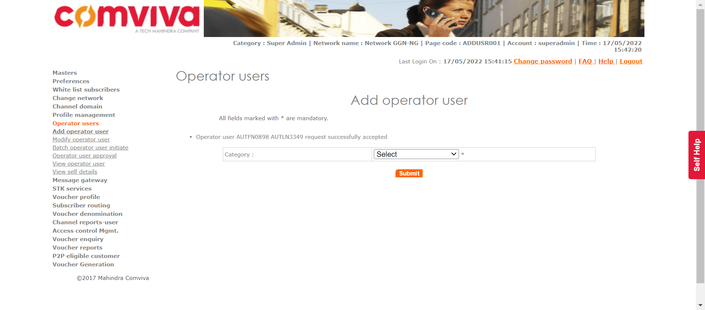
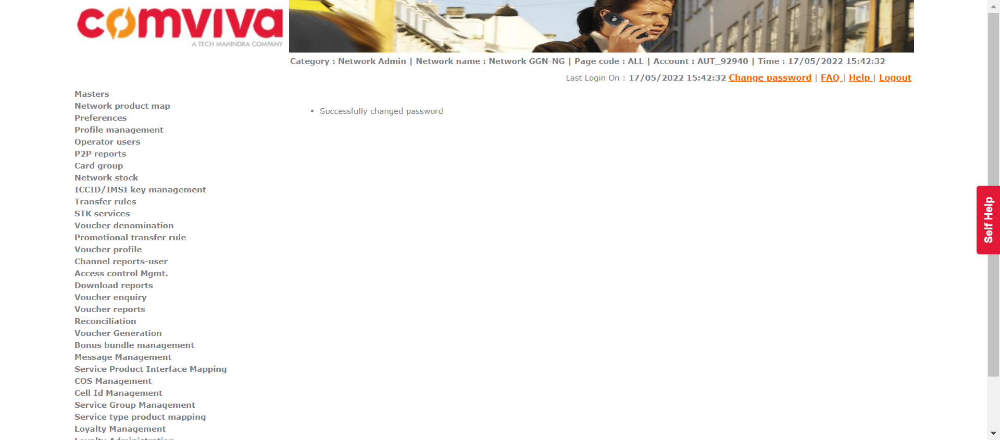
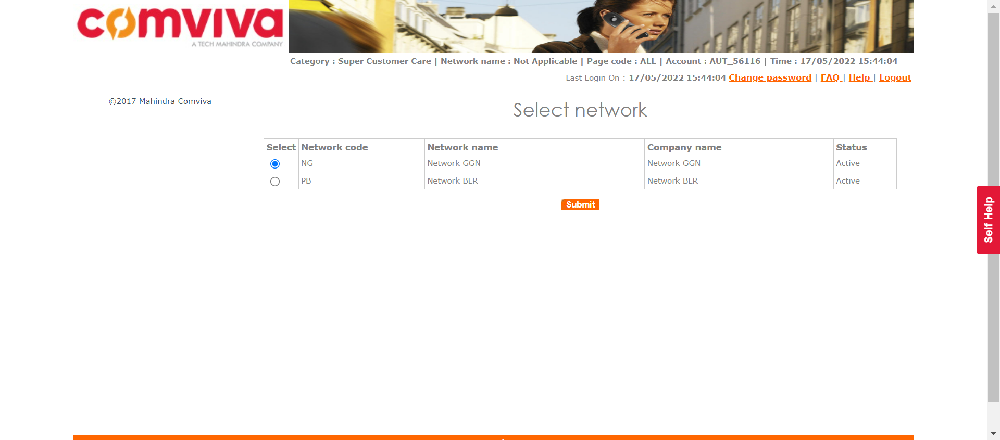
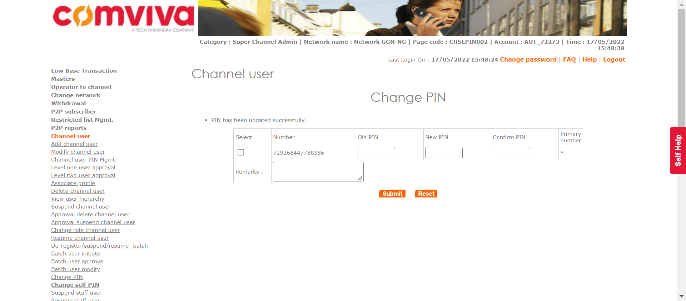
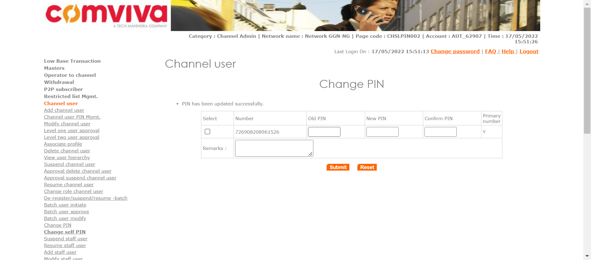
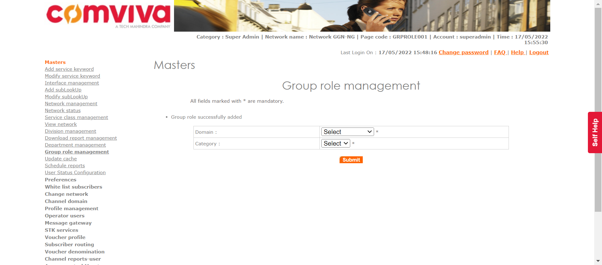
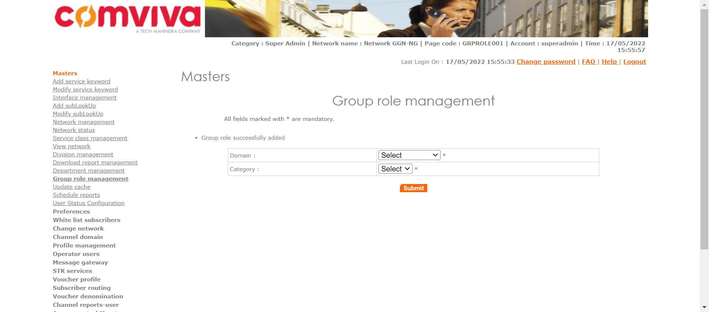

| Status | Timestamp | Details |
|---|---|---|
| info_outline | 3:46:53 PM | Entered divisionManagement() |
| info_outline | 3:46:53 PM | Trying to get User with Access: DIVISIONMGMT |
| low_priority | 3:46:53 PM | java.lang.NullPointerException at com.utils.ExcelUtility.getCellData(ExcelUtility.java:311) at com.classes.UserAccess.getUserWithAccess(UserAccess.java:63) at com.Features.DivisionDeptManagment.divisionManagement(DivisionDeptManagment.java:79) at com.testscripts.prerequisites.PreRequisite_DivisionManagment.Test_AddDivisionDepartment(PreRequisite_DivisionManagment.java:27) at sun.reflect.NativeMethodAccessorImpl.invoke0(Native Method) at sun.reflect.NativeMethodAccessorImpl.invoke(Unknown Source) at sun.reflect.DelegatingMethodAccessorImpl.invoke(Unknown Source) at java.lang.reflect.Method.invoke(Unknown Source) at org.testng.internal.MethodInvocationHelper.invokeMethod(MethodInvocationHelper.java:124) at org.testng.internal.Invoker.invokeMethod(Invoker.java:580) at org.testng.internal.Invoker.invokeTestMethod(Invoker.java:716) at org.testng.internal.Invoker.invokeTestMethods(Invoker.java:988) at org.testng.internal.TestMethodWorker.invokeTestMethods(TestMethodWorker.java:125) at org.testng.internal.TestMethodWorker.run(TestMethodWorker.java:109) at org.testng.TestRunner.privateRun(TestRunner.java:648) at org.testng.TestRunner.run(TestRunner.java:505) at org.testng.SuiteRunner.runTest(SuiteRunner.java:455) at org.testng.SuiteRunner.runSequentially(SuiteRunner.java:450) at org.testng.SuiteRunner.privateRun(SuiteRunner.java:415) at org.testng.SuiteRunner.run(SuiteRunner.java:364) at org.testng.SuiteRunnerWorker.runSuite(SuiteRunnerWorker.java:52) at org.testng.SuiteRunnerWorker.run(SuiteRunnerWorker.java:84) at org.testng.TestNG.runSuitesSequentially(TestNG.java:1208) at org.testng.TestNG.runSuitesLocally(TestNG.java:1137) at org.testng.TestNG.runSuites(TestNG.java:1049) at org.testng.TestNG.run(TestNG.java:1017) at org.testng.remote.AbstractRemoteTestNG.run(AbstractRemoteTestNG.java:115) at org.testng.remote.RemoteTestNG.initAndRun(RemoteTestNG.java:251) at org.testng.remote.RemoteTestNG.main(RemoteTestNG.java:77) |
| low_priority | 3:46:53 PM | java.lang.NullPointerException at com.utils.ExcelUtility.getCellData(ExcelUtility.java:311) at com.classes.UserAccess.getUserWithAccess(UserAccess.java:64) at com.Features.DivisionDeptManagment.divisionManagement(DivisionDeptManagment.java:79) at com.testscripts.prerequisites.PreRequisite_DivisionManagment.Test_AddDivisionDepartment(PreRequisite_DivisionManagment.java:27) at sun.reflect.NativeMethodAccessorImpl.invoke0(Native Method) at sun.reflect.NativeMethodAccessorImpl.invoke(Unknown Source) at sun.reflect.DelegatingMethodAccessorImpl.invoke(Unknown Source) at java.lang.reflect.Method.invoke(Unknown Source) at org.testng.internal.MethodInvocationHelper.invokeMethod(MethodInvocationHelper.java:124) at org.testng.internal.Invoker.invokeMethod(Invoker.java:580) at org.testng.internal.Invoker.invokeTestMethod(Invoker.java:716) at org.testng.internal.Invoker.invokeTestMethods(Invoker.java:988) at org.testng.internal.TestMethodWorker.invokeTestMethods(TestMethodWorker.java:125) at org.testng.internal.TestMethodWorker.run(TestMethodWorker.java:109) at org.testng.TestRunner.privateRun(TestRunner.java:648) at org.testng.TestRunner.run(TestRunner.java:505) at org.testng.SuiteRunner.runTest(SuiteRunner.java:455) at org.testng.SuiteRunner.runSequentially(SuiteRunner.java:450) at org.testng.SuiteRunner.privateRun(SuiteRunner.java:415) at org.testng.SuiteRunner.run(SuiteRunner.java:364) at org.testng.SuiteRunnerWorker.runSuite(SuiteRunnerWorker.java:52) at org.testng.SuiteRunnerWorker.run(SuiteRunnerWorker.java:84) at org.testng.TestNG.runSuitesSequentially(TestNG.java:1208) at org.testng.TestNG.runSuitesLocally(TestNG.java:1137) at org.testng.TestNG.runSuites(TestNG.java:1049) at org.testng.TestNG.run(TestNG.java:1017) at org.testng.remote.AbstractRemoteTestNG.run(AbstractRemoteTestNG.java:115) at org.testng.remote.RemoteTestNG.initAndRun(RemoteTestNG.java:251) at org.testng.remote.RemoteTestNG.main(RemoteTestNG.java:77) |
| info_outline | 3:46:53 PM | Entered :: getUserNameByLogin() |
| info_outline | 3:46:53 PM | select USER_NAME from users where LOGIN_ID = 'superadmin' |
| info_outline | 3:46:53 PM | Query Repository Returns: USER_NAME (Super Admin) |
| info_outline | 3:46:53 PM | UserAccess Returns: PARENT_NAME(Super Admin) | CATEGORY_NAME(Super Admin) | USER_NAME(Super Admin) | LOGIN_ID(superadmin) | PASSWORD(1357) |
| info_outline | 3:46:54 PM | Trying to select Language |
| info_outline | 3:46:54 PM | Language selected successfully as: English |
| info_outline | 3:46:54 PM | Trying to enter Login ID |
| info_outline | 3:46:54 PM | Login ID entered successfully as: superadmin |
| info_outline | 3:46:54 PM | Trying to enter Password |
| info_outline | 3:46:54 PM | Password entered successfully as: 1357 |
| info_outline | 3:46:54 PM | Trying to click Submit Button |
| info_outline | 3:46:55 PM | Submit button clicked successfully |
| info_outline | 3:46:55 PM | Trying to click Relogin Button |
| info_outline | 3:46:56 PM | Relogin Button Not Found |
| info_outline | 3:46:56 PM | Multiple Networks page exists: true |
| info_outline | 3:46:56 PM | Trying to click Masters link |
| info_outline | 3:46:57 PM | Master Link clicked successfully |
| info_outline | 3:46:57 PM | Trying to click Division Management link |
| info_outline | 3:46:57 PM | Division Management link clicked successfully |
| info_outline | 3:46:57 PM | Trying to click Add Button |
| info_outline | 3:46:58 PM | Add Button clicked successfully |
| info_outline | 3:46:58 PM | Trying to select Division Type |
| info_outline | 3:46:58 PM | Division Type selected as OPERATOR |
| info_outline | 3:46:58 PM | Trying to enter Division Name |
| info_outline | 3:46:58 PM | Division Name entered as: AUTDIV66616 |
| info_outline | 3:46:58 PM | Trying to enter Division Short Code |
| info_outline | 3:46:58 PM | Division Short Code entered as: AUTDIV66616 |
| info_outline | 3:46:58 PM | Trying to select Status |
| info_outline | 3:46:58 PM | Status selected successfully |
| info_outline | 3:46:58 PM | Trying to click Submit Button |
| info_outline | 3:46:59 PM | Submit Button clicked successfully |
| info_outline | 3:46:59 PM | Trying to click Confirm Button |
| info_outline | 3:47:00 PM | Confirm Button clicked successfully |
| info_outline | 3:47:00 PM | Trying to fetch Success Message |
| info_outline | 3:47:00 PM | Success Message Returned: Divison added successfully |
| info_outline | 3:47:00 PM | Exited divisionManagement() |
| Status | Timestamp | Details |
|---|---|---|
| info_outline | 3:47:00 PM | Entered departmentManagement() |
| info_outline | 3:47:00 PM | Trying to get User with Access: DIVISIONMGMT |
| low_priority | 3:47:00 PM | java.lang.NullPointerException at com.utils.ExcelUtility.getCellData(ExcelUtility.java:311) at com.classes.UserAccess.getUserWithAccess(UserAccess.java:63) at com.Features.DivisionDeptManagment.departmentManagement(DivisionDeptManagment.java:159) at com.testscripts.prerequisites.PreRequisite_DivisionManagment.Test_AddDivisionDepartment(PreRequisite_DivisionManagment.java:31) at sun.reflect.NativeMethodAccessorImpl.invoke0(Native Method) at sun.reflect.NativeMethodAccessorImpl.invoke(Unknown Source) at sun.reflect.DelegatingMethodAccessorImpl.invoke(Unknown Source) at java.lang.reflect.Method.invoke(Unknown Source) at org.testng.internal.MethodInvocationHelper.invokeMethod(MethodInvocationHelper.java:124) at org.testng.internal.Invoker.invokeMethod(Invoker.java:580) at org.testng.internal.Invoker.invokeTestMethod(Invoker.java:716) at org.testng.internal.Invoker.invokeTestMethods(Invoker.java:988) at org.testng.internal.TestMethodWorker.invokeTestMethods(TestMethodWorker.java:125) at org.testng.internal.TestMethodWorker.run(TestMethodWorker.java:109) at org.testng.TestRunner.privateRun(TestRunner.java:648) at org.testng.TestRunner.run(TestRunner.java:505) at org.testng.SuiteRunner.runTest(SuiteRunner.java:455) at org.testng.SuiteRunner.runSequentially(SuiteRunner.java:450) at org.testng.SuiteRunner.privateRun(SuiteRunner.java:415) at org.testng.SuiteRunner.run(SuiteRunner.java:364) at org.testng.SuiteRunnerWorker.runSuite(SuiteRunnerWorker.java:52) at org.testng.SuiteRunnerWorker.run(SuiteRunnerWorker.java:84) at org.testng.TestNG.runSuitesSequentially(TestNG.java:1208) at org.testng.TestNG.runSuitesLocally(TestNG.java:1137) at org.testng.TestNG.runSuites(TestNG.java:1049) at org.testng.TestNG.run(TestNG.java:1017) at org.testng.remote.AbstractRemoteTestNG.run(AbstractRemoteTestNG.java:115) at org.testng.remote.RemoteTestNG.initAndRun(RemoteTestNG.java:251) at org.testng.remote.RemoteTestNG.main(RemoteTestNG.java:77) |
| low_priority | 3:47:00 PM | java.lang.NullPointerException at com.utils.ExcelUtility.getCellData(ExcelUtility.java:311) at com.classes.UserAccess.getUserWithAccess(UserAccess.java:64) at com.Features.DivisionDeptManagment.departmentManagement(DivisionDeptManagment.java:159) at com.testscripts.prerequisites.PreRequisite_DivisionManagment.Test_AddDivisionDepartment(PreRequisite_DivisionManagment.java:31) at sun.reflect.NativeMethodAccessorImpl.invoke0(Native Method) at sun.reflect.NativeMethodAccessorImpl.invoke(Unknown Source) at sun.reflect.DelegatingMethodAccessorImpl.invoke(Unknown Source) at java.lang.reflect.Method.invoke(Unknown Source) at org.testng.internal.MethodInvocationHelper.invokeMethod(MethodInvocationHelper.java:124) at org.testng.internal.Invoker.invokeMethod(Invoker.java:580) at org.testng.internal.Invoker.invokeTestMethod(Invoker.java:716) at org.testng.internal.Invoker.invokeTestMethods(Invoker.java:988) at org.testng.internal.TestMethodWorker.invokeTestMethods(TestMethodWorker.java:125) at org.testng.internal.TestMethodWorker.run(TestMethodWorker.java:109) at org.testng.TestRunner.privateRun(TestRunner.java:648) at org.testng.TestRunner.run(TestRunner.java:505) at org.testng.SuiteRunner.runTest(SuiteRunner.java:455) at org.testng.SuiteRunner.runSequentially(SuiteRunner.java:450) at org.testng.SuiteRunner.privateRun(SuiteRunner.java:415) at org.testng.SuiteRunner.run(SuiteRunner.java:364) at org.testng.SuiteRunnerWorker.runSuite(SuiteRunnerWorker.java:52) at org.testng.SuiteRunnerWorker.run(SuiteRunnerWorker.java:84) at org.testng.TestNG.runSuitesSequentially(TestNG.java:1208) at org.testng.TestNG.runSuitesLocally(TestNG.java:1137) at org.testng.TestNG.runSuites(TestNG.java:1049) at org.testng.TestNG.run(TestNG.java:1017) at org.testng.remote.AbstractRemoteTestNG.run(AbstractRemoteTestNG.java:115) at org.testng.remote.RemoteTestNG.initAndRun(RemoteTestNG.java:251) at org.testng.remote.RemoteTestNG.main(RemoteTestNG.java:77) |
| info_outline | 3:47:00 PM | Entered :: getUserNameByLogin() |
| info_outline | 3:47:00 PM | select USER_NAME from users where LOGIN_ID = 'superadmin' |
| info_outline | 3:47:00 PM | Query Repository Returns: USER_NAME (Super Admin) |
| info_outline | 3:47:00 PM | UserAccess Returns: PARENT_NAME(Super Admin) | CATEGORY_NAME(Super Admin) | USER_NAME(Super Admin) | LOGIN_ID(superadmin) | PASSWORD(1357) |
| info_outline | 3:47:01 PM | Trying to select Language |
| info_outline | 3:47:01 PM | Language selected successfully as: English |
| info_outline | 3:47:01 PM | Trying to enter Login ID |
| info_outline | 3:47:01 PM | Login ID entered successfully as: superadmin |
| info_outline | 3:47:01 PM | Trying to enter Password |
| info_outline | 3:47:01 PM | Password entered successfully as: 1357 |
| info_outline | 3:47:01 PM | Trying to click Submit Button |
| info_outline | 3:47:02 PM | Submit button clicked successfully |
| info_outline | 3:47:02 PM | Trying to click Relogin Button |
| info_outline | 3:47:02 PM | Relogin Button Not Found |
| info_outline | 3:47:02 PM | Multiple Networks page exists: true |
| info_outline | 3:47:04 PM | Trying to click Masters link |
| info_outline | 3:47:05 PM | Master Link clicked successfully |
| info_outline | 3:47:05 PM | Trying to click Department Managament link |
| info_outline | 3:47:05 PM | Department management link clicked successfully |
| info_outline | 3:47:05 PM | Trying to select Division Type |
| info_outline | 3:47:06 PM | Division Type OPERATOR selected successfully |
| info_outline | 3:47:06 PM | Trying to select Division |
| info_outline | 3:47:06 PM | Division selected as: AUTDIV66616 |
| info_outline | 3:47:06 PM | Trying to click Submit Button |
| info_outline | 3:47:06 PM | Submit Button clicked successfully |
| info_outline | 3:47:06 PM | Trying to click Add Button |
| info_outline | 3:47:07 PM | Add Button clicked successfully |
| info_outline | 3:47:07 PM | Trying to enter Department Name |
| info_outline | 3:47:07 PM | Department name entered as: AUTDEPT201495 |
| info_outline | 3:47:07 PM | Trying to enter Department Short Code |
| info_outline | 3:47:07 PM | Department Short Code entered as: AUT5570 |
| info_outline | 3:47:07 PM | Trying to click Submit Button |
| info_outline | 3:47:08 PM | Submit Button clicked successfully |
| info_outline | 3:47:08 PM | Trying to click Confirm Button |
| info_outline | 3:47:08 PM | Confirm Button clicked successfully |
| info_outline | 3:47:08 PM | Trying to fetch Success Message |
| info_outline | 3:47:08 PM | Success Message Returned: Department added successfully |
| info_outline | 3:47:08 PM | Exited departmentManagement() |
| Status | Timestamp | Details |
|---|---|---|
| info_outline | 3:47:13 PM | Entered operatorUserInitiate(Super Admin, Network Admin) |
| info_outline | 3:47:13 PM | Login ID Found as: superadmin |
| info_outline | 3:47:13 PM | Password Found as: 1357 |
| info_outline | 3:47:14 PM | Trying to select Language |
| info_outline | 3:47:14 PM | Language selected successfully as: English |
| info_outline | 3:47:14 PM | Trying to enter Login ID |
| info_outline | 3:47:14 PM | Login ID entered successfully as: superadmin |
| info_outline | 3:47:14 PM | Trying to enter Password |
| info_outline | 3:47:14 PM | Password entered successfully as: 1357 |
| info_outline | 3:47:14 PM | Trying to click Submit Button |
| info_outline | 3:47:16 PM | Submit button clicked successfully |
| info_outline | 3:47:16 PM | Trying to click Relogin Button |
| info_outline | 3:47:16 PM | Relogin Button Not Found |
| info_outline | 3:47:16 PM | Multiple Networks page exists: true |
| info_outline | 3:47:17 PM | User clicked Operator Users. |
| info_outline | 3:47:17 PM | Trying to click add Operator User Link |
| info_outline | 3:47:18 PM | Add Operator User link clicked successfully |
| info_outline | 3:47:18 PM | Trying to select Category |
| info_outline | 3:47:18 PM | Category selected successfully |
| info_outline | 3:47:18 PM | Trying to click Submit Button |
| info_outline | 3:47:18 PM | Submit Button clicked successfully |
| info_outline | 3:47:18 PM | Trying to enter First Name |
| info_outline | 3:47:19 PM | First Name entered as: AUTFN0898 |
| info_outline | 3:47:19 PM | Trying to enter Last Name |
| info_outline | 3:47:19 PM | Last Name entered as: AUTLN3349 |
| info_outline | 3:47:19 PM | Trying to enter User Name |
| info_outline | 3:47:19 PM | User Name field not found |
| info_outline | 3:47:19 PM | Trying to enter Short Name |
| info_outline | 3:47:19 PM | Short Name entered as: AUTSN7881 |
| info_outline | 3:47:19 PM | Trying to select User Name Prefix |
| info_outline | 3:47:19 PM | User Name prefix selected successfully |
| info_outline | 3:47:19 PM | Trying to enter Subscriber Code |
| info_outline | 3:47:19 PM | Subscriber Code entered as: 631312 |
| info_outline | 3:47:19 PM | Trying to select Status |
| info_outline | 3:47:19 PM | Status drop down not found |
| info_outline | 3:47:19 PM | GenerateMSISDN class Returns: Remaining MSISDNLength (13) |
| info_outline | 3:47:19 PM | The generated MSISDN is ::722837834339135 |
| info_outline | 3:47:19 PM | Entered :: checkForUniqueMSISDN() |
| info_outline | 3:47:19 PM | Query Repository Returns: MSISDNStatus (N) |
| info_outline | 3:47:19 PM | The generated External Code is ::707562454 |
| info_outline | 3:47:19 PM | Entered :: checkForUniqueEXTCODE() |
| info_outline | 3:47:19 PM | Query Repository Returns: ExternalCodeStatus (N) |
| info_outline | 3:47:19 PM | Trying to enter External Code |
| info_outline | 3:47:19 PM | External Code entered as: 707562454 |
| info_outline | 3:47:19 PM | Trying to enter MobileNumber |
| info_outline | 3:47:19 PM | Mobile Number entered as: 722837834339135 |
| info_outline | 3:47:19 PM | Trying to enter Contact Number |
| info_outline | 3:47:20 PM | Contact No. entered as: 739556 |
| info_outline | 3:47:20 PM | Trying to select Division |
| info_outline | 3:47:20 PM | Division selected as: AUTDIV66616 |
| info_outline | 3:47:20 PM | Trying to select Department |
| info_outline | 3:47:20 PM | Department selected as: AUTDEPT201495 |
| info_outline | 3:47:20 PM | Trying to enter Address1 |
| info_outline | 3:47:20 PM | Address1 entered as: Add11305 |
| info_outline | 3:47:20 PM | Trying to enter Address2 |
| info_outline | 3:47:20 PM | Address2 entered as: Add21930 |
| info_outline | 3:47:20 PM | Trying to enter City |
| info_outline | 3:47:20 PM | City entered as: City7532 |
| info_outline | 3:47:20 PM | Trying to enter State |
| info_outline | 3:47:20 PM | State entered as: State2209 |
| info_outline | 3:47:20 PM | Trying to enter Country |
| info_outline | 3:47:20 PM | Country entered as: Country34 |
| info_outline | 3:47:20 PM | Trying to enter Email ID |
| info_outline | 3:47:21 PM | Email ID entered as: 1e8o6@mail.com |
| info_outline | 3:47:21 PM | The generated Login ID is ::AUT_92940 |
| info_outline | 3:47:21 PM | Entered :: checkForUniqueLoginID() |
| info_outline | 3:47:21 PM | Query Repository Returns: LoginIDStatus (N) |
| info_outline | 3:47:21 PM | Trying to enter Login ID |
| info_outline | 3:47:21 PM | Login ID entered as: AUT_92940 |
| info_outline | 3:47:21 PM | Trying to check if Assign Geographies link exist |
| info_outline | 3:47:21 PM | Assign Geographies link found |
| info_outline | 3:47:21 PM | Trying to click Assign Geographies link |
| info_outline | 3:47:21 PM | Assign Geographies link clicked successfully |
| info_outline | 3:47:25 PM | Trying to select Geography |
| info_outline | 3:47:25 PM | Geography selected successfully |
| info_outline | 3:47:25 PM | Trying to click Add button |
| info_outline | 3:47:26 PM | Add button for geography clicked successfully |
| info_outline | 3:47:26 PM | Geographies has been assigned to the user. |
| info_outline | 3:47:26 PM | ---- Window Handler ---- |
| info_outline | 3:47:28 PM | Trying to check if Assign Network link exists |
| info_outline | 3:47:28 PM | Assign Network link not found |
| info_outline | 3:47:29 PM | Assign Network Link not found |
| info_outline | 3:47:29 PM | ---- Window Handler ---- |
| info_outline | 3:47:31 PM | Trying to check if Assign Roles link exist |
| info_outline | 3:47:32 PM | Trying to click Assign Roles |
| info_outline | 3:47:32 PM | Assign Roles clicked successfully |
| info_outline | 3:47:33 PM | Trying to check ALL option for assign Roles |
| info_outline | 3:47:35 PM | ALL option selected for Assign Roles |
| info_outline | 3:47:35 PM | Trying to click Add button |
| info_outline | 3:47:37 PM | Add button clicked successfully |
| info_outline | 3:47:38 PM | ---- Window Handler ---- |
| info_outline | 3:47:40 PM | Trying to check if Assign Domain link exists |
| info_outline | 3:47:40 PM | Assign Domains link not found |
| info_outline | 3:47:41 PM | Assign Domains link not found |
| info_outline | 3:47:41 PM | ---- Window Handler ---- |
| info_outline | 3:47:43 PM | Trying to check if Assign Products link exist |
| info_outline | 3:47:43 PM | Assign Products link not found |
| info_outline | 3:47:44 PM | Assign Products link not found |
| info_outline | 3:47:44 PM | ---- Window Handler ---- |
| info_outline | 3:47:46 PM | Trying to click 'assign voucher type' link. |
| info_outline | 3:47:46 PM | 'assign voucher type' link clicked successfully |
| info_outline | 3:47:47 PM | Trying to check ALL option for voucher type. |
| info_outline | 3:47:47 PM | ALL option for Voucher types selected successfully |
| info_outline | 3:47:47 PM | Trying to click Add button |
| info_outline | 3:47:47 PM | Add button clicked successfully |
| info_outline | 3:47:48 PM | ---- Window Handler ---- |
| info_outline | 3:47:50 PM | Trying to check if Assign Phone Number link exist |
| info_outline | 3:47:50 PM | Assign phone number link not found |
| info_outline | 3:47:51 PM | Assign Phone Numbers link not found |
| info_outline | 3:47:51 PM | ---- Window Handler ---- |
| info_outline | 3:47:53 PM | Trying to check if Assign Services exists |
| info_outline | 3:47:53 PM | Assign Services link not found |
| info_outline | 3:47:54 PM | Assign Services link not found |
| info_outline | 3:47:54 PM | ---- Window Handler ---- |
| info_outline | 3:47:56 PM | Trying to click Assign Voucher Type link |
| info_outline | 3:47:56 PM | Assign voucher Type link clicked successfully |
| info_outline | 3:47:57 PM | Trying to click ALL Voucher Type |
| info_outline | 3:47:57 PM | All Voucher Types clicked successfully for Assign Voucher Type |
| info_outline | 3:47:57 PM | Trying to click Add button for Assign Voucher Type |
| info_outline | 3:47:57 PM | Add button for assign voucher Type clicked successfully |
| info_outline | 3:47:58 PM | ---- Window Handler ---- |
| info_outline | 3:48:00 PM | Trying to click Voucher Segment Type link |
| info_outline | 3:48:00 PM | Assign voucher Segment link clicked successfully |
| info_outline | 3:48:01 PM | Trying to click ALL Voucher Segment |
| info_outline | 3:48:01 PM | All Voucher Segments clicked successfully for Assign Voucher Type |
| info_outline | 3:48:01 PM | Trying to click Add button for Assign Voucher Type |
| info_outline | 3:48:01 PM | Add button for assign voucher Segment clicked successfully |
| info_outline | 3:48:02 PM | ---- Window Handler ---- |
| info_outline | 3:48:04 PM | Trying to check if Enter Password field exist |
| info_outline | 3:48:04 PM | Enter Password field found |
| info_outline | 3:48:04 PM | Trying to enter Password |
| info_outline | 3:48:04 PM | Password Entered as: Com@1357 |
| info_outline | 3:48:04 PM | Trying to enter Confirm Password |
| info_outline | 3:48:04 PM | Confirm Password Entered as: Com@1357 |
| info_outline | 3:48:04 PM | Trying to click Save button |
| info_outline | 3:48:05 PM | Save Button clicked successfully |
| info_outline | 3:48:05 PM | Trying to click Confirm button. |
| info_outline | 3:48:06 PM | Confirm Button clicked successfully |
| info_outline | 3:48:06 PM | Trying to fetch success or reject message. |
| info_outline | 3:48:06 PM | Message fetched as :: Operator user AUTFN0898 AUTLN3349 request successfully accepted |
| info_outline | 3:48:06 PM | Exited operatorUserInitiate() |
| info_outline | 3:48:06 PM | assertNotNull: Message Found. |
| info_outline | 3:48:07 PM |  |
| Status | Timestamp | Details |
|---|---|---|
| info_outline | 3:48:07 PM | Entered approveUser(Super Admin) |
| info_outline | 3:48:07 PM | Entered :: getSystemPreference(OPT_USR_APRL_LEVEL) |
| info_outline | 3:48:07 PM | Query Repository Returns: DEFAULT_VALUE (1) |
| info_outline | 3:48:07 PM | Login ID Found as: superadmin |
| info_outline | 3:48:07 PM | Password Found as: 1357 |
| info_outline | 3:48:08 PM | Trying to select Language |
| info_outline | 3:48:08 PM | Language selected successfully as: English |
| info_outline | 3:48:08 PM | Trying to enter Login ID |
| info_outline | 3:48:08 PM | Login ID entered successfully as: superadmin |
| info_outline | 3:48:08 PM | Trying to enter Password |
| info_outline | 3:48:08 PM | Password entered successfully as: 1357 |
| info_outline | 3:48:08 PM | Trying to click Submit Button |
| info_outline | 3:48:09 PM | Submit button clicked successfully |
| info_outline | 3:48:09 PM | Trying to click Relogin Button |
| info_outline | 3:48:09 PM | Relogin Button Not Found |
| info_outline | 3:48:09 PM | Multiple Networks page exists: true |
| info_outline | 3:48:11 PM | User clicked Operator Users. |
| info_outline | 3:48:11 PM | Trying to click Operator User Approval Link |
| info_outline | 3:48:11 PM | Operator User approval link clicked successfully |
| info_outline | 3:48:11 PM | Trying to Enter intiated Login ID: AUT_92940 |
| info_outline | 3:48:11 PM | Login ID entered successfully |
| info_outline | 3:48:11 PM | Trying to click approval submit button |
| info_outline | 3:48:12 PM | First Submit button clicked successfully |
| info_outline | 3:48:12 PM | Trying to click Submit button |
| info_outline | 3:48:13 PM | Second Submit button clicked successfully |
| info_outline | 3:48:13 PM | Tring to click Approve button |
| info_outline | 3:48:13 PM | Approve button clicked successfully |
| info_outline | 3:48:13 PM | Tring to click Confirm button |
| info_outline | 3:48:14 PM | Confirm button clicked successfully |
| info_outline | 3:48:14 PM | Trying to fetch success or reject message. |
| info_outline | 3:48:14 PM | Message fetched as :: User AUTFN0898 AUTLN3349 successfully approved. |
| info_outline | 3:48:15 PM | User clicked Logout. |
| info_outline | 3:48:15 PM | Exited approveUser() |
| Status | Timestamp | Details |
|---|---|---|
| info_outline | 3:48:15 PM | Entered changeUserFirstTimePassword() |
| info_outline | 3:48:15 PM | Entered :: getSystemPreference(AUTO_PWD_GENERATE_ALLOW) |
| info_outline | 3:48:15 PM | Query Repository Returns: DEFAULT_VALUE (false) |
| info_outline | 3:48:15 PM | Password field exist |
| info_outline | 3:48:15 PM | Trying to select Language |
| info_outline | 3:48:15 PM | Language selected successfully as: English |
| info_outline | 3:48:15 PM | Trying to enter Login ID |
| info_outline | 3:48:15 PM | Login ID entered successfully as: AUT_92940 |
| info_outline | 3:48:15 PM | Trying to enter Password |
| info_outline | 3:48:15 PM | Password entered successfully as: Com@1357 |
| info_outline | 3:48:15 PM | Trying to click Submit Button |
| info_outline | 3:48:16 PM | Submit button clicked successfully |
| info_outline | 3:48:16 PM | Trying to click Relogin Button |
| info_outline | 3:48:16 PM | Relogin Button Not Found |
| info_outline | 3:48:16 PM | Trying to enter Old Password |
| info_outline | 3:48:18 PM | Old Password Entered successfully:Com@1357 |
| info_outline | 3:48:18 PM | Trying to enter New Password |
| info_outline | 3:48:18 PM | New Password Entered successfully:Com@2468 |
| info_outline | 3:48:18 PM | Trying to enter Confirm Password |
| info_outline | 3:48:18 PM | Confirm Password Entered successfully:Com@2468 |
| info_outline | 3:48:18 PM | Trying to click Submit Button |
| info_outline | 3:48:19 PM | Submit Button clicked successfully |
| info_outline | 3:48:19 PM | Exited changeUserFirstTimePassword() |
| info_outline | 3:48:19 PM | Trying to fetch success message. |
| info_outline | 3:48:19 PM | Message fetched as :: Successfully changed password |
| info_outline | 3:48:19 PM | Expected: Successfully changed password |
| info_outline | 3:48:19 PM | Message Validation Success |
| info_outline | 3:48:20 PM |  |
| Status | Timestamp | Details |
|---|---|---|
| info_outline | 3:48:23 PM | Entered addGeographicalDomain(Zone, Zone) |
| info_outline | 3:48:23 PM | Trying to get User with Access: VIEWGRPHDOMAIN |
| low_priority | 3:48:23 PM | java.lang.NullPointerException at com.utils.ExcelUtility.getCellData(ExcelUtility.java:311) at com.classes.UserAccess.getUserWithAccess(UserAccess.java:64) at com.Features.GeogaphicalDomainManagement.addGeographicalDomain(GeogaphicalDomainManagement.java:89) at com.testscripts.prerequisites.PreRequisite_GeographicalDomainManagement.Test_AddGeographicalDomain(PreRequisite_GeographicalDomainManagement.java:46) at sun.reflect.NativeMethodAccessorImpl.invoke0(Native Method) at sun.reflect.NativeMethodAccessorImpl.invoke(Unknown Source) at sun.reflect.DelegatingMethodAccessorImpl.invoke(Unknown Source) at java.lang.reflect.Method.invoke(Unknown Source) at org.testng.internal.MethodInvocationHelper.invokeMethod(MethodInvocationHelper.java:124) at org.testng.internal.Invoker.invokeMethod(Invoker.java:580) at org.testng.internal.Invoker.invokeTestMethod(Invoker.java:716) at org.testng.internal.Invoker.invokeTestMethods(Invoker.java:988) at org.testng.internal.TestMethodWorker.invokeTestMethods(TestMethodWorker.java:125) at org.testng.internal.TestMethodWorker.run(TestMethodWorker.java:109) at org.testng.TestRunner.privateRun(TestRunner.java:648) at org.testng.TestRunner.run(TestRunner.java:505) at org.testng.SuiteRunner.runTest(SuiteRunner.java:455) at org.testng.SuiteRunner.runSequentially(SuiteRunner.java:450) at org.testng.SuiteRunner.privateRun(SuiteRunner.java:415) at org.testng.SuiteRunner.run(SuiteRunner.java:364) at org.testng.SuiteRunnerWorker.runSuite(SuiteRunnerWorker.java:52) at org.testng.SuiteRunnerWorker.run(SuiteRunnerWorker.java:84) at org.testng.TestNG.runSuitesSequentially(TestNG.java:1208) at org.testng.TestNG.runSuitesLocally(TestNG.java:1137) at org.testng.TestNG.runSuites(TestNG.java:1049) at org.testng.TestNG.run(TestNG.java:1017) at org.testng.remote.AbstractRemoteTestNG.run(AbstractRemoteTestNG.java:115) at org.testng.remote.RemoteTestNG.initAndRun(RemoteTestNG.java:251) at org.testng.remote.RemoteTestNG.main(RemoteTestNG.java:77) |
| info_outline | 3:48:23 PM | Entered :: getUserNameByLogin() |
| info_outline | 3:48:24 PM | select USER_NAME from users where LOGIN_ID = 'AUT_92940' |
| info_outline | 3:48:24 PM | Query Repository Returns: USER_NAME (AUTFN0898 AUTLN3349) |
| info_outline | 3:48:24 PM | UserAccess Returns: PARENT_NAME(Super Admin) | CATEGORY_NAME(Network Admin) | USER_NAME(AUTFN0898 AUTLN3349) | LOGIN_ID(AUT_92940) | PASSWORD(Com@2468) |
| info_outline | 3:48:24 PM | Trying to select Language |
| info_outline | 3:48:24 PM | Language selected successfully as: English |
| info_outline | 3:48:24 PM | Trying to enter Login ID |
| info_outline | 3:48:24 PM | Login ID entered successfully as: AUT_92940 |
| info_outline | 3:48:24 PM | Trying to enter Password |
| info_outline | 3:48:24 PM | Password entered successfully as: Com@2468 |
| info_outline | 3:48:24 PM | Trying to click Submit Button |
| info_outline | 3:48:26 PM | Submit button clicked successfully |
| info_outline | 3:48:26 PM | Trying to click Relogin Button |
| info_outline | 3:48:26 PM | Relogin Button Not Found |
| info_outline | 3:48:26 PM | Multiple Networks page exists: false |
| info_outline | 3:48:26 PM | Only single Network code exist: NG |
| info_outline | 3:48:26 PM | Multiple Networks page exists: false |
| info_outline | 3:48:26 PM | Only single Network code exist: NG |
| info_outline | 3:48:26 PM | User clicked Masters. |
| info_outline | 3:48:27 PM | User clicked Geographical Domain Management. |
| info_outline | 3:48:27 PM | User selected Domain:Zone |
| info_outline | 3:48:28 PM | User clicked submit Button |
| info_outline | 3:48:28 PM | User clicked Add Button. |
| info_outline | 3:48:28 PM | The generated Domain Code is ::AUTeBcl |
| info_outline | 3:48:28 PM | The generated Domain Name is ::AUTJ11DO |
| info_outline | 3:48:28 PM | The generated Domain Short Name is ::AUTIhC |
| info_outline | 3:48:29 PM | Entered :: checkUniqueDomain() |
| info_outline | 3:48:29 PM | Query Repository Returns: Unique Domain Code / Name / ShortName Status (N) |
| info_outline | 3:48:29 PM | User entered GrphDomainCode: AUTeBcl |
| info_outline | 3:48:29 PM | User entered GrphDomainName: AUTJ11DO |
| info_outline | 3:48:29 PM | User entered GrphDomainShortName: AUTIhC |
| info_outline | 3:48:29 PM | User entered Description: domainType Name |
| info_outline | 3:48:29 PM | 'Is Default' Selected |
| info_outline | 3:48:30 PM | User clicked Add Button. |
| info_outline | 3:48:31 PM | User clicked Confirm Button. |
| info_outline | 3:48:31 PM | No error Message found: org.openqa.selenium.NoSuchElementException: no such element: Unable to locate element: {"method":"xpath","selector":"//tr/td/ol/li"} (Session info: chrome=101.0.4951.54) For documentation on this error, please visit: http://seleniumhq.org/exceptions/no_such_element.html Build info: version: '3.10.0', revision: '176b4a9', time: '2018-03-02T19:03:16.397Z' System info: host: 'MCKL-20005142', ip: '192.168.1.35', os.name: 'Windows 10', os.arch: 'amd64', os.version: '10.0', java.version: '1.8.0_291' Driver info: org.openqa.selenium.chrome.ChromeDriver Capabilities {acceptInsecureCerts: false, browserName: chrome, browserVersion: 101.0.4951.54, chrome: {chromedriverVersion: 101.0.4951.41 (93c720db8323..., userDataDir: C:\Users\SOURAB~1.AWA\AppDa...}, goog:chromeOptions: {debuggerAddress: localhost:50149}, javascriptEnabled: true, networkConnectionEnabled: false, pageLoadStrategy: normal, platform: WINDOWS, platformName: WINDOWS, proxy: Proxy(), setWindowRect: true, strictFileInteractability: false, timeouts: {implicit: 0, pageLoad: 300000, script: 30000}, unhandledPromptBehavior: dismiss and notify, webauthn:extension:credBlob: true, webauthn:extension:largeBlob: true, webauthn:virtualAuthenticators: true} Session ID: 070d95c5611c199dcc1e655f073e403c *** Element info: {Using=xpath, value=//tr/td/ol/li} |
| info_outline | 3:48:31 PM | Added a: Zone |
| info_outline | 3:48:31 PM | Exited addGeographicalDomain() |
| Status | Timestamp | Details |
|---|---|---|
| info_outline | 3:48:31 PM | Entered addGeographicalDomain(Zone, Area) |
| info_outline | 3:48:31 PM | Trying to get User with Access: VIEWGRPHDOMAIN |
| low_priority | 3:48:31 PM | java.lang.NullPointerException at com.utils.ExcelUtility.getCellData(ExcelUtility.java:311) at com.classes.UserAccess.getUserWithAccess(UserAccess.java:64) at com.Features.GeogaphicalDomainManagement.addGeographicalDomain(GeogaphicalDomainManagement.java:89) at com.testscripts.prerequisites.PreRequisite_GeographicalDomainManagement.Test_AddGeographicalDomain(PreRequisite_GeographicalDomainManagement.java:46) at sun.reflect.NativeMethodAccessorImpl.invoke0(Native Method) at sun.reflect.NativeMethodAccessorImpl.invoke(Unknown Source) at sun.reflect.DelegatingMethodAccessorImpl.invoke(Unknown Source) at java.lang.reflect.Method.invoke(Unknown Source) at org.testng.internal.MethodInvocationHelper.invokeMethod(MethodInvocationHelper.java:124) at org.testng.internal.Invoker.invokeMethod(Invoker.java:580) at org.testng.internal.Invoker.invokeTestMethod(Invoker.java:716) at org.testng.internal.Invoker.invokeTestMethods(Invoker.java:988) at org.testng.internal.TestMethodWorker.invokeTestMethods(TestMethodWorker.java:125) at org.testng.internal.TestMethodWorker.run(TestMethodWorker.java:109) at org.testng.TestRunner.privateRun(TestRunner.java:648) at org.testng.TestRunner.run(TestRunner.java:505) at org.testng.SuiteRunner.runTest(SuiteRunner.java:455) at org.testng.SuiteRunner.runSequentially(SuiteRunner.java:450) at org.testng.SuiteRunner.privateRun(SuiteRunner.java:415) at org.testng.SuiteRunner.run(SuiteRunner.java:364) at org.testng.SuiteRunnerWorker.runSuite(SuiteRunnerWorker.java:52) at org.testng.SuiteRunnerWorker.run(SuiteRunnerWorker.java:84) at org.testng.TestNG.runSuitesSequentially(TestNG.java:1208) at org.testng.TestNG.runSuitesLocally(TestNG.java:1137) at org.testng.TestNG.runSuites(TestNG.java:1049) at org.testng.TestNG.run(TestNG.java:1017) at org.testng.remote.AbstractRemoteTestNG.run(AbstractRemoteTestNG.java:115) at org.testng.remote.RemoteTestNG.initAndRun(RemoteTestNG.java:251) at org.testng.remote.RemoteTestNG.main(RemoteTestNG.java:77) |
| info_outline | 3:48:31 PM | Entered :: getUserNameByLogin() |
| info_outline | 3:48:31 PM | select USER_NAME from users where LOGIN_ID = 'AUT_92940' |
| info_outline | 3:48:31 PM | Query Repository Returns: USER_NAME (AUTFN0898 AUTLN3349) |
| info_outline | 3:48:31 PM | UserAccess Returns: PARENT_NAME(Super Admin) | CATEGORY_NAME(Network Admin) | USER_NAME(AUTFN0898 AUTLN3349) | LOGIN_ID(AUT_92940) | PASSWORD(Com@2468) |
| info_outline | 3:48:31 PM | Trying to select Language |
| info_outline | 3:48:31 PM | Language selected successfully as: English |
| info_outline | 3:48:31 PM | Trying to enter Login ID |
| info_outline | 3:48:32 PM | Login ID entered successfully as: AUT_92940 |
| info_outline | 3:48:32 PM | Trying to enter Password |
| info_outline | 3:48:32 PM | Password entered successfully as: Com@2468 |
| info_outline | 3:48:32 PM | Trying to click Submit Button |
| info_outline | 3:48:33 PM | Submit button clicked successfully |
| info_outline | 3:48:33 PM | Trying to click Relogin Button |
| info_outline | 3:48:33 PM | Relogin Button Not Found |
| info_outline | 3:48:33 PM | Multiple Networks page exists: false |
| info_outline | 3:48:33 PM | Only single Network code exist: NG |
| info_outline | 3:48:33 PM | Multiple Networks page exists: false |
| info_outline | 3:48:33 PM | Only single Network code exist: NG |
| info_outline | 3:48:35 PM | User clicked Masters. |
| info_outline | 3:48:36 PM | User clicked Geographical Domain Management. |
| info_outline | 3:48:36 PM | User selected Domain:Area |
| info_outline | 3:48:37 PM | User clicked submit Button |
| info_outline | 3:48:37 PM | User clicked submit Button |
| info_outline | 3:48:38 PM | User clicked Add Button. |
| info_outline | 3:48:38 PM | The generated Domain Code is ::AUTME4f |
| info_outline | 3:48:38 PM | The generated Domain Name is ::AUTK3FLl |
| info_outline | 3:48:38 PM | The generated Domain Short Name is ::AUTIb1 |
| info_outline | 3:48:38 PM | Entered :: checkUniqueDomain() |
| info_outline | 3:48:38 PM | Query Repository Returns: Unique Domain Code / Name / ShortName Status (N) |
| info_outline | 3:48:38 PM | User entered GrphDomainCode: AUTME4f |
| info_outline | 3:48:38 PM | User entered GrphDomainName: AUTK3FLl |
| info_outline | 3:48:38 PM | User entered GrphDomainShortName: AUTIb1 |
| info_outline | 3:48:39 PM | User entered Description: domainType Name |
| info_outline | 3:48:39 PM | 'Is Default' Selected |
| info_outline | 3:48:39 PM | User clicked Add Button. |
| info_outline | 3:48:40 PM | User clicked Confirm Button. |
| info_outline | 3:48:40 PM | No error Message found: org.openqa.selenium.NoSuchElementException: no such element: Unable to locate element: {"method":"xpath","selector":"//tr/td/ol/li"} (Session info: chrome=101.0.4951.54) For documentation on this error, please visit: http://seleniumhq.org/exceptions/no_such_element.html Build info: version: '3.10.0', revision: '176b4a9', time: '2018-03-02T19:03:16.397Z' System info: host: 'MCKL-20005142', ip: '192.168.1.35', os.name: 'Windows 10', os.arch: 'amd64', os.version: '10.0', java.version: '1.8.0_291' Driver info: org.openqa.selenium.chrome.ChromeDriver Capabilities {acceptInsecureCerts: false, browserName: chrome, browserVersion: 101.0.4951.54, chrome: {chromedriverVersion: 101.0.4951.41 (93c720db8323..., userDataDir: C:\Users\SOURAB~1.AWA\AppDa...}, goog:chromeOptions: {debuggerAddress: localhost:50149}, javascriptEnabled: true, networkConnectionEnabled: false, pageLoadStrategy: normal, platform: WINDOWS, platformName: WINDOWS, proxy: Proxy(), setWindowRect: true, strictFileInteractability: false, timeouts: {implicit: 0, pageLoad: 300000, script: 30000}, unhandledPromptBehavior: dismiss and notify, webauthn:extension:credBlob: true, webauthn:extension:largeBlob: true, webauthn:virtualAuthenticators: true} Session ID: 070d95c5611c199dcc1e655f073e403c *** Element info: {Using=xpath, value=//tr/td/ol/li} |
| info_outline | 3:48:40 PM | Added a: Area |
| info_outline | 3:48:40 PM | Exited addGeographicalDomain() |
| Status | Timestamp | Details |
|---|---|---|
| info_outline | 3:48:40 PM | Entered addGeographicalDomain(Zone, Sub Area) |
| info_outline | 3:48:40 PM | Trying to get User with Access: VIEWGRPHDOMAIN |
| low_priority | 3:48:40 PM | java.lang.NullPointerException |
| info_outline | 3:48:40 PM | Entered :: getUserNameByLogin() |
| info_outline | 3:48:40 PM | select USER_NAME from users where LOGIN_ID = 'AUT_92940' |
| info_outline | 3:48:40 PM | Query Repository Returns: USER_NAME (AUTFN0898 AUTLN3349) |
| info_outline | 3:48:40 PM | UserAccess Returns: PARENT_NAME(Super Admin) | CATEGORY_NAME(Network Admin) | USER_NAME(AUTFN0898 AUTLN3349) | LOGIN_ID(AUT_92940) | PASSWORD(Com@2468) |
| info_outline | 3:48:41 PM | Trying to select Language |
| info_outline | 3:48:41 PM | Language selected successfully as: English |
| info_outline | 3:48:41 PM | Trying to enter Login ID |
| info_outline | 3:48:41 PM | Login ID entered successfully as: AUT_92940 |
| info_outline | 3:48:41 PM | Trying to enter Password |
| info_outline | 3:48:41 PM | Password entered successfully as: Com@2468 |
| info_outline | 3:48:41 PM | Trying to click Submit Button |
| info_outline | 3:48:42 PM | Submit button clicked successfully |
| info_outline | 3:48:42 PM | Trying to click Relogin Button |
| info_outline | 3:48:42 PM | Relogin Button Not Found |
| info_outline | 3:48:42 PM | Multiple Networks page exists: false |
| info_outline | 3:48:42 PM | Only single Network code exist: NG |
| info_outline | 3:48:42 PM | Multiple Networks page exists: false |
| info_outline | 3:48:42 PM | Only single Network code exist: NG |
| info_outline | 3:48:43 PM | User clicked Masters. |
| info_outline | 3:48:44 PM | User clicked Geographical Domain Management. |
| info_outline | 3:48:44 PM | User selected Domain:Sub Area |
| info_outline | 3:48:44 PM | User clicked submit Button |
| info_outline | 3:48:45 PM | User clicked submit Button |
| info_outline | 3:48:46 PM | User clicked Add Button. |
| info_outline | 3:48:46 PM | The generated Domain Code is ::AUTd9Ee |
| info_outline | 3:48:46 PM | The generated Domain Name is ::AUTnImgn |
| info_outline | 3:48:46 PM | The generated Domain Short Name is ::AUT63A |
| info_outline | 3:48:46 PM | Entered :: checkUniqueDomain() |
| info_outline | 3:48:46 PM | Query Repository Returns: Unique Domain Code / Name / ShortName Status (N) |
| info_outline | 3:48:46 PM | User entered GrphDomainCode: AUTd9Ee |
| info_outline | 3:48:46 PM | User entered GrphDomainName: AUTnImgn |
| info_outline | 3:48:46 PM | User entered GrphDomainShortName: AUT63A |
| info_outline | 3:48:46 PM | User entered Description: domainType Name |
| info_outline | 3:48:46 PM | 'Is Default' Selected |
| info_outline | 3:48:47 PM | User clicked Add Button. |
| info_outline | 3:48:47 PM | User clicked Confirm Button. |
| info_outline | 3:48:48 PM | No error Message found: org.openqa.selenium.NoSuchElementException: no such element: Unable to locate element: {"method":"xpath","selector":"//tr/td/ol/li"} (Session info: chrome=101.0.4951.54) For documentation on this error, please visit: http://seleniumhq.org/exceptions/no_such_element.html Build info: version: '3.10.0', revision: '176b4a9', time: '2018-03-02T19:03:16.397Z' System info: host: 'MCKL-20005142', ip: '192.168.1.35', os.name: 'Windows 10', os.arch: 'amd64', os.version: '10.0', java.version: '1.8.0_291' Driver info: org.openqa.selenium.chrome.ChromeDriver Capabilities {acceptInsecureCerts: false, browserName: chrome, browserVersion: 101.0.4951.54, chrome: {chromedriverVersion: 101.0.4951.41 (93c720db8323..., userDataDir: C:\Users\SOURAB~1.AWA\AppDa...}, goog:chromeOptions: {debuggerAddress: localhost:50149}, javascriptEnabled: true, networkConnectionEnabled: false, pageLoadStrategy: normal, platform: WINDOWS, platformName: WINDOWS, proxy: Proxy(), setWindowRect: true, strictFileInteractability: false, timeouts: {implicit: 0, pageLoad: 300000, script: 30000}, unhandledPromptBehavior: dismiss and notify, webauthn:extension:credBlob: true, webauthn:extension:largeBlob: true, webauthn:virtualAuthenticators: true} Session ID: 070d95c5611c199dcc1e655f073e403c *** Element info: {Using=xpath, value=//tr/td/ol/li} |
| info_outline | 3:48:48 PM | Added a: Sub Area |
| info_outline | 3:48:48 PM | Exited addGeographicalDomain() |
| Status | Timestamp | Details |
|---|---|---|
| info_outline | 3:48:51 PM | Entered operatorUserInitiate(Super Admin, Super Customer Care) |
| info_outline | 3:48:51 PM | Login ID Found as: superadmin |
| info_outline | 3:48:51 PM | Password Found as: 1357 |
| info_outline | 3:48:52 PM | Trying to select Language |
| info_outline | 3:48:52 PM | Language selected successfully as: English |
| info_outline | 3:48:52 PM | Trying to enter Login ID |
| info_outline | 3:48:52 PM | Login ID entered successfully as: superadmin |
| info_outline | 3:48:52 PM | Trying to enter Password |
| info_outline | 3:48:52 PM | Password entered successfully as: 1357 |
| info_outline | 3:48:52 PM | Trying to click Submit Button |
| info_outline | 3:48:53 PM | Submit button clicked successfully |
| info_outline | 3:48:53 PM | Trying to click Relogin Button |
| info_outline | 3:48:53 PM | Relogin Button Not Found |
| info_outline | 3:48:53 PM | Multiple Networks page exists: true |
| info_outline | 3:48:54 PM | User clicked Operator Users. |
| info_outline | 3:48:54 PM | Trying to click add Operator User Link |
| info_outline | 3:48:55 PM | Add Operator User link clicked successfully |
| info_outline | 3:48:55 PM | Trying to select Category |
| info_outline | 3:48:55 PM | Category selected successfully |
| info_outline | 3:48:55 PM | Trying to click Submit Button |
| info_outline | 3:48:55 PM | Submit Button clicked successfully |
| info_outline | 3:48:55 PM | Trying to enter First Name |
| info_outline | 3:48:56 PM | First Name entered as: AUTFN5918 |
| info_outline | 3:48:56 PM | Trying to enter Last Name |
| info_outline | 3:48:56 PM | Last Name entered as: AUTLN7246 |
| info_outline | 3:48:56 PM | Trying to enter User Name |
| info_outline | 3:48:56 PM | User Name field not found |
| info_outline | 3:48:56 PM | Trying to enter Short Name |
| info_outline | 3:48:56 PM | Short Name entered as: AUTSN8123 |
| info_outline | 3:48:56 PM | Trying to select User Name Prefix |
| info_outline | 3:48:56 PM | User Name prefix selected successfully |
| info_outline | 3:48:56 PM | Trying to enter Subscriber Code |
| info_outline | 3:48:56 PM | Subscriber Code entered as: 439523 |
| info_outline | 3:48:56 PM | Trying to select Status |
| info_outline | 3:48:56 PM | Status drop down not found |
| info_outline | 3:48:56 PM | GenerateMSISDN class Returns: Remaining MSISDNLength (13) |
| info_outline | 3:48:56 PM | The generated MSISDN is ::722495136489059 |
| info_outline | 3:48:56 PM | Entered :: checkForUniqueMSISDN() |
| info_outline | 3:48:56 PM | Query Repository Returns: MSISDNStatus (N) |
| info_outline | 3:48:56 PM | The generated External Code is ::742718110 |
| info_outline | 3:48:56 PM | Entered :: checkForUniqueEXTCODE() |
| info_outline | 3:48:56 PM | Query Repository Returns: ExternalCodeStatus (N) |
| info_outline | 3:48:56 PM | Trying to enter External Code |
| info_outline | 3:48:56 PM | External Code entered as: 742718110 |
| info_outline | 3:48:56 PM | Trying to enter MobileNumber |
| info_outline | 3:48:56 PM | Mobile Number entered as: 722495136489059 |
| info_outline | 3:48:56 PM | Trying to enter Contact Number |
| info_outline | 3:48:56 PM | Contact No. entered as: 037888 |
| info_outline | 3:48:56 PM | Trying to select Division |
| info_outline | 3:48:57 PM | Division selected as: AUTDIV66616 |
| info_outline | 3:48:57 PM | Trying to select Department |
| info_outline | 3:48:57 PM | Department selected as: AUTDEPT201495 |
| info_outline | 3:48:57 PM | Trying to enter Address1 |
| info_outline | 3:48:57 PM | Address1 entered as: Add12312 |
| info_outline | 3:48:57 PM | Trying to enter Address2 |
| info_outline | 3:48:57 PM | Address2 entered as: Add20940 |
| info_outline | 3:48:57 PM | Trying to enter City |
| info_outline | 3:48:57 PM | City entered as: City0730 |
| info_outline | 3:48:57 PM | Trying to enter State |
| info_outline | 3:48:57 PM | State entered as: State8723 |
| info_outline | 3:48:57 PM | Trying to enter Country |
| info_outline | 3:48:57 PM | Country entered as: Country65 |
| info_outline | 3:48:57 PM | Trying to enter Email ID |
| info_outline | 3:48:57 PM | Email ID entered as: knfjg@mail.com |
| info_outline | 3:48:57 PM | The generated Login ID is ::AUT_56116 |
| info_outline | 3:48:57 PM | Entered :: checkForUniqueLoginID() |
| info_outline | 3:48:57 PM | Query Repository Returns: LoginIDStatus (N) |
| info_outline | 3:48:57 PM | Trying to enter Login ID |
| info_outline | 3:48:57 PM | Login ID entered as: AUT_56116 |
| info_outline | 3:48:57 PM | Trying to check if Assign Geographies link exist |
| info_outline | 3:48:57 PM | Assign geographies link not found |
| info_outline | 3:48:58 PM | Assign Geographies link not found |
| info_outline | 3:48:58 PM | ---- Window Handler ---- |
| info_outline | 3:49:00 PM | Trying to check if Assign Network link exists |
| info_outline | 3:49:00 PM | Assign Network link found |
| info_outline | 3:49:00 PM | Trying to click Assign Network |
| info_outline | 3:49:01 PM | User clicked Assign Network. |
| info_outline | 3:49:02 PM | Trying to select ALL option for assign network |
| info_outline | 3:49:02 PM | ALL option for Assign Networks selected successfully |
| info_outline | 3:49:02 PM | Trying to click Add button |
| info_outline | 3:49:02 PM | Add button clicked successfully |
| info_outline | 3:49:03 PM | ---- Window Handler ---- |
| info_outline | 3:49:05 PM | Trying to check if Assign Roles link exist |
| info_outline | 3:49:05 PM | Trying to click Assign Roles |
| info_outline | 3:49:05 PM | Assign Roles clicked successfully |
| info_outline | 3:49:06 PM | Trying to check ALL option for assign Roles |
| info_outline | 3:49:08 PM | ALL option selected for Assign Roles |
| info_outline | 3:49:08 PM | Trying to click Add button |
| info_outline | 3:49:10 PM | Add button clicked successfully |
| info_outline | 3:49:11 PM | ---- Window Handler ---- |
| info_outline | 3:49:13 PM | Trying to check if Assign Domain link exists |
| info_outline | 3:49:13 PM | Assign Domains link not found |
| info_outline | 3:49:14 PM | Assign Domains link not found |
| info_outline | 3:49:14 PM | ---- Window Handler ---- |
| info_outline | 3:49:16 PM | Trying to check if Assign Products link exist |
| info_outline | 3:49:16 PM | Assign Products link not found |
| info_outline | 3:49:17 PM | Assign Products link not found |
| info_outline | 3:49:17 PM | ---- Window Handler ---- |
| info_outline | 3:49:19 PM | Trying to click 'assign voucher type' link. |
| info_outline | 3:49:19 PM | 'assign voucher type' link clicked successfully |
| info_outline | 3:49:20 PM | Trying to check ALL option for voucher type. |
| info_outline | 3:49:20 PM | ALL option for Voucher types selected successfully |
| info_outline | 3:49:20 PM | Trying to click Add button |
| info_outline | 3:49:20 PM | Add button clicked successfully |
| info_outline | 3:49:21 PM | ---- Window Handler ---- |
| info_outline | 3:49:23 PM | Trying to check if Assign Phone Number link exist |
| info_outline | 3:49:23 PM | Assign phone number link not found |
| info_outline | 3:49:24 PM | Assign Phone Numbers link not found |
| info_outline | 3:49:24 PM | ---- Window Handler ---- |
| info_outline | 3:49:26 PM | Trying to check if Assign Services exists |
| info_outline | 3:49:26 PM | Assign Services link not found |
| info_outline | 3:49:27 PM | Assign Services link not found |
| info_outline | 3:49:27 PM | ---- Window Handler ---- |
| info_outline | 3:49:29 PM | Trying to click Assign Voucher Type link |
| info_outline | 3:49:29 PM | Assign voucher Type link clicked successfully |
| info_outline | 3:49:30 PM | Trying to click ALL Voucher Type |
| info_outline | 3:49:30 PM | All Voucher Types clicked successfully for Assign Voucher Type |
| info_outline | 3:49:30 PM | Trying to click Add button for Assign Voucher Type |
| info_outline | 3:49:30 PM | Add button for assign voucher Type clicked successfully |
| info_outline | 3:49:31 PM | ---- Window Handler ---- |
| info_outline | 3:49:33 PM | Trying to click Voucher Segment Type link |
| info_outline | 3:49:33 PM | Assign voucher Segment link not exist |
| info_outline | 3:49:34 PM | Assign Voucher Segment link not found |
| info_outline | 3:49:34 PM | ---- Window Handler ---- |
| info_outline | 3:49:36 PM | Trying to check if Enter Password field exist |
| info_outline | 3:49:36 PM | Enter Password field found |
| info_outline | 3:49:36 PM | Trying to enter Password |
| info_outline | 3:49:36 PM | Password Entered as: Com@1357 |
| info_outline | 3:49:36 PM | Trying to enter Confirm Password |
| info_outline | 3:49:36 PM | Confirm Password Entered as: Com@1357 |
| info_outline | 3:49:36 PM | Trying to click Save button |
| info_outline | 3:49:37 PM | Save Button clicked successfully |
| info_outline | 3:49:37 PM | Trying to click Confirm button. |
| info_outline | 3:49:38 PM | Confirm Button clicked successfully |
| info_outline | 3:49:38 PM | Trying to fetch success or reject message. |
| info_outline | 3:49:38 PM | Message fetched as :: Operator user AUTFN5918 AUTLN7246 request successfully accepted |
| info_outline | 3:49:38 PM | Exited operatorUserInitiate() |
| info_outline | 3:49:38 PM | Entered approveUser(Super Admin) |
| info_outline | 3:49:38 PM | Entered :: getSystemPreference(OPT_USR_APRL_LEVEL) |
| info_outline | 3:49:38 PM | Query Repository Returns: DEFAULT_VALUE (1) |
| info_outline | 3:49:38 PM | Login ID Found as: superadmin |
| info_outline | 3:49:38 PM | Password Found as: 1357 |
| info_outline | 3:49:39 PM | Trying to select Language |
| info_outline | 3:49:39 PM | Language selected successfully as: English |
| info_outline | 3:49:39 PM | Trying to enter Login ID |
| info_outline | 3:49:39 PM | Login ID entered successfully as: superadmin |
| info_outline | 3:49:39 PM | Trying to enter Password |
| info_outline | 3:49:39 PM | Password entered successfully as: 1357 |
| info_outline | 3:49:39 PM | Trying to click Submit Button |
| info_outline | 3:49:40 PM | Submit button clicked successfully |
| info_outline | 3:49:40 PM | Trying to click Relogin Button |
| info_outline | 3:49:40 PM | Relogin Button Not Found |
| info_outline | 3:49:40 PM | Multiple Networks page exists: true |
| info_outline | 3:49:42 PM | User clicked Operator Users. |
| info_outline | 3:49:42 PM | Trying to click Operator User Approval Link |
| info_outline | 3:49:42 PM | Operator User approval link clicked successfully |
| info_outline | 3:49:42 PM | Trying to Enter intiated Login ID: AUT_56116 |
| info_outline | 3:49:42 PM | Login ID entered successfully |
| info_outline | 3:49:42 PM | Trying to click approval submit button |
| info_outline | 3:49:43 PM | First Submit button clicked successfully |
| info_outline | 3:49:43 PM | Trying to click Submit button |
| info_outline | 3:49:43 PM | Second Submit button clicked successfully |
| info_outline | 3:49:43 PM | Tring to click Approve button |
| info_outline | 3:49:44 PM | Approve button clicked successfully |
| info_outline | 3:49:44 PM | Tring to click Confirm button |
| info_outline | 3:49:45 PM | Confirm button clicked successfully |
| info_outline | 3:49:45 PM | Trying to fetch success or reject message. |
| info_outline | 3:49:45 PM | Message fetched as :: User AUTFN5918 AUTLN7246 successfully approved. |
| info_outline | 3:49:45 PM | User clicked Logout. |
| info_outline | 3:49:45 PM | Exited approveUser() |
| Status | Timestamp | Details |
|---|---|---|
| info_outline | 3:49:46 PM | Entered changeUserFirstTimePassword() |
| info_outline | 3:49:46 PM | Entered :: getSystemPreference(AUTO_PWD_GENERATE_ALLOW) |
| info_outline | 3:49:46 PM | Query Repository Returns: DEFAULT_VALUE (false) |
| info_outline | 3:49:46 PM | Password field exist |
| info_outline | 3:49:46 PM | Trying to select Language |
| info_outline | 3:49:46 PM | Language selected successfully as: English |
| info_outline | 3:49:46 PM | Trying to enter Login ID |
| info_outline | 3:49:46 PM | Login ID entered successfully as: AUT_56116 |
| info_outline | 3:49:46 PM | Trying to enter Password |
| info_outline | 3:49:46 PM | Password entered successfully as: Com@1357 |
| info_outline | 3:49:46 PM | Trying to click Submit Button |
| info_outline | 3:49:47 PM | Submit button clicked successfully |
| info_outline | 3:49:47 PM | Trying to click Relogin Button |
| info_outline | 3:49:47 PM | Relogin Button Not Found |
| info_outline | 3:49:47 PM | Trying to enter Old Password |
| info_outline | 3:49:49 PM | Old Password Entered successfully:Com@1357 |
| info_outline | 3:49:49 PM | Trying to enter New Password |
| info_outline | 3:49:50 PM | New Password Entered successfully:Com@2468 |
| info_outline | 3:49:50 PM | Trying to enter Confirm Password |
| info_outline | 3:49:50 PM | Confirm Password Entered successfully:Com@2468 |
| info_outline | 3:49:50 PM | Trying to click Submit Button |
| info_outline | 3:49:50 PM | Submit Button clicked successfully |
| info_outline | 3:49:50 PM | Exited changeUserFirstTimePassword() |
| info_outline | 3:49:50 PM | Trying to fetch success message. |
| info_outline | 3:49:50 PM | Success message not found. |
| info_outline | 3:49:50 PM | No message found on screen. |
| info_outline | 3:49:50 PM | Entered :: fetchUserPassword() |
| info_outline | 3:49:50 PM | Entered :: getSystemPreference(PINPAS_EN_DE_CRYPTION_TYPE) |
| info_outline | 3:49:50 PM | Query Repository Returns: DEFAULT_VALUE (DES) |
| info_outline | 3:49:50 PM | Encrypted value is :: 7eda411be5ea4a90917de90f9b1b8df5 |
| info_outline | 3:49:50 PM | Decrypted value returned as: Com@2468 |
| info_outline | 3:49:50 PM | Query Repository Returns: DecryptedPassword (Com@2468) |
| info_outline | 3:49:50 PM | Expected: Com@2468 |
| info_outline | 3:49:50 PM | Message Validation Success |
| info_outline | 3:49:51 PM |  |
| check_circle | 3:49:51 PM | Password changed successfully but no message appeared on application. |
| info_outline | 3:49:51 PM | Pin Change is not required. |
| Status | Timestamp | Details |
|---|---|---|
| info_outline | 3:49:51 PM | Entered operatorUserInitiate(Super Admin, Sub Super Admin) |
| info_outline | 3:49:52 PM | Login ID Found as: superadmin |
| info_outline | 3:49:52 PM | Password Found as: 1357 |
| info_outline | 3:49:52 PM | Trying to select Language |
| info_outline | 3:49:52 PM | Language selected successfully as: English |
| info_outline | 3:49:52 PM | Trying to enter Login ID |
| info_outline | 3:49:52 PM | Login ID entered successfully as: superadmin |
| info_outline | 3:49:52 PM | Trying to enter Password |
| info_outline | 3:49:52 PM | Password entered successfully as: 1357 |
| info_outline | 3:49:52 PM | Trying to click Submit Button |
| info_outline | 3:49:53 PM | Submit button clicked successfully |
| info_outline | 3:49:53 PM | Trying to click Relogin Button |
| info_outline | 3:49:53 PM | Relogin Button Not Found |
| info_outline | 3:49:53 PM | Multiple Networks page exists: true |
| info_outline | 3:49:55 PM | User clicked Operator Users. |
| info_outline | 3:49:55 PM | Trying to click add Operator User Link |
| info_outline | 3:49:55 PM | Add Operator User link clicked successfully |
| info_outline | 3:49:55 PM | Trying to select Category |
| info_outline | 3:49:55 PM | Category selected successfully |
| info_outline | 3:49:55 PM | Trying to click Submit Button |
| info_outline | 3:49:56 PM | Submit Button clicked successfully |
| info_outline | 3:49:56 PM | Trying to enter First Name |
| info_outline | 3:49:56 PM | First Name entered as: AUTFN9803 |
| info_outline | 3:49:56 PM | Trying to enter Last Name |
| info_outline | 3:49:56 PM | Last Name entered as: AUTLN9531 |
| info_outline | 3:49:56 PM | Trying to enter User Name |
| info_outline | 3:49:56 PM | User Name field not found |
| info_outline | 3:49:56 PM | Trying to enter Short Name |
| info_outline | 3:49:56 PM | Short Name entered as: AUTSN9258 |
| info_outline | 3:49:56 PM | Trying to select User Name Prefix |
| info_outline | 3:49:56 PM | User Name prefix selected successfully |
| info_outline | 3:49:56 PM | Trying to enter Subscriber Code |
| info_outline | 3:49:56 PM | Subscriber Code entered as: 008077 |
| info_outline | 3:49:56 PM | Trying to select Status |
| info_outline | 3:49:56 PM | Status drop down not found |
| info_outline | 3:49:56 PM | GenerateMSISDN class Returns: Remaining MSISDNLength (13) |
| info_outline | 3:49:56 PM | The generated MSISDN is ::721564648653888 |
| info_outline | 3:49:56 PM | Entered :: checkForUniqueMSISDN() |
| info_outline | 3:49:56 PM | Query Repository Returns: MSISDNStatus (N) |
| info_outline | 3:49:56 PM | The generated External Code is ::219384094 |
| info_outline | 3:49:56 PM | Entered :: checkForUniqueEXTCODE() |
| info_outline | 3:49:56 PM | Query Repository Returns: ExternalCodeStatus (N) |
| info_outline | 3:49:56 PM | Trying to enter External Code |
| info_outline | 3:49:56 PM | External Code entered as: 219384094 |
| info_outline | 3:49:56 PM | Trying to enter MobileNumber |
| info_outline | 3:49:57 PM | Mobile Number entered as: 721564648653888 |
| info_outline | 3:49:57 PM | Trying to enter Contact Number |
| info_outline | 3:49:57 PM | Contact No. entered as: 884670 |
| info_outline | 3:49:57 PM | Trying to select Division |
| info_outline | 3:49:57 PM | Division selected as: AUTDIV66616 |
| info_outline | 3:49:57 PM | Trying to select Department |
| info_outline | 3:49:57 PM | Department selected as: AUTDEPT201495 |
| info_outline | 3:49:57 PM | Trying to enter Address1 |
| info_outline | 3:49:57 PM | Address1 entered as: Add12151 |
| info_outline | 3:49:57 PM | Trying to enter Address2 |
| info_outline | 3:49:57 PM | Address2 entered as: Add26326 |
| info_outline | 3:49:57 PM | Trying to enter City |
| info_outline | 3:49:57 PM | City entered as: City5923 |
| info_outline | 3:49:57 PM | Trying to enter State |
| info_outline | 3:49:57 PM | State entered as: State7727 |
| info_outline | 3:49:57 PM | Trying to enter Country |
| info_outline | 3:49:58 PM | Country entered as: Country19 |
| info_outline | 3:49:58 PM | Trying to enter Email ID |
| info_outline | 3:49:58 PM | Email ID entered as: 1jlo0@mail.com |
| info_outline | 3:49:58 PM | The generated Login ID is ::AUT_93329 |
| info_outline | 3:49:58 PM | Entered :: checkForUniqueLoginID() |
| info_outline | 3:49:58 PM | Query Repository Returns: LoginIDStatus (N) |
| info_outline | 3:49:58 PM | Trying to enter Login ID |
| info_outline | 3:49:58 PM | Login ID entered as: AUT_93329 |
| info_outline | 3:49:58 PM | Trying to check if Assign Geographies link exist |
| info_outline | 3:49:58 PM | Assign Geographies link found |
| info_outline | 3:49:58 PM | Trying to click Assign Geographies link |
| info_outline | 3:49:58 PM | Assign Geographies link clicked successfully |
| info_outline | 3:50:02 PM | Trying to select Geography |
| info_outline | 3:50:02 PM | Geography selected successfully |
| info_outline | 3:50:02 PM | Trying to click Add button |
| info_outline | 3:50:03 PM | Add button for geography clicked successfully |
| info_outline | 3:50:03 PM | Geographies has been assigned to the user. |
| info_outline | 3:50:03 PM | ---- Window Handler ---- |
| info_outline | 3:50:05 PM | Trying to check if Assign Network link exists |
| info_outline | 3:50:05 PM | Assign Network link not found |
| info_outline | 3:50:06 PM | Assign Network Link not found |
| info_outline | 3:50:06 PM | ---- Window Handler ---- |
| info_outline | 3:50:08 PM | Trying to check if Assign Roles link exist |
| info_outline | 3:50:09 PM | Trying to click Assign Roles |
| info_outline | 3:50:09 PM | Assign Roles clicked successfully |
| info_outline | 3:50:10 PM | Trying to check ALL option for assign Roles |
| info_outline | 3:50:12 PM | ALL option selected for Assign Roles |
| info_outline | 3:50:12 PM | Trying to click Add button |
| info_outline | 3:50:14 PM | Add button clicked successfully |
| info_outline | 3:50:16 PM | ---- Window Handler ---- |
| info_outline | 3:50:18 PM | Trying to check if Assign Domain link exists |
| info_outline | 3:50:18 PM | Assign Domains link not found |
| info_outline | 3:50:19 PM | Assign Domains link not found |
| info_outline | 3:50:19 PM | ---- Window Handler ---- |
| info_outline | 3:50:21 PM | Trying to check if Assign Products link exist |
| info_outline | 3:50:21 PM | Assign Products link not found |
| info_outline | 3:50:22 PM | Assign Products link not found |
| info_outline | 3:50:22 PM | ---- Window Handler ---- |
| info_outline | 3:50:24 PM | Trying to click 'assign voucher type' link. |
| info_outline | 3:50:24 PM | 'assign voucher type' link clicked successfully |
| info_outline | 3:50:25 PM | Trying to check ALL option for voucher type. |
| info_outline | 3:50:25 PM | ALL option for Voucher types selected successfully |
| info_outline | 3:50:25 PM | Trying to click Add button |
| info_outline | 3:50:25 PM | Add button clicked successfully |
| info_outline | 3:50:27 PM | ---- Window Handler ---- |
| info_outline | 3:50:29 PM | Trying to check if Assign Phone Number link exist |
| info_outline | 3:50:29 PM | Assign phone number link not found |
| info_outline | 3:50:30 PM | Assign Phone Numbers link not found |
| info_outline | 3:50:30 PM | ---- Window Handler ---- |
| info_outline | 3:50:32 PM | Trying to check if Assign Services exists |
| info_outline | 3:50:32 PM | Assign Services link not found |
| info_outline | 3:50:33 PM | Assign Services link not found |
| info_outline | 3:50:33 PM | ---- Window Handler ---- |
| info_outline | 3:50:35 PM | Trying to click Assign Voucher Type link |
| info_outline | 3:50:35 PM | Assign voucher Type link clicked successfully |
| info_outline | 3:50:36 PM | Trying to click ALL Voucher Type |
| info_outline | 3:50:36 PM | All Voucher Types clicked successfully for Assign Voucher Type |
| info_outline | 3:50:36 PM | Trying to click Add button for Assign Voucher Type |
| info_outline | 3:50:36 PM | Add button for assign voucher Type clicked successfully |
| info_outline | 3:50:38 PM | ---- Window Handler ---- |
| info_outline | 3:50:40 PM | Trying to click Voucher Segment Type link |
| info_outline | 3:50:40 PM | Assign voucher Segment link clicked successfully |
| info_outline | 3:50:41 PM | Trying to click ALL Voucher Segment |
| info_outline | 3:50:41 PM | All Voucher Segments clicked successfully for Assign Voucher Type |
| info_outline | 3:50:41 PM | Trying to click Add button for Assign Voucher Type |
| info_outline | 3:50:41 PM | Add button for assign voucher Segment clicked successfully |
| info_outline | 3:50:42 PM | ---- Window Handler ---- |
| info_outline | 3:50:44 PM | Trying to check if Enter Password field exist |
| info_outline | 3:50:45 PM | Enter Password field found |
| info_outline | 3:50:45 PM | Trying to enter Password |
| info_outline | 3:50:45 PM | Password Entered as: Com@1357 |
| info_outline | 3:50:45 PM | Trying to enter Confirm Password |
| info_outline | 3:50:45 PM | Confirm Password Entered as: Com@1357 |
| info_outline | 3:50:45 PM | Trying to click Save button |
| info_outline | 3:50:46 PM | Save Button clicked successfully |
| info_outline | 3:50:46 PM | Trying to click Confirm button. |
| info_outline | 3:50:47 PM | Confirm Button clicked successfully |
| info_outline | 3:50:47 PM | Trying to fetch success or reject message. |
| info_outline | 3:50:47 PM | Message fetched as :: Operator user AUTFN9803 AUTLN9531 request successfully accepted |
| info_outline | 3:50:47 PM | Exited operatorUserInitiate() |
| info_outline | 3:50:47 PM | Entered approveUser(Super Admin) |
| info_outline | 3:50:47 PM | Entered :: getSystemPreference(OPT_USR_APRL_LEVEL) |
| info_outline | 3:50:47 PM | Query Repository Returns: DEFAULT_VALUE (1) |
| info_outline | 3:50:47 PM | Login ID Found as: superadmin |
| info_outline | 3:50:47 PM | Password Found as: 1357 |
| info_outline | 3:50:47 PM | Trying to select Language |
| info_outline | 3:50:47 PM | Language selected successfully as: English |
| info_outline | 3:50:47 PM | Trying to enter Login ID |
| info_outline | 3:50:47 PM | Login ID entered successfully as: superadmin |
| info_outline | 3:50:47 PM | Trying to enter Password |
| info_outline | 3:50:48 PM | Password entered successfully as: 1357 |
| info_outline | 3:50:48 PM | Trying to click Submit Button |
| info_outline | 3:50:48 PM | Submit button clicked successfully |
| info_outline | 3:50:48 PM | Trying to click Relogin Button |
| info_outline | 3:50:48 PM | Relogin Button Not Found |
| info_outline | 3:50:48 PM | Multiple Networks page exists: true |
| info_outline | 3:50:50 PM | User clicked Operator Users. |
| info_outline | 3:50:50 PM | Trying to click Operator User Approval Link |
| info_outline | 3:50:51 PM | Operator User approval link clicked successfully |
| info_outline | 3:50:51 PM | Trying to Enter intiated Login ID: AUT_93329 |
| info_outline | 3:50:51 PM | Login ID entered successfully |
| info_outline | 3:50:51 PM | Trying to click approval submit button |
| info_outline | 3:50:51 PM | First Submit button clicked successfully |
| info_outline | 3:50:51 PM | Trying to click Submit button |
| info_outline | 3:50:52 PM | Second Submit button clicked successfully |
| info_outline | 3:50:52 PM | Tring to click Approve button |
| info_outline | 3:50:53 PM | Approve button clicked successfully |
| info_outline | 3:50:53 PM | Tring to click Confirm button |
| info_outline | 3:50:54 PM | Confirm button clicked successfully |
| info_outline | 3:50:54 PM | Trying to fetch success or reject message. |
| info_outline | 3:50:54 PM | Message fetched as :: User AUTFN9803 AUTLN9531 successfully approved. |
| info_outline | 3:50:54 PM | User clicked Logout. |
| info_outline | 3:50:54 PM | Exited approveUser() |
| Status | Timestamp | Details |
|---|---|---|
| info_outline | 3:50:54 PM | Entered changeUserFirstTimePassword() |
| info_outline | 3:50:54 PM | Entered :: getSystemPreference(AUTO_PWD_GENERATE_ALLOW) |
| info_outline | 3:50:54 PM | Query Repository Returns: DEFAULT_VALUE (false) |
| info_outline | 3:50:54 PM | Password field exist |
| info_outline | 3:50:55 PM | Trying to select Language |
| info_outline | 3:50:55 PM | Language selected successfully as: English |
| info_outline | 3:50:55 PM | Trying to enter Login ID |
| info_outline | 3:50:55 PM | Login ID entered successfully as: AUT_93329 |
| info_outline | 3:50:55 PM | Trying to enter Password |
| info_outline | 3:50:55 PM | Password entered successfully as: Com@1357 |
| info_outline | 3:50:55 PM | Trying to click Submit Button |
| info_outline | 3:50:56 PM | Submit button clicked successfully |
| info_outline | 3:50:56 PM | Trying to click Relogin Button |
| info_outline | 3:50:56 PM | Relogin Button Not Found |
| info_outline | 3:50:56 PM | Trying to enter Old Password |
| info_outline | 3:50:58 PM | Old Password Entered successfully:Com@1357 |
| info_outline | 3:50:58 PM | Trying to enter New Password |
| info_outline | 3:50:58 PM | New Password Entered successfully:Com@2468 |
| info_outline | 3:50:58 PM | Trying to enter Confirm Password |
| info_outline | 3:50:58 PM | Confirm Password Entered successfully:Com@2468 |
| info_outline | 3:50:58 PM | Trying to click Submit Button |
| info_outline | 3:50:59 PM | Submit Button clicked successfully |
| info_outline | 3:50:59 PM | Exited changeUserFirstTimePassword() |
| info_outline | 3:50:59 PM | Trying to fetch success message. |
| info_outline | 3:50:59 PM | Message fetched as :: Successfully changed password |
| info_outline | 3:50:59 PM | Pin Change is not required. |
| Status | Timestamp | Details |
|---|---|---|
| info_outline | 3:51:00 PM | Entered operatorUserInitiate(Super Admin, MonitorServer) |
| info_outline | 3:51:00 PM | Login ID Found as: superadmin |
| info_outline | 3:51:00 PM | Password Found as: 1357 |
| info_outline | 3:51:00 PM | Trying to select Language |
| info_outline | 3:51:00 PM | Language selected successfully as: English |
| info_outline | 3:51:00 PM | Trying to enter Login ID |
| info_outline | 3:51:00 PM | Login ID entered successfully as: superadmin |
| info_outline | 3:51:00 PM | Trying to enter Password |
| info_outline | 3:51:00 PM | Password entered successfully as: 1357 |
| info_outline | 3:51:00 PM | Trying to click Submit Button |
| info_outline | 3:51:01 PM | Submit button clicked successfully |
| info_outline | 3:51:01 PM | Trying to click Relogin Button |
| info_outline | 3:51:01 PM | Relogin Button Not Found |
| info_outline | 3:51:01 PM | Multiple Networks page exists: true |
| info_outline | 3:51:03 PM | User clicked Operator Users. |
| info_outline | 3:51:03 PM | Trying to click add Operator User Link |
| info_outline | 3:51:04 PM | Add Operator User link clicked successfully |
| info_outline | 3:51:04 PM | Trying to select Category |
| info_outline | 3:51:04 PM | Category selected successfully |
| info_outline | 3:51:04 PM | Trying to click Submit Button |
| info_outline | 3:51:05 PM | Submit Button clicked successfully |
| info_outline | 3:51:05 PM | Trying to enter First Name |
| info_outline | 3:51:05 PM | First Name entered as: AUTFN1429 |
| info_outline | 3:51:05 PM | Trying to enter Last Name |
| info_outline | 3:51:05 PM | Last Name entered as: AUTLN1544 |
| info_outline | 3:51:05 PM | Trying to enter User Name |
| info_outline | 3:51:05 PM | User Name field not found |
| info_outline | 3:51:05 PM | Trying to enter Short Name |
| info_outline | 3:51:05 PM | Short Name entered as: AUTSN2122 |
| info_outline | 3:51:05 PM | Trying to select User Name Prefix |
| info_outline | 3:51:05 PM | User Name prefix selected successfully |
| info_outline | 3:51:05 PM | Trying to enter Subscriber Code |
| info_outline | 3:51:05 PM | Subscriber Code entered as: 531643 |
| info_outline | 3:51:05 PM | Trying to select Status |
| info_outline | 3:51:05 PM | Status drop down not found |
| info_outline | 3:51:05 PM | GenerateMSISDN class Returns: Remaining MSISDNLength (13) |
| info_outline | 3:51:05 PM | The generated MSISDN is ::727108739841836 |
| info_outline | 3:51:05 PM | Entered :: checkForUniqueMSISDN() |
| info_outline | 3:51:05 PM | Query Repository Returns: MSISDNStatus (N) |
| info_outline | 3:51:05 PM | The generated External Code is ::602759284 |
| info_outline | 3:51:05 PM | Entered :: checkForUniqueEXTCODE() |
| info_outline | 3:51:05 PM | Query Repository Returns: ExternalCodeStatus (N) |
| info_outline | 3:51:05 PM | Trying to enter External Code |
| info_outline | 3:51:06 PM | External Code entered as: 602759284 |
| info_outline | 3:51:06 PM | Trying to enter MobileNumber |
| info_outline | 3:51:06 PM | Mobile Number entered as: 727108739841836 |
| info_outline | 3:51:06 PM | Trying to enter Contact Number |
| info_outline | 3:51:06 PM | Contact No. entered as: 616206 |
| info_outline | 3:51:06 PM | Trying to select Division |
| info_outline | 3:51:06 PM | Division selected as: AUTDIV66616 |
| info_outline | 3:51:06 PM | Trying to select Department |
| info_outline | 3:51:06 PM | Department selected as: AUTDEPT201495 |
| info_outline | 3:51:06 PM | Trying to enter Address1 |
| info_outline | 3:51:06 PM | Address1 entered as: Add17786 |
| info_outline | 3:51:06 PM | Trying to enter Address2 |
| info_outline | 3:51:06 PM | Address2 entered as: Add23838 |
| info_outline | 3:51:06 PM | Trying to enter City |
| info_outline | 3:51:06 PM | City entered as: City8778 |
| info_outline | 3:51:06 PM | Trying to enter State |
| info_outline | 3:51:06 PM | State entered as: State8160 |
| info_outline | 3:51:06 PM | Trying to enter Country |
| info_outline | 3:51:07 PM | Country entered as: Country46 |
| info_outline | 3:51:07 PM | Trying to enter Email ID |
| info_outline | 3:51:07 PM | Email ID entered as: lncgh@mail.com |
| info_outline | 3:51:07 PM | The generated Login ID is ::AUT_95904 |
| info_outline | 3:51:07 PM | Entered :: checkForUniqueLoginID() |
| info_outline | 3:51:07 PM | Query Repository Returns: LoginIDStatus (N) |
| info_outline | 3:51:07 PM | Trying to enter Login ID |
| info_outline | 3:51:07 PM | Login ID entered as: AUT_95904 |
| info_outline | 3:51:07 PM | Trying to check if Assign Geographies link exist |
| info_outline | 3:51:07 PM | Assign Geographies link found |
| info_outline | 3:51:07 PM | Trying to click Assign Geographies link |
| info_outline | 3:51:07 PM | Assign Geographies link clicked successfully |
| info_outline | 3:51:11 PM | Trying to select Geography |
| info_outline | 3:51:11 PM | Geography selected successfully |
| info_outline | 3:51:11 PM | Trying to click Add button |
| info_outline | 3:51:11 PM | Add button for geography clicked successfully |
| info_outline | 3:51:11 PM | Geographies has been assigned to the user. |
| info_outline | 3:51:12 PM | ---- Window Handler ---- |
| info_outline | 3:51:14 PM | Trying to check if Assign Network link exists |
| info_outline | 3:51:14 PM | Assign Network link not found |
| info_outline | 3:51:15 PM | Assign Network Link not found |
| info_outline | 3:51:15 PM | ---- Window Handler ---- |
| info_outline | 3:51:17 PM | Trying to check if Assign Roles link exist |
| info_outline | 3:51:17 PM | Assign Roles link not found |
| info_outline | 3:51:18 PM | Assign Roles link not found |
| info_outline | 3:51:18 PM | ---- Window Handler ---- |
| info_outline | 3:51:20 PM | Trying to check if Assign Domain link exists |
| info_outline | 3:51:20 PM | Assign Domains link not found |
| info_outline | 3:51:21 PM | Assign Domains link not found |
| info_outline | 3:51:21 PM | ---- Window Handler ---- |
| info_outline | 3:51:23 PM | Trying to check if Assign Products link exist |
| info_outline | 3:51:23 PM | Assign Products link not found |
| info_outline | 3:51:24 PM | Assign Products link not found |
| info_outline | 3:51:24 PM | ---- Window Handler ---- |
| info_outline | 3:51:26 PM | Trying to click 'assign voucher type' link. |
| info_outline | 3:51:26 PM | 'assign voucher type' link clicked successfully |
| info_outline | 3:51:27 PM | Trying to check ALL option for voucher type. |
| info_outline | 3:51:27 PM | ALL option for Voucher types selected successfully |
| info_outline | 3:51:27 PM | Trying to click Add button |
| info_outline | 3:51:28 PM | Add button clicked successfully |
| info_outline | 3:51:28 PM | ---- Window Handler ---- |
| info_outline | 3:51:30 PM | Trying to check if Assign Phone Number link exist |
| info_outline | 3:51:30 PM | Assign phone number link not found |
| info_outline | 3:51:31 PM | Assign Phone Numbers link not found |
| info_outline | 3:51:31 PM | ---- Window Handler ---- |
| info_outline | 3:51:33 PM | Trying to check if Assign Services exists |
| info_outline | 3:51:33 PM | Assign Services link not found |
| info_outline | 3:51:34 PM | Assign Services link not found |
| info_outline | 3:51:34 PM | ---- Window Handler ---- |
| info_outline | 3:51:36 PM | Trying to click Assign Voucher Type link |
| info_outline | 3:51:37 PM | Assign voucher Type link clicked successfully |
| info_outline | 3:51:38 PM | Trying to click ALL Voucher Type |
| info_outline | 3:51:38 PM | All Voucher Types clicked successfully for Assign Voucher Type |
| info_outline | 3:51:38 PM | Trying to click Add button for Assign Voucher Type |
| info_outline | 3:51:38 PM | Add button for assign voucher Type clicked successfully |
| info_outline | 3:51:39 PM | ---- Window Handler ---- |
| info_outline | 3:51:41 PM | Trying to click Voucher Segment Type link |
| info_outline | 3:51:41 PM | Assign voucher Segment link not exist |
| info_outline | 3:51:41 PM | Assign Voucher Segment link not found |
| info_outline | 3:51:41 PM | ---- Window Handler ---- |
| info_outline | 3:51:44 PM | Trying to check if Enter Password field exist |
| info_outline | 3:51:44 PM | Enter Password field found |
| info_outline | 3:51:44 PM | Trying to enter Password |
| info_outline | 3:51:44 PM | Password Entered as: Com@1357 |
| info_outline | 3:51:44 PM | Trying to enter Confirm Password |
| info_outline | 3:51:44 PM | Confirm Password Entered as: Com@1357 |
| info_outline | 3:51:44 PM | Trying to click Save button |
| info_outline | 3:51:45 PM | Save Button clicked successfully |
| info_outline | 3:51:45 PM | Trying to click Confirm button. |
| info_outline | 3:51:45 PM | Confirm Button clicked successfully |
| info_outline | 3:51:45 PM | Trying to fetch success or reject message. |
| info_outline | 3:51:46 PM | Message fetched as :: Operator user AUTFN1429 AUTLN1544 request successfully accepted |
| info_outline | 3:51:46 PM | Exited operatorUserInitiate() |
| info_outline | 3:51:46 PM | Entered approveUser(Super Admin) |
| info_outline | 3:51:46 PM | Entered :: getSystemPreference(OPT_USR_APRL_LEVEL) |
| info_outline | 3:51:46 PM | Query Repository Returns: DEFAULT_VALUE (1) |
| info_outline | 3:51:46 PM | Login ID Found as: superadmin |
| info_outline | 3:51:46 PM | Password Found as: 1357 |
| info_outline | 3:51:46 PM | Trying to select Language |
| info_outline | 3:51:46 PM | Language selected successfully as: English |
| info_outline | 3:51:46 PM | Trying to enter Login ID |
| info_outline | 3:51:47 PM | Login ID entered successfully as: superadmin |
| info_outline | 3:51:47 PM | Trying to enter Password |
| info_outline | 3:51:47 PM | Password entered successfully as: 1357 |
| info_outline | 3:51:47 PM | Trying to click Submit Button |
| info_outline | 3:51:48 PM | Submit button clicked successfully |
| info_outline | 3:51:48 PM | Trying to click Relogin Button |
| info_outline | 3:51:48 PM | Relogin Button Not Found |
| info_outline | 3:51:48 PM | Multiple Networks page exists: true |
| info_outline | 3:51:50 PM | User clicked Operator Users. |
| info_outline | 3:51:50 PM | Trying to click Operator User Approval Link |
| info_outline | 3:51:50 PM | Operator User approval link clicked successfully |
| info_outline | 3:51:50 PM | Trying to Enter intiated Login ID: AUT_95904 |
| info_outline | 3:51:50 PM | Login ID entered successfully |
| info_outline | 3:51:50 PM | Trying to click approval submit button |
| info_outline | 3:51:51 PM | First Submit button clicked successfully |
| info_outline | 3:51:51 PM | Trying to click Submit button |
| info_outline | 3:51:52 PM | Second Submit button clicked successfully |
| info_outline | 3:51:52 PM | Tring to click Approve button |
| info_outline | 3:51:52 PM | Approve button clicked successfully |
| info_outline | 3:51:52 PM | Tring to click Confirm button |
| info_outline | 3:51:53 PM | Confirm button clicked successfully |
| info_outline | 3:51:53 PM | Trying to fetch success or reject message. |
| info_outline | 3:51:53 PM | Message fetched as :: User AUTFN1429 AUTLN1544 successfully approved. |
| info_outline | 3:51:53 PM | User clicked Logout. |
| info_outline | 3:51:53 PM | Exited approveUser() |
| Status | Timestamp | Details |
|---|---|---|
| info_outline | 3:51:54 PM | Entered changeUserFirstTimePassword() |
| info_outline | 3:51:54 PM | Entered :: getSystemPreference(AUTO_PWD_GENERATE_ALLOW) |
| info_outline | 3:51:54 PM | Query Repository Returns: DEFAULT_VALUE (false) |
| info_outline | 3:51:54 PM | Password field exist |
| info_outline | 3:51:54 PM | Trying to select Language |
| info_outline | 3:51:54 PM | Language selected successfully as: English |
| info_outline | 3:51:54 PM | Trying to enter Login ID |
| info_outline | 3:51:54 PM | Login ID entered successfully as: AUT_95904 |
| info_outline | 3:51:54 PM | Trying to enter Password |
| info_outline | 3:51:54 PM | Password entered successfully as: Com@1357 |
| info_outline | 3:51:54 PM | Trying to click Submit Button |
| info_outline | 3:51:55 PM | Submit button clicked successfully |
| info_outline | 3:51:55 PM | Trying to click Relogin Button |
| info_outline | 3:51:55 PM | Relogin Button Not Found |
| info_outline | 3:51:55 PM | Trying to enter Old Password |
| info_outline | 3:51:57 PM | Old Password Entered successfully:Com@1357 |
| info_outline | 3:51:57 PM | Trying to enter New Password |
| info_outline | 3:51:57 PM | New Password Entered successfully:Com@2468 |
| info_outline | 3:51:57 PM | Trying to enter Confirm Password |
| info_outline | 3:51:58 PM | Confirm Password Entered successfully:Com@2468 |
| info_outline | 3:51:58 PM | Trying to click Submit Button |
| info_outline | 3:51:58 PM | Submit Button clicked successfully |
| info_outline | 3:51:58 PM | Exited changeUserFirstTimePassword() |
| info_outline | 3:51:58 PM | Trying to fetch success message. |
| info_outline | 3:51:58 PM | Message fetched as :: Successfully changed password |
| info_outline | 3:51:58 PM | Pin Change is not required. |
| Status | Timestamp | Details |
|---|---|---|
| info_outline | 3:51:59 PM | Entered operatorUserInitiate(Super Admin, Super Network Admin) |
| info_outline | 3:51:59 PM | Login ID Found as: superadmin |
| info_outline | 3:51:59 PM | Password Found as: 1357 |
| info_outline | 3:52:00 PM | Trying to select Language |
| info_outline | 3:52:00 PM | Language selected successfully as: English |
| info_outline | 3:52:00 PM | Trying to enter Login ID |
| info_outline | 3:52:00 PM | Login ID entered successfully as: superadmin |
| info_outline | 3:52:00 PM | Trying to enter Password |
| info_outline | 3:52:00 PM | Password entered successfully as: 1357 |
| info_outline | 3:52:00 PM | Trying to click Submit Button |
| info_outline | 3:52:01 PM | Submit button clicked successfully |
| info_outline | 3:52:01 PM | Trying to click Relogin Button |
| info_outline | 3:52:01 PM | Relogin Button Not Found |
| info_outline | 3:52:01 PM | Multiple Networks page exists: true |
| info_outline | 3:52:02 PM | User clicked Operator Users. |
| info_outline | 3:52:02 PM | Trying to click add Operator User Link |
| info_outline | 3:52:03 PM | Add Operator User link clicked successfully |
| info_outline | 3:52:03 PM | Trying to select Category |
| info_outline | 3:52:03 PM | Category selected successfully |
| info_outline | 3:52:03 PM | Trying to click Submit Button |
| info_outline | 3:52:04 PM | Submit Button clicked successfully |
| info_outline | 3:52:04 PM | Trying to enter First Name |
| info_outline | 3:52:04 PM | First Name entered as: AUTFN8986 |
| info_outline | 3:52:04 PM | Trying to enter Last Name |
| info_outline | 3:52:04 PM | Last Name entered as: AUTLN8287 |
| info_outline | 3:52:04 PM | Trying to enter User Name |
| info_outline | 3:52:04 PM | User Name field not found |
| info_outline | 3:52:04 PM | Trying to enter Short Name |
| info_outline | 3:52:04 PM | Short Name entered as: AUTSN4929 |
| info_outline | 3:52:04 PM | Trying to select User Name Prefix |
| info_outline | 3:52:04 PM | User Name prefix selected successfully |
| info_outline | 3:52:04 PM | Trying to enter Subscriber Code |
| info_outline | 3:52:04 PM | Subscriber Code entered as: 047271 |
| info_outline | 3:52:04 PM | Trying to select Status |
| info_outline | 3:52:04 PM | Status drop down not found |
| info_outline | 3:52:04 PM | GenerateMSISDN class Returns: Remaining MSISDNLength (13) |
| info_outline | 3:52:04 PM | The generated MSISDN is ::723147384320275 |
| info_outline | 3:52:04 PM | Entered :: checkForUniqueMSISDN() |
| info_outline | 3:52:05 PM | Query Repository Returns: MSISDNStatus (N) |
| info_outline | 3:52:05 PM | The generated External Code is ::172726073 |
| info_outline | 3:52:05 PM | Entered :: checkForUniqueEXTCODE() |
| info_outline | 3:52:05 PM | Query Repository Returns: ExternalCodeStatus (N) |
| info_outline | 3:52:05 PM | Trying to enter External Code |
| info_outline | 3:52:05 PM | External Code entered as: 172726073 |
| info_outline | 3:52:05 PM | Trying to enter MobileNumber |
| info_outline | 3:52:05 PM | Mobile Number entered as: 723147384320275 |
| info_outline | 3:52:05 PM | Trying to enter Contact Number |
| info_outline | 3:52:05 PM | Contact No. entered as: 659998 |
| info_outline | 3:52:05 PM | Trying to select Division |
| info_outline | 3:52:05 PM | Division selected as: AUTDIV66616 |
| info_outline | 3:52:05 PM | Trying to select Department |
| info_outline | 3:52:05 PM | Department selected as: AUTDEPT201495 |
| info_outline | 3:52:05 PM | Trying to enter Address1 |
| info_outline | 3:52:05 PM | Address1 entered as: Add14738 |
| info_outline | 3:52:05 PM | Trying to enter Address2 |
| info_outline | 3:52:05 PM | Address2 entered as: Add21220 |
| info_outline | 3:52:05 PM | Trying to enter City |
| info_outline | 3:52:06 PM | City entered as: City4821 |
| info_outline | 3:52:06 PM | Trying to enter State |
| info_outline | 3:52:06 PM | State entered as: State8980 |
| info_outline | 3:52:06 PM | Trying to enter Country |
| info_outline | 3:52:06 PM | Country entered as: Country51 |
| info_outline | 3:52:06 PM | Trying to enter Email ID |
| info_outline | 3:52:06 PM | Email ID entered as: l0jlb@mail.com |
| info_outline | 3:52:06 PM | The generated Login ID is ::AUT_77841 |
| info_outline | 3:52:06 PM | Entered :: checkForUniqueLoginID() |
| info_outline | 3:52:06 PM | Query Repository Returns: LoginIDStatus (N) |
| info_outline | 3:52:06 PM | Trying to enter Login ID |
| info_outline | 3:52:06 PM | Login ID entered as: AUT_77841 |
| info_outline | 3:52:06 PM | Trying to check if Assign Geographies link exist |
| info_outline | 3:52:06 PM | Assign geographies link not found |
| info_outline | 3:52:07 PM | Assign Geographies link not found |
| info_outline | 3:52:07 PM | ---- Window Handler ---- |
| info_outline | 3:52:09 PM | Trying to check if Assign Network link exists |
| info_outline | 3:52:09 PM | Assign Network link found |
| info_outline | 3:52:09 PM | Trying to click Assign Network |
| info_outline | 3:52:09 PM | User clicked Assign Network. |
| info_outline | 3:52:10 PM | Trying to select ALL option for assign network |
| info_outline | 3:52:10 PM | ALL option for Assign Networks selected successfully |
| info_outline | 3:52:10 PM | Trying to click Add button |
| info_outline | 3:52:11 PM | Add button clicked successfully |
| info_outline | 3:52:11 PM | ---- Window Handler ---- |
| info_outline | 3:52:13 PM | Trying to check if Assign Roles link exist |
| info_outline | 3:52:13 PM | Trying to click Assign Roles |
| info_outline | 3:52:14 PM | Assign Roles clicked successfully |
| info_outline | 3:52:14 PM | Trying to check ALL option for assign Roles |
| info_outline | 3:52:16 PM | ALL option selected for Assign Roles |
| info_outline | 3:52:17 PM | Trying to click Add button |
| info_outline | 3:52:19 PM | Add button clicked successfully |
| info_outline | 3:52:20 PM | ---- Window Handler ---- |
| info_outline | 3:52:22 PM | Trying to check if Assign Domain link exists |
| info_outline | 3:52:22 PM | Assign Domains link not found |
| info_outline | 3:52:23 PM | Assign Domains link not found |
| info_outline | 3:52:23 PM | ---- Window Handler ---- |
| info_outline | 3:52:25 PM | Trying to check if Assign Products link exist |
| info_outline | 3:52:25 PM | Assign Products link not found |
| info_outline | 3:52:26 PM | Assign Products link not found |
| info_outline | 3:52:26 PM | ---- Window Handler ---- |
| info_outline | 3:52:28 PM | Trying to click 'assign voucher type' link. |
| info_outline | 3:52:28 PM | 'assign voucher type' link clicked successfully |
| info_outline | 3:52:29 PM | Trying to check ALL option for voucher type. |
| info_outline | 3:52:29 PM | ALL option for Voucher types selected successfully |
| info_outline | 3:52:29 PM | Trying to click Add button |
| info_outline | 3:52:29 PM | Add button clicked successfully |
| info_outline | 3:52:30 PM | ---- Window Handler ---- |
| info_outline | 3:52:32 PM | Trying to check if Assign Phone Number link exist |
| info_outline | 3:52:32 PM | Assign phone number link not found |
| info_outline | 3:52:32 PM | Assign Phone Numbers link not found |
| info_outline | 3:52:33 PM | ---- Window Handler ---- |
| info_outline | 3:52:35 PM | Trying to check if Assign Services exists |
| info_outline | 3:52:35 PM | Assign Services link not found |
| info_outline | 3:52:35 PM | Assign Services link not found |
| info_outline | 3:52:35 PM | ---- Window Handler ---- |
| info_outline | 3:52:38 PM | Trying to click Assign Voucher Type link |
| info_outline | 3:52:38 PM | Assign voucher Type link clicked successfully |
| info_outline | 3:52:39 PM | Trying to click ALL Voucher Type |
| info_outline | 3:52:39 PM | All Voucher Types clicked successfully for Assign Voucher Type |
| info_outline | 3:52:39 PM | Trying to click Add button for Assign Voucher Type |
| info_outline | 3:52:39 PM | Add button for assign voucher Type clicked successfully |
| info_outline | 3:52:40 PM | ---- Window Handler ---- |
| info_outline | 3:52:42 PM | Trying to click Voucher Segment Type link |
| info_outline | 3:52:42 PM | Assign voucher Segment link clicked successfully |
| info_outline | 3:52:43 PM | Trying to click ALL Voucher Segment |
| info_outline | 3:52:43 PM | All Voucher Segments clicked successfully for Assign Voucher Type |
| info_outline | 3:52:43 PM | Trying to click Add button for Assign Voucher Type |
| info_outline | 3:52:43 PM | Add button for assign voucher Segment clicked successfully |
| info_outline | 3:52:44 PM | ---- Window Handler ---- |
| info_outline | 3:52:46 PM | Trying to check if Enter Password field exist |
| info_outline | 3:52:46 PM | Enter Password field found |
| info_outline | 3:52:46 PM | Trying to enter Password |
| info_outline | 3:52:46 PM | Password Entered as: Com@1357 |
| info_outline | 3:52:46 PM | Trying to enter Confirm Password |
| info_outline | 3:52:46 PM | Confirm Password Entered as: Com@1357 |
| info_outline | 3:52:46 PM | Trying to click Save button |
| info_outline | 3:52:47 PM | Save Button clicked successfully |
| info_outline | 3:52:47 PM | Trying to click Confirm button. |
| info_outline | 3:52:48 PM | Confirm Button clicked successfully |
| info_outline | 3:52:48 PM | Trying to fetch success or reject message. |
| info_outline | 3:52:48 PM | Message fetched as :: Operator user AUTFN8986 AUTLN8287 request successfully accepted |
| info_outline | 3:52:48 PM | Exited operatorUserInitiate() |
| info_outline | 3:52:48 PM | Entered approveUser(Super Admin) |
| info_outline | 3:52:48 PM | Entered :: getSystemPreference(OPT_USR_APRL_LEVEL) |
| info_outline | 3:52:48 PM | Query Repository Returns: DEFAULT_VALUE (1) |
| info_outline | 3:52:48 PM | Login ID Found as: superadmin |
| info_outline | 3:52:48 PM | Password Found as: 1357 |
| info_outline | 3:52:48 PM | Trying to select Language |
| info_outline | 3:52:48 PM | Language selected successfully as: English |
| info_outline | 3:52:48 PM | Trying to enter Login ID |
| info_outline | 3:52:49 PM | Login ID entered successfully as: superadmin |
| info_outline | 3:52:49 PM | Trying to enter Password |
| info_outline | 3:52:49 PM | Password entered successfully as: 1357 |
| info_outline | 3:52:49 PM | Trying to click Submit Button |
| info_outline | 3:52:50 PM | Submit button clicked successfully |
| info_outline | 3:52:50 PM | Trying to click Relogin Button |
| info_outline | 3:52:50 PM | Relogin Button Not Found |
| info_outline | 3:52:50 PM | Multiple Networks page exists: true |
| info_outline | 3:52:51 PM | User clicked Operator Users. |
| info_outline | 3:52:51 PM | Trying to click Operator User Approval Link |
| info_outline | 3:52:52 PM | Operator User approval link clicked successfully |
| info_outline | 3:52:52 PM | Trying to Enter intiated Login ID: AUT_77841 |
| info_outline | 3:52:52 PM | Login ID entered successfully |
| info_outline | 3:52:52 PM | Trying to click approval submit button |
| info_outline | 3:52:53 PM | First Submit button clicked successfully |
| info_outline | 3:52:53 PM | Trying to click Submit button |
| info_outline | 3:52:53 PM | Second Submit button clicked successfully |
| info_outline | 3:52:53 PM | Tring to click Approve button |
| info_outline | 3:52:54 PM | Approve button clicked successfully |
| info_outline | 3:52:54 PM | Tring to click Confirm button |
| info_outline | 3:52:55 PM | Confirm button clicked successfully |
| info_outline | 3:52:55 PM | Trying to fetch success or reject message. |
| info_outline | 3:52:55 PM | Message fetched as :: User AUTFN8986 AUTLN8287 successfully approved. |
| info_outline | 3:52:55 PM | User clicked Logout. |
| info_outline | 3:52:55 PM | Exited approveUser() |
| Status | Timestamp | Details |
|---|---|---|
| info_outline | 3:52:55 PM | Entered changeUserFirstTimePassword() |
| info_outline | 3:52:55 PM | Entered :: getSystemPreference(AUTO_PWD_GENERATE_ALLOW) |
| info_outline | 3:52:55 PM | Query Repository Returns: DEFAULT_VALUE (false) |
| info_outline | 3:52:55 PM | Password field exist |
| info_outline | 3:52:55 PM | Trying to select Language |
| info_outline | 3:52:55 PM | Language selected successfully as: English |
| info_outline | 3:52:55 PM | Trying to enter Login ID |
| info_outline | 3:52:56 PM | Login ID entered successfully as: AUT_77841 |
| info_outline | 3:52:56 PM | Trying to enter Password |
| info_outline | 3:52:56 PM | Password entered successfully as: Com@1357 |
| info_outline | 3:52:56 PM | Trying to click Submit Button |
| info_outline | 3:52:56 PM | Submit button clicked successfully |
| info_outline | 3:52:56 PM | Trying to click Relogin Button |
| info_outline | 3:52:56 PM | Relogin Button Not Found |
| info_outline | 3:52:56 PM | Trying to enter Old Password |
| info_outline | 3:52:59 PM | Old Password Entered successfully:Com@1357 |
| info_outline | 3:52:59 PM | Trying to enter New Password |
| info_outline | 3:52:59 PM | New Password Entered successfully:Com@2468 |
| info_outline | 3:52:59 PM | Trying to enter Confirm Password |
| info_outline | 3:52:59 PM | Confirm Password Entered successfully:Com@2468 |
| info_outline | 3:52:59 PM | Trying to click Submit Button |
| info_outline | 3:53:00 PM | Submit Button clicked successfully |
| info_outline | 3:53:00 PM | Exited changeUserFirstTimePassword() |
| info_outline | 3:53:00 PM | Trying to fetch success message. |
| info_outline | 3:53:00 PM | Success message not found. |
| info_outline | 3:53:00 PM | No message found on screen. |
| info_outline | 3:53:00 PM | Entered :: fetchUserPassword() |
| info_outline | 3:53:00 PM | Entered :: getSystemPreference(PINPAS_EN_DE_CRYPTION_TYPE) |
| info_outline | 3:53:00 PM | Query Repository Returns: DEFAULT_VALUE (DES) |
| info_outline | 3:53:00 PM | Encrypted value is :: 7eda411be5ea4a90917de90f9b1b8df5 |
| info_outline | 3:53:00 PM | Decrypted value returned as: Com@2468 |
| info_outline | 3:53:00 PM | Query Repository Returns: DecryptedPassword (Com@2468) |
| info_outline | 3:53:00 PM | Expected: Com@2468 |
| info_outline | 3:53:00 PM | Message Validation Success |
| info_outline | 3:53:00 PM | |
| check_circle | 3:53:00 PM | Password changed successfully but no message appeared on application. |
| info_outline | 3:53:00 PM | Pin Change is not required. |
| Status | Timestamp | Details |
|---|---|---|
| info_outline | 3:53:01 PM | Entered operatorUserInitiate(Super Admin, Super Channel Admin) |
| info_outline | 3:53:01 PM | Login ID Found as: superadmin |
| info_outline | 3:53:01 PM | Password Found as: 1357 |
| info_outline | 3:53:01 PM | Trying to select Language |
| info_outline | 3:53:01 PM | Language selected successfully as: English |
| info_outline | 3:53:01 PM | Trying to enter Login ID |
| info_outline | 3:53:01 PM | Login ID entered successfully as: superadmin |
| info_outline | 3:53:01 PM | Trying to enter Password |
| info_outline | 3:53:01 PM | Password entered successfully as: 1357 |
| info_outline | 3:53:01 PM | Trying to click Submit Button |
| info_outline | 3:53:02 PM | Submit button clicked successfully |
| info_outline | 3:53:02 PM | Trying to click Relogin Button |
| info_outline | 3:53:02 PM | Relogin Button Not Found |
| info_outline | 3:53:02 PM | Multiple Networks page exists: true |
| info_outline | 3:53:04 PM | User clicked Operator Users. |
| info_outline | 3:53:04 PM | Trying to click add Operator User Link |
| info_outline | 3:53:05 PM | Add Operator User link clicked successfully |
| info_outline | 3:53:05 PM | Trying to select Category |
| info_outline | 3:53:05 PM | Category selected successfully |
| info_outline | 3:53:05 PM | Trying to click Submit Button |
| info_outline | 3:53:05 PM | Submit Button clicked successfully |
| info_outline | 3:53:05 PM | Trying to enter First Name |
| info_outline | 3:53:05 PM | First Name entered as: AUTFN7905 |
| info_outline | 3:53:05 PM | Trying to enter Last Name |
| info_outline | 3:53:05 PM | Last Name entered as: AUTLN5650 |
| info_outline | 3:53:05 PM | Trying to enter User Name |
| info_outline | 3:53:05 PM | User Name field not found |
| info_outline | 3:53:05 PM | Trying to enter Short Name |
| info_outline | 3:53:06 PM | Short Name entered as: AUTSN1950 |
| info_outline | 3:53:06 PM | Trying to select User Name Prefix |
| info_outline | 3:53:06 PM | User Name prefix selected successfully |
| info_outline | 3:53:06 PM | Trying to enter Subscriber Code |
| info_outline | 3:53:06 PM | Subscriber Code entered as: 962245 |
| info_outline | 3:53:06 PM | Trying to select Status |
| info_outline | 3:53:06 PM | Status drop down not found |
| info_outline | 3:53:06 PM | GenerateMSISDN class Returns: Remaining MSISDNLength (13) |
| info_outline | 3:53:06 PM | The generated MSISDN is ::729268447788386 |
| info_outline | 3:53:06 PM | Entered :: checkForUniqueMSISDN() |
| info_outline | 3:53:06 PM | Query Repository Returns: MSISDNStatus (N) |
| info_outline | 3:53:06 PM | The generated External Code is ::825562748 |
| info_outline | 3:53:06 PM | Entered :: checkForUniqueEXTCODE() |
| info_outline | 3:53:06 PM | Query Repository Returns: ExternalCodeStatus (N) |
| info_outline | 3:53:06 PM | Trying to enter External Code |
| info_outline | 3:53:06 PM | External Code entered as: 825562748 |
| info_outline | 3:53:06 PM | Trying to enter MobileNumber |
| info_outline | 3:53:06 PM | Mobile Number field not found |
| info_outline | 3:53:06 PM | Trying to enter Contact Number |
| info_outline | 3:53:06 PM | Contact No. entered as: 126790 |
| info_outline | 3:53:06 PM | Trying to select Division |
| info_outline | 3:53:07 PM | Division selected as: AUTDIV66616 |
| info_outline | 3:53:07 PM | Trying to select Department |
| info_outline | 3:53:07 PM | Department selected as: AUTDEPT201495 |
| info_outline | 3:53:07 PM | Trying to enter Address1 |
| info_outline | 3:53:07 PM | Address1 entered as: Add11067 |
| info_outline | 3:53:07 PM | Trying to enter Address2 |
| info_outline | 3:53:07 PM | Address2 entered as: Add21382 |
| info_outline | 3:53:07 PM | Trying to enter City |
| info_outline | 3:53:07 PM | City entered as: City9112 |
| info_outline | 3:53:07 PM | Trying to enter State |
| info_outline | 3:53:07 PM | State entered as: State6112 |
| info_outline | 3:53:07 PM | Trying to enter Country |
| info_outline | 3:53:07 PM | Country entered as: Country89 |
| info_outline | 3:53:07 PM | Trying to enter Email ID |
| info_outline | 3:53:07 PM | Email ID entered as: abc54@mail.com |
| info_outline | 3:53:07 PM | The generated Login ID is ::AUT_72273 |
| info_outline | 3:53:07 PM | Entered :: checkForUniqueLoginID() |
| info_outline | 3:53:08 PM | Query Repository Returns: LoginIDStatus (N) |
| info_outline | 3:53:08 PM | Trying to enter Login ID |
| info_outline | 3:53:08 PM | Login ID entered as: AUT_72273 |
| info_outline | 3:53:08 PM | Trying to check if Assign Geographies link exist |
| info_outline | 3:53:08 PM | Assign Geographies link found |
| info_outline | 3:53:08 PM | Trying to click Assign Geographies link |
| info_outline | 3:53:08 PM | Assign Geographies link clicked successfully |
| info_outline | 3:53:12 PM | Trying to select Geography |
| info_outline | 3:53:12 PM | Geogrpahical codes checked: AUTEBCL |
| info_outline | 3:53:12 PM | Trying to click Add button |
| info_outline | 3:53:12 PM | Add button for geography clicked successfully |
| info_outline | 3:53:12 PM | Geographies has been assigned to the user. |
| info_outline | 3:53:13 PM | ---- Window Handler ---- |
| info_outline | 3:53:15 PM | Trying to check if Assign Network link exists |
| info_outline | 3:53:15 PM | Assign Network link not found |
| info_outline | 3:53:16 PM | Assign Network Link not found |
| info_outline | 3:53:16 PM | ---- Window Handler ---- |
| info_outline | 3:53:18 PM | Trying to check if Assign Roles link exist |
| info_outline | 3:53:18 PM | Trying to click Assign Roles |
| info_outline | 3:53:19 PM | Assign Roles clicked successfully |
| info_outline | 3:53:19 PM | Trying to check ALL option for assign Roles |
| info_outline | 3:53:21 PM | ALL option selected for Assign Roles |
| info_outline | 3:53:22 PM | Trying to click Add button |
| info_outline | 3:53:24 PM | Add button clicked successfully |
| info_outline | 3:53:24 PM | ---- Window Handler ---- |
| info_outline | 3:53:26 PM | Trying to check if Assign Domain link exists |
| info_outline | 3:53:27 PM | Assign Domains link found |
| info_outline | 3:53:27 PM | Trying to click Assign Domains |
| info_outline | 3:53:27 PM | Assign Domains link clicked successfully |
| info_outline | 3:53:28 PM | Trying to check ALL option for assign domain |
| info_outline | 3:53:28 PM | ALL option for Assign Domains selected successfully |
| info_outline | 3:53:28 PM | Trying to click Add button |
| info_outline | 3:53:28 PM | Add button clicked successfully |
| info_outline | 3:53:29 PM | ---- Window Handler ---- |
| info_outline | 3:53:31 PM | Trying to check if Assign Products link exist |
| info_outline | 3:53:31 PM | Assign Products link found |
| info_outline | 3:53:31 PM | Trying to click Assign Products |
| info_outline | 3:53:33 PM | Assign Products clicked successfully |
| info_outline | 3:53:34 PM | Trying to check ALL option for assign Products |
| info_outline | 3:53:34 PM | ALL option for Assign Products selected successfully |
| info_outline | 3:53:34 PM | Trying to click Add button |
| info_outline | 3:53:36 PM | Add button clicked successfully |
| info_outline | 3:53:37 PM | ---- Window Handler ---- |
| info_outline | 3:53:39 PM | Trying to click 'assign voucher type' link. |
| info_outline | 3:53:39 PM | 'assign voucher type' link clicked successfully |
| info_outline | 3:53:40 PM | Trying to check ALL option for voucher type. |
| info_outline | 3:53:40 PM | ALL option for Voucher types selected successfully |
| info_outline | 3:53:40 PM | Trying to click Add button |
| info_outline | 3:53:40 PM | Add button clicked successfully |
| info_outline | 3:53:41 PM | ---- Window Handler ---- |
| info_outline | 3:53:43 PM | Trying to check if Assign Phone Number link exist |
| info_outline | 3:53:43 PM | Assign Phone Number link found |
| info_outline | 3:53:43 PM | Trying to click Assign Phone number link |
| info_outline | 3:53:43 PM | Assign Phone number link clicked successfully |
| info_outline | 3:53:44 PM | Trying to enter Mobile Number |
| info_outline | 3:53:44 PM | Mobile Number entered as: 729268447788386 |
| info_outline | 3:53:44 PM | Entered :: getSystemPreference(AUTO_PIN_GENERATE_ALLOW) |
| info_outline | 3:53:44 PM | Query Repository Returns: DEFAULT_VALUE (false) |
| info_outline | 3:53:44 PM | Trying to enter PIN |
| info_outline | 3:53:45 PM | PIN Number entered as: 1357 |
| info_outline | 3:53:45 PM | Trying to Enter Confirm PIN |
| info_outline | 3:53:45 PM | Confirm PIN Number entered as: 1357 |
| info_outline | 3:53:45 PM | Trying to select Phone Profile |
| info_outline | 3:53:45 PM | Phone Profile selected successfully |
| info_outline | 3:53:45 PM | Trying to enter description |
| info_outline | 3:53:45 PM | Description entered successfully |
| info_outline | 3:53:45 PM | Trying to click add button for phone number |
| info_outline | 3:53:45 PM | Add button for phone number clicked successfully |
| info_outline | 3:53:45 PM | Window is already closed or close link not exist |
| info_outline | 3:53:46 PM | ---- Window Handler ---- |
| info_outline | 3:53:48 PM | Trying to check if Assign Services exists |
| info_outline | 3:53:48 PM | Assign Services link found |
| info_outline | 3:53:48 PM | Trying to click Assign Services |
| info_outline | 3:53:48 PM | Assign Services link clicked successfully |
| info_outline | 3:53:49 PM | Trying to click ALL assign services |
| info_outline | 3:53:49 PM | All services clicked successfully for Assign Services |
| info_outline | 3:53:49 PM | Trying to click Add button for Assign Services |
| info_outline | 3:53:49 PM | Add button for assign services clicked successfully |
| info_outline | 3:53:50 PM | ---- Window Handler ---- |
| info_outline | 3:53:52 PM | Trying to click Assign Voucher Type link |
| info_outline | 3:53:52 PM | Assign voucher Type link clicked successfully |
| info_outline | 3:53:53 PM | Trying to click ALL Voucher Type |
| info_outline | 3:53:53 PM | All Voucher Types clicked successfully for Assign Voucher Type |
| info_outline | 3:53:53 PM | Trying to click Add button for Assign Voucher Type |
| info_outline | 3:53:54 PM | Add button for assign voucher Type clicked successfully |
| info_outline | 3:53:54 PM | ---- Window Handler ---- |
| info_outline | 3:53:56 PM | Trying to click Voucher Segment Type link |
| info_outline | 3:53:56 PM | Assign voucher Segment link not exist |
| info_outline | 3:53:57 PM | Assign Voucher Segment link not found |
| info_outline | 3:53:57 PM | ---- Window Handler ---- |
| info_outline | 3:53:59 PM | Trying to check if Enter Password field exist |
| info_outline | 3:53:59 PM | Enter Password field found |
| info_outline | 3:53:59 PM | Trying to enter Password |
| info_outline | 3:53:59 PM | Password Entered as: Com@1357 |
| info_outline | 3:53:59 PM | Trying to enter Confirm Password |
| info_outline | 3:54:00 PM | Confirm Password Entered as: Com@1357 |
| info_outline | 3:54:00 PM | Trying to click Save button |
| info_outline | 3:54:00 PM | Save Button clicked successfully |
| info_outline | 3:54:00 PM | Trying to click Confirm button. |
| info_outline | 3:54:01 PM | Confirm Button clicked successfully |
| info_outline | 3:54:01 PM | Trying to fetch success or reject message. |
| info_outline | 3:54:01 PM | Message fetched as :: Operator user AUTFN7905 AUTLN5650 request successfully accepted |
| info_outline | 3:54:01 PM | Exited operatorUserInitiate() |
| info_outline | 3:54:01 PM | Entered approveUser(Super Admin) |
| info_outline | 3:54:01 PM | Entered :: getSystemPreference(OPT_USR_APRL_LEVEL) |
| info_outline | 3:54:02 PM | Query Repository Returns: DEFAULT_VALUE (1) |
| info_outline | 3:54:02 PM | Login ID Found as: superadmin |
| info_outline | 3:54:02 PM | Password Found as: 1357 |
| info_outline | 3:54:02 PM | Trying to select Language |
| info_outline | 3:54:02 PM | Language selected successfully as: English |
| info_outline | 3:54:02 PM | Trying to enter Login ID |
| info_outline | 3:54:02 PM | Login ID entered successfully as: superadmin |
| info_outline | 3:54:02 PM | Trying to enter Password |
| info_outline | 3:54:02 PM | Password entered successfully as: 1357 |
| info_outline | 3:54:02 PM | Trying to click Submit Button |
| info_outline | 3:54:03 PM | Submit button clicked successfully |
| info_outline | 3:54:03 PM | Trying to click Relogin Button |
| info_outline | 3:54:03 PM | Relogin Button Not Found |
| info_outline | 3:54:03 PM | Multiple Networks page exists: true |
| info_outline | 3:54:05 PM | User clicked Operator Users. |
| info_outline | 3:54:05 PM | Trying to click Operator User Approval Link |
| info_outline | 3:54:06 PM | Operator User approval link clicked successfully |
| info_outline | 3:54:06 PM | Trying to Enter intiated Login ID: AUT_72273 |
| info_outline | 3:54:06 PM | Login ID entered successfully |
| info_outline | 3:54:06 PM | Trying to click approval submit button |
| info_outline | 3:54:06 PM | First Submit button clicked successfully |
| info_outline | 3:54:06 PM | Trying to click Submit button |
| info_outline | 3:54:07 PM | Second Submit button clicked successfully |
| info_outline | 3:54:07 PM | Tring to click Approve button |
| info_outline | 3:54:08 PM | Approve button clicked successfully |
| info_outline | 3:54:08 PM | Tring to click Confirm button |
| info_outline | 3:54:09 PM | Confirm button clicked successfully |
| info_outline | 3:54:09 PM | Trying to fetch success or reject message. |
| info_outline | 3:54:09 PM | Message fetched as :: User AUTFN7905 AUTLN5650 successfully approved. |
| info_outline | 3:54:09 PM | User clicked Logout. |
| info_outline | 3:54:09 PM | Exited approveUser() |
| Status | Timestamp | Details |
|---|---|---|
| info_outline | 3:54:09 PM | Entered changeUserFirstTimePassword() |
| info_outline | 3:54:09 PM | Entered :: getSystemPreference(AUTO_PWD_GENERATE_ALLOW) |
| info_outline | 3:54:10 PM | Query Repository Returns: DEFAULT_VALUE (false) |
| info_outline | 3:54:10 PM | Password field exist |
| info_outline | 3:54:10 PM | Trying to select Language |
| info_outline | 3:54:10 PM | Language selected successfully as: English |
| info_outline | 3:54:10 PM | Trying to enter Login ID |
| info_outline | 3:54:10 PM | Login ID entered successfully as: AUT_72273 |
| info_outline | 3:54:10 PM | Trying to enter Password |
| info_outline | 3:54:10 PM | Password entered successfully as: Com@1357 |
| info_outline | 3:54:10 PM | Trying to click Submit Button |
| info_outline | 3:54:11 PM | Submit button clicked successfully |
| info_outline | 3:54:11 PM | Trying to click Relogin Button |
| info_outline | 3:54:11 PM | Relogin Button Not Found |
| info_outline | 3:54:11 PM | Trying to enter Old Password |
| info_outline | 3:54:13 PM | Old Password Entered successfully:Com@1357 |
| info_outline | 3:54:13 PM | Trying to enter New Password |
| info_outline | 3:54:13 PM | New Password Entered successfully:Com@2468 |
| info_outline | 3:54:13 PM | Trying to enter Confirm Password |
| info_outline | 3:54:13 PM | Confirm Password Entered successfully:Com@2468 |
| info_outline | 3:54:13 PM | Trying to click Submit Button |
| info_outline | 3:54:14 PM | Submit Button clicked successfully |
| info_outline | 3:54:14 PM | Exited changeUserFirstTimePassword() |
| info_outline | 3:54:14 PM | Trying to fetch success message. |
| info_outline | 3:54:14 PM | Message fetched as :: Successfully changed password |
| Status | Timestamp | Details |
|---|---|---|
| info_outline | 3:54:14 PM | Entered changeUserFirstTimePIN() |
| info_outline | 3:54:14 PM | Entered :: getSystemPreference(AUTO_PIN_GENERATE_ALLOW) |
| info_outline | 3:54:14 PM | Query Repository Returns: DEFAULT_VALUE (false) |
| info_outline | 3:54:15 PM | Trying to select Language |
| info_outline | 3:54:15 PM | Language selected successfully as: English |
| info_outline | 3:54:15 PM | Trying to enter Login ID |
| info_outline | 3:54:15 PM | Login ID entered successfully as: AUT_72273 |
| info_outline | 3:54:15 PM | Trying to enter Password |
| info_outline | 3:54:15 PM | Password entered successfully as: Com@2468 |
| info_outline | 3:54:15 PM | Trying to click Submit Button |
| info_outline | 3:54:17 PM | Submit button clicked successfully |
| info_outline | 3:54:17 PM | Trying to click Relogin Button |
| info_outline | 3:54:17 PM | Relogin Button Not Found |
| info_outline | 3:54:17 PM | Multiple Networks page exists: false |
| info_outline | 3:54:17 PM | Only single Network code exist: NG |
| info_outline | 3:54:17 PM | Trying to click Channel User link |
| info_outline | 3:54:20 PM | Channel User link clicked successfully |
| info_outline | 3:54:20 PM | Trying to click ChangeSelfPIN link |
| info_outline | 3:54:21 PM | ChangeSelfPIN link clicked successfully |
| info_outline | 3:54:21 PM | Entered :: getSystemPreference(AUTO_PIN_GENERATE_ALLOW) |
| info_outline | 3:54:21 PM | Query Repository Returns: DEFAULT_VALUE (false) |
| info_outline | 3:54:21 PM | Trying to enter Old Pin |
| info_outline | 3:54:21 PM | Old Pin Entered successfully.[1357] |
| info_outline | 3:54:21 PM | Trying to enter New Pin |
| info_outline | 3:54:21 PM | New Pin Entered successfully.[2468] |
| info_outline | 3:54:21 PM | Trying to enter Confirm Pin |
| info_outline | 3:54:21 PM | Confirm Pin Entered successfully.[2468] |
| info_outline | 3:54:21 PM | Trying to click CheckBox |
| info_outline | 3:54:22 PM | CheckBox clicked successfully. |
| info_outline | 3:54:22 PM | Trying to enter Remarks |
| info_outline | 3:54:22 PM | Remarks entered successfully. |
| info_outline | 3:54:22 PM | Trying to click Submit Button |
| info_outline | 3:54:24 PM | Submit Button clicked successfully. |
| info_outline | 3:54:24 PM | Trying to click Confirm Button |
| info_outline | 3:54:25 PM | Confirm Button clicked successfully. |
| info_outline | 3:54:25 PM | Trying to fetch success message. |
| info_outline | 3:54:25 PM | Message fetched as :: PIN has been updated successfully. |
| info_outline | 3:54:25 PM | Exited changeUserFirstTimePIN() |
| info_outline | 3:54:25 PM | Trying to fetch Message using the Key: user.changepin.msg.updatesuccess |
| info_outline | 3:54:25 PM | Message fetched as: PIN has been updated successfully. |
| info_outline | 3:54:25 PM | Preparing Expected Message |
| info_outline | 3:54:25 PM | Prepared Message: PIN has been updated successfully. |
| info_outline | 3:54:25 PM | Expected: PIN has been updated successfully. |
| info_outline | 3:54:25 PM | Message Validation Success |
| info_outline | 3:54:25 PM |  |
| Status | Timestamp | Details |
|---|---|---|
| info_outline | 3:54:26 PM | Entered operatorUserInitiate(Sub Super Admin, Network Admin) |
| info_outline | 3:54:26 PM | Login ID Found as: AUT_93329 |
| info_outline | 3:54:26 PM | Password Found as: Com@2468 |
| info_outline | 3:54:27 PM | Trying to select Language |
| info_outline | 3:54:27 PM | Language selected successfully as: English |
| info_outline | 3:54:27 PM | Trying to enter Login ID |
| info_outline | 3:54:27 PM | Login ID entered successfully as: AUT_93329 |
| info_outline | 3:54:27 PM | Trying to enter Password |
| info_outline | 3:54:27 PM | Password entered successfully as: Com@2468 |
| info_outline | 3:54:27 PM | Trying to click Submit Button |
| info_outline | 3:54:28 PM | Submit button clicked successfully |
| info_outline | 3:54:28 PM | Trying to click Relogin Button |
| info_outline | 3:54:28 PM | Relogin Button Not Found |
| info_outline | 3:54:28 PM | Multiple Networks page exists: false |
| info_outline | 3:54:28 PM | Only single Network code exist: NG |
| info_outline | 3:54:29 PM | User clicked Operator Users. |
| info_outline | 3:54:29 PM | Trying to click add Operator User Link |
| info_outline | 3:54:30 PM | Add Operator User link clicked successfully |
| info_outline | 3:54:30 PM | Trying to select Category |
| info_outline | 3:54:30 PM | Category selected successfully |
| info_outline | 3:54:30 PM | Trying to click Submit Button |
| info_outline | 3:54:31 PM | Submit Button clicked successfully |
| info_outline | 3:54:31 PM | Trying to enter First Name |
| info_outline | 3:54:31 PM | First Name entered as: AUTFN8162 |
| info_outline | 3:54:31 PM | Trying to enter Last Name |
| info_outline | 3:54:31 PM | Last Name entered as: AUTLN2083 |
| info_outline | 3:54:31 PM | Trying to enter User Name |
| info_outline | 3:54:31 PM | User Name field not found |
| info_outline | 3:54:31 PM | Trying to enter Short Name |
| info_outline | 3:54:31 PM | Short Name entered as: AUTSN6854 |
| info_outline | 3:54:31 PM | Trying to select User Name Prefix |
| info_outline | 3:54:31 PM | User Name prefix selected successfully |
| info_outline | 3:54:31 PM | Trying to enter Subscriber Code |
| info_outline | 3:54:32 PM | Subscriber Code entered as: 447232 |
| info_outline | 3:54:32 PM | Trying to select Status |
| info_outline | 3:54:32 PM | Status drop down not found |
| info_outline | 3:54:32 PM | GenerateMSISDN class Returns: Remaining MSISDNLength (13) |
| info_outline | 3:54:32 PM | The generated MSISDN is ::721755203727277 |
| info_outline | 3:54:32 PM | Entered :: checkForUniqueMSISDN() |
| info_outline | 3:54:32 PM | Query Repository Returns: MSISDNStatus (N) |
| info_outline | 3:54:32 PM | The generated External Code is ::938330641 |
| info_outline | 3:54:32 PM | Entered :: checkForUniqueEXTCODE() |
| info_outline | 3:54:32 PM | Query Repository Returns: ExternalCodeStatus (N) |
| info_outline | 3:54:32 PM | Trying to enter External Code |
| info_outline | 3:54:33 PM | External Code entered as: 938330641 |
| info_outline | 3:54:33 PM | Trying to enter MobileNumber |
| info_outline | 3:54:33 PM | Mobile Number entered as: 721755203727277 |
| info_outline | 3:54:33 PM | Trying to enter Contact Number |
| info_outline | 3:54:33 PM | Contact No. entered as: 050168 |
| info_outline | 3:54:33 PM | Trying to select Division |
| info_outline | 3:54:34 PM | Division selected as: AUTDIV66616 |
| info_outline | 3:54:34 PM | Trying to select Department |
| info_outline | 3:54:34 PM | Department selected as: AUTDEPT201495 |
| info_outline | 3:54:34 PM | Trying to enter Address1 |
| info_outline | 3:54:34 PM | Address1 entered as: Add11675 |
| info_outline | 3:54:34 PM | Trying to enter Address2 |
| info_outline | 3:54:34 PM | Address2 entered as: Add29363 |
| info_outline | 3:54:34 PM | Trying to enter City |
| info_outline | 3:54:34 PM | City entered as: City9108 |
| info_outline | 3:54:34 PM | Trying to enter State |
| info_outline | 3:54:35 PM | State entered as: State7759 |
| info_outline | 3:54:35 PM | Trying to enter Country |
| info_outline | 3:54:35 PM | Country entered as: Country19 |
| info_outline | 3:54:35 PM | Trying to enter Email ID |
| info_outline | 3:54:35 PM | Email ID entered as: ljfbh@mail.com |
| info_outline | 3:54:35 PM | The generated Login ID is ::AUT_52409 |
| info_outline | 3:54:35 PM | Entered :: checkForUniqueLoginID() |
| info_outline | 3:54:35 PM | Query Repository Returns: LoginIDStatus (N) |
| info_outline | 3:54:35 PM | Trying to enter Login ID |
| info_outline | 3:54:35 PM | Login ID entered as: AUT_52409 |
| info_outline | 3:54:35 PM | Trying to check if Assign Geographies link exist |
| info_outline | 3:54:35 PM | Assign Geographies link found |
| info_outline | 3:54:35 PM | Trying to click Assign Geographies link |
| info_outline | 3:54:35 PM | Assign Geographies link clicked successfully |
| info_outline | 3:54:39 PM | Trying to select Geography |
| info_outline | 3:54:40 PM | Geography selected successfully |
| info_outline | 3:54:40 PM | Trying to click Add button |
| info_outline | 3:54:40 PM | Add button for geography clicked successfully |
| info_outline | 3:54:40 PM | Geographies has been assigned to the user. |
| info_outline | 3:54:41 PM | ---- Window Handler ---- |
| info_outline | 3:54:43 PM | Trying to check if Assign Network link exists |
| info_outline | 3:54:43 PM | Assign Network link not found |
| info_outline | 3:54:43 PM | Assign Network Link not found |
| info_outline | 3:54:44 PM | ---- Window Handler ---- |
| info_outline | 3:54:46 PM | Trying to check if Assign Roles link exist |
| info_outline | 3:54:46 PM | Trying to click Assign Roles |
| info_outline | 3:54:46 PM | Assign Roles clicked successfully |
| info_outline | 3:54:47 PM | Trying to check ALL option for assign Roles |
| info_outline | 3:54:49 PM | ALL option selected for Assign Roles |
| info_outline | 3:54:49 PM | Trying to click Add button |
| info_outline | 3:54:51 PM | Add button clicked successfully |
| info_outline | 3:54:52 PM | ---- Window Handler ---- |
| info_outline | 3:54:54 PM | Trying to check if Assign Domain link exists |
| info_outline | 3:54:54 PM | Assign Domains link not found |
| info_outline | 3:54:55 PM | Assign Domains link not found |
| info_outline | 3:54:55 PM | ---- Window Handler ---- |
| info_outline | 3:54:57 PM | Trying to check if Assign Products link exist |
| info_outline | 3:54:57 PM | Assign Products link not found |
| info_outline | 3:54:58 PM | Assign Products link not found |
| info_outline | 3:54:58 PM | ---- Window Handler ---- |
| info_outline | 3:55:00 PM | Trying to click 'assign voucher type' link. |
| info_outline | 3:55:00 PM | 'assign voucher type' link clicked successfully |
| info_outline | 3:55:01 PM | Trying to check ALL option for voucher type. |
| info_outline | 3:55:01 PM | ALL option for Voucher types selected successfully |
| info_outline | 3:55:01 PM | Trying to click Add button |
| info_outline | 3:55:01 PM | Add button clicked successfully |
| info_outline | 3:55:02 PM | ---- Window Handler ---- |
| info_outline | 3:55:04 PM | Trying to check if Assign Phone Number link exist |
| info_outline | 3:55:04 PM | Assign phone number link not found |
| info_outline | 3:55:05 PM | Assign Phone Numbers link not found |
| info_outline | 3:55:05 PM | ---- Window Handler ---- |
| info_outline | 3:55:07 PM | Trying to check if Assign Services exists |
| info_outline | 3:55:07 PM | Assign Services link not found |
| info_outline | 3:55:08 PM | Assign Services link not found |
| info_outline | 3:55:08 PM | ---- Window Handler ---- |
| info_outline | 3:55:10 PM | Trying to click Assign Voucher Type link |
| info_outline | 3:55:11 PM | Assign voucher Type link clicked successfully |
| info_outline | 3:55:11 PM | Trying to click ALL Voucher Type |
| info_outline | 3:55:12 PM | All Voucher Types clicked successfully for Assign Voucher Type |
| info_outline | 3:55:12 PM | Trying to click Add button for Assign Voucher Type |
| info_outline | 3:55:12 PM | Add button for assign voucher Type clicked successfully |
| info_outline | 3:55:13 PM | ---- Window Handler ---- |
| info_outline | 3:55:15 PM | Trying to click Voucher Segment Type link |
| info_outline | 3:55:15 PM | Assign voucher Segment link clicked successfully |
| info_outline | 3:55:16 PM | Trying to click ALL Voucher Segment |
| info_outline | 3:55:16 PM | All Voucher Segments clicked successfully for Assign Voucher Type |
| info_outline | 3:55:16 PM | Trying to click Add button for Assign Voucher Type |
| info_outline | 3:55:16 PM | Add button for assign voucher Segment clicked successfully |
| info_outline | 3:55:17 PM | ---- Window Handler ---- |
| info_outline | 3:55:19 PM | Trying to check if Enter Password field exist |
| info_outline | 3:55:19 PM | Enter Password field found |
| info_outline | 3:55:19 PM | Trying to enter Password |
| info_outline | 3:55:19 PM | Password Entered as: Com@1357 |
| info_outline | 3:55:19 PM | Trying to enter Confirm Password |
| info_outline | 3:55:19 PM | Confirm Password Entered as: Com@1357 |
| info_outline | 3:55:19 PM | Trying to click Save button |
| info_outline | 3:55:20 PM | Save Button clicked successfully |
| info_outline | 3:55:20 PM | Trying to click Confirm button. |
| info_outline | 3:55:21 PM | Confirm Button clicked successfully |
| info_outline | 3:55:21 PM | Trying to fetch success or reject message. |
| info_outline | 3:55:21 PM | Message fetched as :: Operator user AUTFN8162 AUTLN2083 request successfully accepted |
| info_outline | 3:55:21 PM | Exited operatorUserInitiate() |
| info_outline | 3:55:21 PM | Entered approveUser(Sub Super Admin) |
| info_outline | 3:55:21 PM | Entered :: getSystemPreference(OPT_USR_APRL_LEVEL) |
| info_outline | 3:55:21 PM | Query Repository Returns: DEFAULT_VALUE (1) |
| info_outline | 3:55:21 PM | Login ID Found as: AUT_93329 |
| info_outline | 3:55:21 PM | Password Found as: Com@2468 |
| info_outline | 3:55:22 PM | Trying to select Language |
| info_outline | 3:55:22 PM | Language selected successfully as: English |
| info_outline | 3:55:22 PM | Trying to enter Login ID |
| info_outline | 3:55:22 PM | Login ID entered successfully as: AUT_93329 |
| info_outline | 3:55:22 PM | Trying to enter Password |
| info_outline | 3:55:22 PM | Password entered successfully as: Com@2468 |
| info_outline | 3:55:22 PM | Trying to click Submit Button |
| info_outline | 3:55:24 PM | Submit button clicked successfully |
| info_outline | 3:55:24 PM | Trying to click Relogin Button |
| info_outline | 3:55:24 PM | Relogin Button Not Found |
| info_outline | 3:55:24 PM | Multiple Networks page exists: false |
| info_outline | 3:55:24 PM | Only single Network code exist: NG |
| info_outline | 3:55:24 PM | User clicked Operator Users. |
| info_outline | 3:55:24 PM | Trying to click Operator User Approval Link |
| info_outline | 3:55:25 PM | Operator User approval link clicked successfully |
| info_outline | 3:55:25 PM | Trying to Enter intiated Login ID: AUT_52409 |
| info_outline | 3:55:25 PM | Login ID entered successfully |
| info_outline | 3:55:25 PM | Trying to click approval submit button |
| info_outline | 3:55:26 PM | First Submit button clicked successfully |
| info_outline | 3:55:26 PM | Trying to click Submit button |
| info_outline | 3:55:27 PM | Second Submit button clicked successfully |
| info_outline | 3:55:27 PM | Tring to click Approve button |
| info_outline | 3:55:28 PM | Approve button clicked successfully |
| info_outline | 3:55:28 PM | Tring to click Confirm button |
| info_outline | 3:55:29 PM | Confirm button clicked successfully |
| info_outline | 3:55:29 PM | Trying to fetch success or reject message. |
| info_outline | 3:55:29 PM | Message fetched as :: User AUTFN8162 AUTLN2083 successfully approved. |
| info_outline | 3:55:29 PM | User clicked Logout. |
| info_outline | 3:55:29 PM | Exited approveUser() |
| Status | Timestamp | Details |
|---|---|---|
| info_outline | 3:55:29 PM | Entered changeUserFirstTimePassword() |
| info_outline | 3:55:29 PM | Entered :: getSystemPreference(AUTO_PWD_GENERATE_ALLOW) |
| info_outline | 3:55:29 PM | Query Repository Returns: DEFAULT_VALUE (false) |
| info_outline | 3:55:29 PM | Password field exist |
| info_outline | 3:55:30 PM | Trying to select Language |
| info_outline | 3:55:30 PM | Language selected successfully as: English |
| info_outline | 3:55:30 PM | Trying to enter Login ID |
| info_outline | 3:55:30 PM | Login ID entered successfully as: AUT_52409 |
| info_outline | 3:55:30 PM | Trying to enter Password |
| info_outline | 3:55:30 PM | Password entered successfully as: Com@1357 |
| info_outline | 3:55:30 PM | Trying to click Submit Button |
| info_outline | 3:55:31 PM | Submit button clicked successfully |
| info_outline | 3:55:31 PM | Trying to click Relogin Button |
| info_outline | 3:55:31 PM | Relogin Button Not Found |
| info_outline | 3:55:31 PM | Trying to enter Old Password |
| info_outline | 3:55:33 PM | Old Password Entered successfully:Com@1357 |
| info_outline | 3:55:33 PM | Trying to enter New Password |
| info_outline | 3:55:34 PM | New Password Entered successfully:Com@2468 |
| info_outline | 3:55:34 PM | Trying to enter Confirm Password |
| info_outline | 3:55:34 PM | Confirm Password Entered successfully:Com@2468 |
| info_outline | 3:55:34 PM | Trying to click Submit Button |
| info_outline | 3:55:34 PM | Submit Button clicked successfully |
| info_outline | 3:55:34 PM | Exited changeUserFirstTimePassword() |
| info_outline | 3:55:34 PM | Trying to fetch success message. |
| info_outline | 3:55:34 PM | Message fetched as :: Successfully changed password |
| info_outline | 3:55:35 PM | Pin Change is not required. |
| Status | Timestamp | Details |
|---|---|---|
| info_outline | 3:55:36 PM | Entered operatorUserInitiate(Super Network Admin, Channel Admin) |
| info_outline | 3:55:36 PM | Login ID Found as: AUT_77841 |
| info_outline | 3:55:36 PM | Password Found as: Com@2468 |
| info_outline | 3:55:36 PM | Trying to select Language |
| info_outline | 3:55:36 PM | Language selected successfully as: English |
| info_outline | 3:55:36 PM | Trying to enter Login ID |
| info_outline | 3:55:36 PM | Login ID entered successfully as: AUT_77841 |
| info_outline | 3:55:36 PM | Trying to enter Password |
| info_outline | 3:55:37 PM | Password entered successfully as: Com@2468 |
| info_outline | 3:55:37 PM | Trying to click Submit Button |
| info_outline | 3:55:37 PM | Submit button clicked successfully |
| info_outline | 3:55:38 PM | Trying to click Relogin Button |
| info_outline | 3:55:38 PM | Relogin Button Not Found |
| info_outline | 3:55:38 PM | Multiple Networks page exists: true |
| info_outline | 3:55:39 PM | User clicked Operator Users. |
| info_outline | 3:55:39 PM | Trying to click add Operator User Link |
| info_outline | 3:55:40 PM | Add Operator User link clicked successfully |
| info_outline | 3:55:40 PM | Trying to select Category |
| info_outline | 3:55:40 PM | Category selected successfully |
| info_outline | 3:55:40 PM | Trying to click Submit Button |
| info_outline | 3:55:41 PM | Submit Button clicked successfully |
| info_outline | 3:55:41 PM | Trying to enter First Name |
| info_outline | 3:55:41 PM | First Name entered as: AUTFN5872 |
| info_outline | 3:55:41 PM | Trying to enter Last Name |
| info_outline | 3:55:41 PM | Last Name entered as: AUTLN3363 |
| info_outline | 3:55:41 PM | Trying to enter User Name |
| info_outline | 3:55:41 PM | User Name field not found |
| info_outline | 3:55:41 PM | Trying to enter Short Name |
| info_outline | 3:55:41 PM | Short Name entered as: AUTSN3446 |
| info_outline | 3:55:41 PM | Trying to select User Name Prefix |
| info_outline | 3:55:41 PM | User Name prefix selected successfully |
| info_outline | 3:55:41 PM | Trying to enter Subscriber Code |
| info_outline | 3:55:41 PM | Subscriber Code entered as: 922881 |
| info_outline | 3:55:41 PM | Trying to select Status |
| info_outline | 3:55:42 PM | Status drop down not found |
| info_outline | 3:55:42 PM | GenerateMSISDN class Returns: Remaining MSISDNLength (13) |
| info_outline | 3:55:42 PM | The generated MSISDN is ::726908208961526 |
| info_outline | 3:55:42 PM | Entered :: checkForUniqueMSISDN() |
| info_outline | 3:55:42 PM | Query Repository Returns: MSISDNStatus (N) |
| info_outline | 3:55:42 PM | The generated External Code is ::291360522 |
| info_outline | 3:55:42 PM | Entered :: checkForUniqueEXTCODE() |
| info_outline | 3:55:42 PM | Query Repository Returns: ExternalCodeStatus (N) |
| info_outline | 3:55:42 PM | Trying to enter External Code |
| info_outline | 3:55:42 PM | External Code entered as: 291360522 |
| info_outline | 3:55:42 PM | Trying to enter MobileNumber |
| info_outline | 3:55:42 PM | Mobile Number field not found |
| info_outline | 3:55:42 PM | Trying to enter Contact Number |
| info_outline | 3:55:42 PM | Contact No. entered as: 214591 |
| info_outline | 3:55:42 PM | Trying to select Division |
| info_outline | 3:55:42 PM | Division selected as: AUTDIV66616 |
| info_outline | 3:55:42 PM | Trying to select Department |
| info_outline | 3:55:42 PM | Department selected as: AUTDEPT201495 |
| info_outline | 3:55:42 PM | Trying to enter Address1 |
| info_outline | 3:55:43 PM | Address1 entered as: Add10934 |
| info_outline | 3:55:43 PM | Trying to enter Address2 |
| info_outline | 3:55:43 PM | Address2 entered as: Add26193 |
| info_outline | 3:55:43 PM | Trying to enter City |
| info_outline | 3:55:43 PM | City entered as: City1330 |
| info_outline | 3:55:43 PM | Trying to enter State |
| info_outline | 3:55:43 PM | State entered as: State8393 |
| info_outline | 3:55:43 PM | Trying to enter Country |
| info_outline | 3:55:43 PM | Country entered as: Country12 |
| info_outline | 3:55:43 PM | Trying to enter Email ID |
| info_outline | 3:55:43 PM | Email ID entered as: 9hkhl@mail.com |
| info_outline | 3:55:43 PM | The generated Login ID is ::AUT_62907 |
| info_outline | 3:55:43 PM | Entered :: checkForUniqueLoginID() |
| info_outline | 3:55:43 PM | Query Repository Returns: LoginIDStatus (N) |
| info_outline | 3:55:43 PM | Trying to enter Login ID |
| info_outline | 3:55:43 PM | Login ID entered as: AUT_62907 |
| info_outline | 3:55:43 PM | Trying to check if Assign Geographies link exist |
| info_outline | 3:55:43 PM | Assign Geographies link found |
| info_outline | 3:55:43 PM | Trying to click Assign Geographies link |
| info_outline | 3:55:44 PM | Assign Geographies link clicked successfully |
| info_outline | 3:55:48 PM | Trying to select Geography |
| info_outline | 3:55:48 PM | Geogrpahical codes checked: AUTEBCL |
| info_outline | 3:55:48 PM | Trying to click Add button |
| info_outline | 3:55:48 PM | Add button for geography clicked successfully |
| info_outline | 3:55:48 PM | Geographies has been assigned to the user. |
| info_outline | 3:55:49 PM | ---- Window Handler ---- |
| info_outline | 3:55:51 PM | Trying to check if Assign Network link exists |
| info_outline | 3:55:51 PM | Assign Network link not found |
| info_outline | 3:55:52 PM | Assign Network Link not found |
| info_outline | 3:55:52 PM | ---- Window Handler ---- |
| info_outline | 3:55:54 PM | Trying to check if Assign Roles link exist |
| info_outline | 3:55:54 PM | Trying to click Assign Roles |
| info_outline | 3:55:55 PM | Assign Roles clicked successfully |
| info_outline | 3:55:55 PM | Trying to check ALL option for assign Roles |
| info_outline | 3:55:58 PM | ALL option selected for Assign Roles |
| info_outline | 3:55:58 PM | Trying to click Add button |
| info_outline | 3:56:00 PM | Add button clicked successfully |
| info_outline | 3:56:01 PM | ---- Window Handler ---- |
| info_outline | 3:56:03 PM | Trying to check if Assign Domain link exists |
| info_outline | 3:56:03 PM | Assign Domains link found |
| info_outline | 3:56:03 PM | Trying to click Assign Domains |
| info_outline | 3:56:03 PM | Assign Domains link clicked successfully |
| info_outline | 3:56:04 PM | Trying to check ALL option for assign domain |
| info_outline | 3:56:04 PM | ALL option for Assign Domains selected successfully |
| info_outline | 3:56:04 PM | Trying to click Add button |
| info_outline | 3:56:04 PM | Add button clicked successfully |
| info_outline | 3:56:05 PM | ---- Window Handler ---- |
| info_outline | 3:56:07 PM | Trying to check if Assign Products link exist |
| info_outline | 3:56:07 PM | Assign Products link found |
| info_outline | 3:56:07 PM | Trying to click Assign Products |
| info_outline | 3:56:09 PM | Assign Products clicked successfully |
| info_outline | 3:56:10 PM | Trying to check ALL option for assign Products |
| info_outline | 3:56:10 PM | ALL option for Assign Products selected successfully |
| info_outline | 3:56:10 PM | Trying to click Add button |
| info_outline | 3:56:13 PM | Add button clicked successfully |
| info_outline | 3:56:13 PM | ---- Window Handler ---- |
| info_outline | 3:56:15 PM | Trying to click 'assign voucher type' link. |
| info_outline | 3:56:16 PM | 'assign voucher type' link clicked successfully |
| info_outline | 3:56:16 PM | Trying to check ALL option for voucher type. |
| info_outline | 3:56:16 PM | ALL option for Voucher types selected successfully |
| info_outline | 3:56:16 PM | Trying to click Add button |
| info_outline | 3:56:17 PM | Add button clicked successfully |
| info_outline | 3:56:18 PM | ---- Window Handler ---- |
| info_outline | 3:56:20 PM | Trying to check if Assign Phone Number link exist |
| info_outline | 3:56:20 PM | Assign Phone Number link found |
| info_outline | 3:56:20 PM | Trying to click Assign Phone number link |
| info_outline | 3:56:20 PM | Assign Phone number link clicked successfully |
| info_outline | 3:56:21 PM | Trying to enter Mobile Number |
| info_outline | 3:56:21 PM | Mobile Number entered as: 726908208961526 |
| info_outline | 3:56:21 PM | Entered :: getSystemPreference(AUTO_PIN_GENERATE_ALLOW) |
| info_outline | 3:56:21 PM | Query Repository Returns: DEFAULT_VALUE (false) |
| info_outline | 3:56:21 PM | Trying to enter PIN |
| info_outline | 3:56:21 PM | PIN Number entered as: 1357 |
| info_outline | 3:56:21 PM | Trying to Enter Confirm PIN |
| info_outline | 3:56:21 PM | Confirm PIN Number entered as: 1357 |
| info_outline | 3:56:21 PM | Trying to select Phone Profile |
| info_outline | 3:56:21 PM | Phone Profile selected successfully |
| info_outline | 3:56:21 PM | Trying to enter description |
| info_outline | 3:56:22 PM | Description entered successfully |
| info_outline | 3:56:22 PM | Trying to click add button for phone number |
| info_outline | 3:56:22 PM | Add button for phone number clicked successfully |
| info_outline | 3:56:22 PM | Window is already closed or close link not exist |
| info_outline | 3:56:23 PM | ---- Window Handler ---- |
| info_outline | 3:56:25 PM | Trying to check if Assign Services exists |
| info_outline | 3:56:25 PM | Assign Services link found |
| info_outline | 3:56:25 PM | Trying to click Assign Services |
| info_outline | 3:56:25 PM | Assign Services link clicked successfully |
| info_outline | 3:56:26 PM | Trying to click ALL assign services |
| info_outline | 3:56:26 PM | All services clicked successfully for Assign Services |
| info_outline | 3:56:26 PM | Trying to click Add button for Assign Services |
| info_outline | 3:56:26 PM | Add button for assign services clicked successfully |
| info_outline | 3:56:27 PM | ---- Window Handler ---- |
| info_outline | 3:56:29 PM | Trying to click Assign Voucher Type link |
| info_outline | 3:56:30 PM | Assign voucher Type link clicked successfully |
| info_outline | 3:56:30 PM | Trying to click ALL Voucher Type |
| info_outline | 3:56:30 PM | All Voucher Types clicked successfully for Assign Voucher Type |
| info_outline | 3:56:30 PM | Trying to click Add button for Assign Voucher Type |
| info_outline | 3:56:31 PM | Add button for assign voucher Type clicked successfully |
| info_outline | 3:56:32 PM | ---- Window Handler ---- |
| info_outline | 3:56:34 PM | Trying to click Voucher Segment Type link |
| info_outline | 3:56:34 PM | Assign voucher Segment link not exist |
| info_outline | 3:56:34 PM | Assign Voucher Segment link not found |
| info_outline | 3:56:35 PM | ---- Window Handler ---- |
| info_outline | 3:56:37 PM | Trying to check if Enter Password field exist |
| info_outline | 3:56:37 PM | Enter Password field found |
| info_outline | 3:56:37 PM | Trying to enter Password |
| info_outline | 3:56:37 PM | Password Entered as: Com@1357 |
| info_outline | 3:56:37 PM | Trying to enter Confirm Password |
| info_outline | 3:56:37 PM | Confirm Password Entered as: Com@1357 |
| info_outline | 3:56:37 PM | Trying to click Save button |
| info_outline | 3:56:38 PM | Save Button clicked successfully |
| info_outline | 3:56:38 PM | Trying to click Confirm button. |
| info_outline | 3:56:46 PM | Confirm Button clicked successfully |
| info_outline | 3:56:46 PM | Trying to fetch success or reject message. |
| info_outline | 3:56:46 PM | Message fetched as :: Operator user AUTFN5872 AUTLN3363 request successfully accepted |
| info_outline | 3:56:46 PM | Exited operatorUserInitiate() |
| info_outline | 3:56:46 PM | Entered approveUser(Super Network Admin) |
| info_outline | 3:56:46 PM | Entered :: getSystemPreference(OPT_USR_APRL_LEVEL) |
| info_outline | 3:56:46 PM | Query Repository Returns: DEFAULT_VALUE (1) |
| info_outline | 3:56:46 PM | Login ID Found as: AUT_77841 |
| info_outline | 3:56:46 PM | Password Found as: Com@2468 |
| info_outline | 3:56:47 PM | Trying to select Language |
| info_outline | 3:56:47 PM | Language selected successfully as: English |
| info_outline | 3:56:47 PM | Trying to enter Login ID |
| info_outline | 3:56:48 PM | Login ID entered successfully as: AUT_77841 |
| info_outline | 3:56:48 PM | Trying to enter Password |
| info_outline | 3:56:48 PM | Password entered successfully as: Com@2468 |
| info_outline | 3:56:48 PM | Trying to click Submit Button |
| info_outline | 3:56:49 PM | Submit button clicked successfully |
| info_outline | 3:56:49 PM | Trying to click Relogin Button |
| info_outline | 3:56:49 PM | Relogin Button Not Found |
| info_outline | 3:56:49 PM | Multiple Networks page exists: true |
| info_outline | 3:56:52 PM | User clicked Operator Users. |
| info_outline | 3:56:52 PM | Trying to click Operator User Approval Link |
| info_outline | 3:56:53 PM | Operator User approval link clicked successfully |
| info_outline | 3:56:53 PM | Trying to Enter intiated Login ID: AUT_62907 |
| info_outline | 3:56:53 PM | Login ID entered successfully |
| info_outline | 3:56:53 PM | Trying to click approval submit button |
| info_outline | 3:56:54 PM | First Submit button clicked successfully |
| info_outline | 3:56:54 PM | Trying to click Submit button |
| info_outline | 3:56:56 PM | Second Submit button clicked successfully |
| info_outline | 3:56:56 PM | Tring to click Approve button |
| info_outline | 3:56:57 PM | Approve button clicked successfully |
| info_outline | 3:56:57 PM | Tring to click Confirm button |
| info_outline | 3:56:58 PM | Confirm button clicked successfully |
| info_outline | 3:56:58 PM | Trying to fetch success or reject message. |
| info_outline | 3:56:58 PM | Message fetched as :: User AUTFN5872 AUTLN3363 successfully approved. |
| info_outline | 3:56:58 PM | User clicked Logout. |
| info_outline | 3:56:58 PM | Exited approveUser() |
| Status | Timestamp | Details |
|---|---|---|
| info_outline | 3:56:59 PM | Entered changeUserFirstTimePassword() |
| info_outline | 3:56:59 PM | Entered :: getSystemPreference(AUTO_PWD_GENERATE_ALLOW) |
| info_outline | 3:56:59 PM | Query Repository Returns: DEFAULT_VALUE (false) |
| info_outline | 3:56:59 PM | Password field exist |
| info_outline | 3:56:59 PM | Trying to select Language |
| info_outline | 3:56:59 PM | Language selected successfully as: English |
| info_outline | 3:56:59 PM | Trying to enter Login ID |
| info_outline | 3:56:59 PM | Login ID entered successfully as: AUT_62907 |
| info_outline | 3:56:59 PM | Trying to enter Password |
| info_outline | 3:56:59 PM | Password entered successfully as: Com@1357 |
| info_outline | 3:56:59 PM | Trying to click Submit Button |
| info_outline | 3:57:00 PM | Submit button clicked successfully |
| info_outline | 3:57:00 PM | Trying to click Relogin Button |
| info_outline | 3:57:01 PM | Relogin Button Not Found |
| info_outline | 3:57:01 PM | Trying to enter Old Password |
| info_outline | 3:57:03 PM | Old Password Entered successfully:Com@1357 |
| info_outline | 3:57:03 PM | Trying to enter New Password |
| info_outline | 3:57:03 PM | New Password Entered successfully:Com@2468 |
| info_outline | 3:57:03 PM | Trying to enter Confirm Password |
| info_outline | 3:57:03 PM | Confirm Password Entered successfully:Com@2468 |
| info_outline | 3:57:03 PM | Trying to click Submit Button |
| info_outline | 3:57:04 PM | Submit Button clicked successfully |
| info_outline | 3:57:04 PM | Exited changeUserFirstTimePassword() |
| info_outline | 3:57:04 PM | Trying to fetch success message. |
| info_outline | 3:57:04 PM | Message fetched as :: Successfully changed password |
| Status | Timestamp | Details |
|---|---|---|
| info_outline | 3:57:04 PM | Entered changeUserFirstTimePIN() |
| info_outline | 3:57:04 PM | Entered :: getSystemPreference(AUTO_PIN_GENERATE_ALLOW) |
| info_outline | 3:57:04 PM | Query Repository Returns: DEFAULT_VALUE (false) |
| info_outline | 3:57:05 PM | Trying to select Language |
| info_outline | 3:57:05 PM | Language selected successfully as: English |
| info_outline | 3:57:05 PM | Trying to enter Login ID |
| info_outline | 3:57:05 PM | Login ID entered successfully as: AUT_62907 |
| info_outline | 3:57:05 PM | Trying to enter Password |
| info_outline | 3:57:05 PM | Password entered successfully as: Com@2468 |
| info_outline | 3:57:05 PM | Trying to click Submit Button |
| info_outline | 3:57:07 PM | Submit button clicked successfully |
| info_outline | 3:57:07 PM | Trying to click Relogin Button |
| info_outline | 3:57:07 PM | Relogin Button Not Found |
| info_outline | 3:57:07 PM | Multiple Networks page exists: false |
| info_outline | 3:57:07 PM | Only single Network code exist: NG |
| info_outline | 3:57:07 PM | Trying to click Channel User link |
| info_outline | 3:57:10 PM | Channel User link clicked successfully |
| info_outline | 3:57:10 PM | Trying to click ChangeSelfPIN link |
| info_outline | 3:57:11 PM | ChangeSelfPIN link clicked successfully |
| info_outline | 3:57:11 PM | Entered :: getSystemPreference(AUTO_PIN_GENERATE_ALLOW) |
| info_outline | 3:57:11 PM | Query Repository Returns: DEFAULT_VALUE (false) |
| info_outline | 3:57:11 PM | Trying to enter Old Pin |
| info_outline | 3:57:11 PM | Old Pin Entered successfully.[1357] |
| info_outline | 3:57:11 PM | Trying to enter New Pin |
| info_outline | 3:57:11 PM | New Pin Entered successfully.[2468] |
| info_outline | 3:57:11 PM | Trying to enter Confirm Pin |
| info_outline | 3:57:11 PM | Confirm Pin Entered successfully.[2468] |
| info_outline | 3:57:11 PM | Trying to click CheckBox |
| info_outline | 3:57:11 PM | CheckBox clicked successfully. |
| info_outline | 3:57:11 PM | Trying to enter Remarks |
| info_outline | 3:57:12 PM | Remarks entered successfully. |
| info_outline | 3:57:12 PM | Trying to click Submit Button |
| info_outline | 3:57:12 PM | Submit Button clicked successfully. |
| info_outline | 3:57:12 PM | Trying to click Confirm Button |
| info_outline | 3:57:13 PM | Confirm Button clicked successfully. |
| info_outline | 3:57:13 PM | Trying to fetch success message. |
| info_outline | 3:57:13 PM | Message fetched as :: PIN has been updated successfully. |
| info_outline | 3:57:13 PM | Exited changeUserFirstTimePIN() |
| info_outline | 3:57:13 PM | Trying to fetch Message using the Key: user.changepin.msg.updatesuccess |
| info_outline | 3:57:13 PM | Message fetched as: PIN has been updated successfully. |
| info_outline | 3:57:13 PM | Preparing Expected Message |
| info_outline | 3:57:13 PM | Prepared Message: PIN has been updated successfully. |
| info_outline | 3:57:13 PM | Expected: PIN has been updated successfully. |
| info_outline | 3:57:13 PM | Message Validation Success |
| info_outline | 3:57:13 PM |  |
| Status | Timestamp | Details |
|---|---|---|
| info_outline | 3:57:15 PM | Entered operatorUserInitiate(Network Admin, Customer Care) |
| info_outline | 3:57:15 PM | Login ID Found as: AUT_92940 |
| info_outline | 3:57:15 PM | Password Found as: Com@2468 |
| info_outline | 3:57:15 PM | Trying to select Language |
| info_outline | 3:57:15 PM | Language selected successfully as: English |
| info_outline | 3:57:15 PM | Trying to enter Login ID |
| info_outline | 3:57:15 PM | Login ID entered successfully as: AUT_92940 |
| info_outline | 3:57:15 PM | Trying to enter Password |
| info_outline | 3:57:16 PM | Password entered successfully as: Com@2468 |
| info_outline | 3:57:16 PM | Trying to click Submit Button |
| info_outline | 3:57:17 PM | Submit button clicked successfully |
| info_outline | 3:57:17 PM | Trying to click Relogin Button |
| info_outline | 3:57:17 PM | Relogin Button Not Found |
| info_outline | 3:57:17 PM | Multiple Networks page exists: false |
| info_outline | 3:57:17 PM | Only single Network code exist: NG |
| info_outline | 3:57:18 PM | User clicked Operator Users. |
| info_outline | 3:57:18 PM | Trying to click add Operator User Link |
| info_outline | 3:57:19 PM | Add Operator User link clicked successfully |
| info_outline | 3:57:19 PM | Trying to select Category |
| info_outline | 3:57:19 PM | Category selected successfully |
| info_outline | 3:57:19 PM | Trying to click Submit Button |
| info_outline | 3:57:20 PM | Submit Button clicked successfully |
| info_outline | 3:57:20 PM | Trying to enter First Name |
| info_outline | 3:57:20 PM | First Name entered as: AUTFN6313 |
| info_outline | 3:57:20 PM | Trying to enter Last Name |
| info_outline | 3:57:20 PM | Last Name entered as: AUTLN0693 |
| info_outline | 3:57:20 PM | Trying to enter User Name |
| info_outline | 3:57:20 PM | User Name field not found |
| info_outline | 3:57:20 PM | Trying to enter Short Name |
| info_outline | 3:57:20 PM | Short Name entered as: AUTSN9422 |
| info_outline | 3:57:20 PM | Trying to select User Name Prefix |
| info_outline | 3:57:20 PM | User Name prefix selected successfully |
| info_outline | 3:57:20 PM | Trying to enter Subscriber Code |
| info_outline | 3:57:20 PM | Subscriber Code entered as: 051016 |
| info_outline | 3:57:20 PM | Trying to select Status |
| info_outline | 3:57:20 PM | Status drop down not found |
| info_outline | 3:57:20 PM | GenerateMSISDN class Returns: Remaining MSISDNLength (13) |
| info_outline | 3:57:20 PM | The generated MSISDN is ::726092427557900 |
| info_outline | 3:57:20 PM | Entered :: checkForUniqueMSISDN() |
| info_outline | 3:57:21 PM | Query Repository Returns: MSISDNStatus (N) |
| info_outline | 3:57:21 PM | The generated External Code is ::824392318 |
| info_outline | 3:57:21 PM | Entered :: checkForUniqueEXTCODE() |
| info_outline | 3:57:21 PM | Query Repository Returns: ExternalCodeStatus (N) |
| info_outline | 3:57:21 PM | Trying to enter External Code |
| info_outline | 3:57:21 PM | External Code entered as: 824392318 |
| info_outline | 3:57:21 PM | Trying to enter MobileNumber |
| info_outline | 3:57:21 PM | Mobile Number entered as: 726092427557900 |
| info_outline | 3:57:21 PM | Trying to enter Contact Number |
| info_outline | 3:57:21 PM | Contact No. entered as: 952951 |
| info_outline | 3:57:21 PM | Trying to select Division |
| info_outline | 3:57:21 PM | Division selected as: AUTDIV66616 |
| info_outline | 3:57:21 PM | Trying to select Department |
| info_outline | 3:57:21 PM | Department selected as: AUTDEPT201495 |
| info_outline | 3:57:21 PM | Trying to enter Address1 |
| info_outline | 3:57:22 PM | Address1 entered as: Add17967 |
| info_outline | 3:57:22 PM | Trying to enter Address2 |
| info_outline | 3:57:22 PM | Address2 entered as: Add23624 |
| info_outline | 3:57:22 PM | Trying to enter City |
| info_outline | 3:57:22 PM | City entered as: City9873 |
| info_outline | 3:57:22 PM | Trying to enter State |
| info_outline | 3:57:22 PM | State entered as: State7303 |
| info_outline | 3:57:22 PM | Trying to enter Country |
| info_outline | 3:57:22 PM | Country entered as: Country79 |
| info_outline | 3:57:22 PM | Trying to enter Email ID |
| info_outline | 3:57:22 PM | Email ID entered as: elaab@mail.com |
| info_outline | 3:57:22 PM | The generated Login ID is ::AUT_56293 |
| info_outline | 3:57:22 PM | Entered :: checkForUniqueLoginID() |
| info_outline | 3:57:22 PM | Query Repository Returns: LoginIDStatus (N) |
| info_outline | 3:57:22 PM | Trying to enter Login ID |
| info_outline | 3:57:22 PM | Login ID entered as: AUT_56293 |
| info_outline | 3:57:22 PM | Trying to check if Assign Geographies link exist |
| info_outline | 3:57:22 PM | Assign Geographies link found |
| info_outline | 3:57:22 PM | Trying to click Assign Geographies link |
| info_outline | 3:57:23 PM | Assign Geographies link clicked successfully |
| info_outline | 3:57:27 PM | Trying to select Geography |
| info_outline | 3:57:27 PM | Geography selected successfully |
| info_outline | 3:57:27 PM | Trying to click Add button |
| info_outline | 3:57:27 PM | Add button for geography clicked successfully |
| info_outline | 3:57:27 PM | Geographies has been assigned to the user. |
| info_outline | 3:57:28 PM | ---- Window Handler ---- |
| info_outline | 3:57:30 PM | Trying to check if Assign Network link exists |
| info_outline | 3:57:30 PM | Assign Network link not found |
| info_outline | 3:57:31 PM | Assign Network Link not found |
| info_outline | 3:57:31 PM | ---- Window Handler ---- |
| info_outline | 3:57:33 PM | Trying to check if Assign Roles link exist |
| info_outline | 3:57:33 PM | Trying to click Assign Roles |
| info_outline | 3:57:34 PM | Assign Roles clicked successfully |
| info_outline | 3:57:34 PM | Trying to check ALL option for assign Roles |
| info_outline | 3:57:36 PM | ALL option selected for Assign Roles |
| info_outline | 3:57:37 PM | Trying to click Add button |
| info_outline | 3:57:39 PM | Add button clicked successfully |
| info_outline | 3:57:40 PM | ---- Window Handler ---- |
| info_outline | 3:57:42 PM | Trying to check if Assign Domain link exists |
| info_outline | 3:57:42 PM | Assign Domains link not found |
| info_outline | 3:57:43 PM | Assign Domains link not found |
| info_outline | 3:57:43 PM | ---- Window Handler ---- |
| info_outline | 3:57:45 PM | Trying to check if Assign Products link exist |
| info_outline | 3:57:45 PM | Assign Products link not found |
| info_outline | 3:57:46 PM | Assign Products link not found |
| info_outline | 3:57:46 PM | ---- Window Handler ---- |
| info_outline | 3:57:48 PM | Trying to click 'assign voucher type' link. |
| info_outline | 3:57:48 PM | 'assign voucher type' link clicked successfully |
| info_outline | 3:57:49 PM | Trying to check ALL option for voucher type. |
| info_outline | 3:57:49 PM | ALL option for Voucher types selected successfully |
| info_outline | 3:57:49 PM | Trying to click Add button |
| info_outline | 3:57:50 PM | Add button clicked successfully |
| info_outline | 3:57:51 PM | ---- Window Handler ---- |
| info_outline | 3:57:53 PM | Trying to check if Assign Phone Number link exist |
| info_outline | 3:57:53 PM | Assign phone number link not found |
| info_outline | 3:57:54 PM | Assign Phone Numbers link not found |
| info_outline | 3:57:54 PM | ---- Window Handler ---- |
| info_outline | 3:57:56 PM | Trying to check if Assign Services exists |
| info_outline | 3:57:56 PM | Assign Services link not found |
| info_outline | 3:57:57 PM | Assign Services link not found |
| info_outline | 3:57:57 PM | ---- Window Handler ---- |
| info_outline | 3:57:59 PM | Trying to click Assign Voucher Type link |
| info_outline | 3:58:00 PM | Assign voucher Type link clicked successfully |
| info_outline | 3:58:00 PM | Trying to click ALL Voucher Type |
| info_outline | 3:58:01 PM | All Voucher Types clicked successfully for Assign Voucher Type |
| info_outline | 3:58:01 PM | Trying to click Add button for Assign Voucher Type |
| info_outline | 3:58:01 PM | Add button for assign voucher Type clicked successfully |
| info_outline | 3:58:02 PM | ---- Window Handler ---- |
| info_outline | 3:58:04 PM | Trying to click Voucher Segment Type link |
| info_outline | 3:58:04 PM | Assign voucher Segment link not exist |
| info_outline | 3:58:05 PM | Assign Voucher Segment link not found |
| info_outline | 3:58:05 PM | ---- Window Handler ---- |
| info_outline | 3:58:07 PM | Trying to check if Enter Password field exist |
| info_outline | 3:58:07 PM | Enter Password field found |
| info_outline | 3:58:07 PM | Trying to enter Password |
| info_outline | 3:58:07 PM | Password Entered as: Com@1357 |
| info_outline | 3:58:07 PM | Trying to enter Confirm Password |
| info_outline | 3:58:07 PM | Confirm Password Entered as: Com@1357 |
| info_outline | 3:58:07 PM | Trying to click Save button |
| info_outline | 3:58:08 PM | Save Button clicked successfully |
| info_outline | 3:58:08 PM | Trying to click Confirm button. |
| info_outline | 3:58:09 PM | Confirm Button clicked successfully |
| info_outline | 3:58:09 PM | Trying to fetch success or reject message. |
| info_outline | 3:58:09 PM | Message fetched as :: Operator user AUTFN6313 AUTLN0693 request successfully accepted |
| info_outline | 3:58:09 PM | Exited operatorUserInitiate() |
| info_outline | 3:58:09 PM | Entered approveUser(Network Admin) |
| info_outline | 3:58:09 PM | Entered :: getSystemPreference(OPT_USR_APRL_LEVEL) |
| info_outline | 3:58:09 PM | Query Repository Returns: DEFAULT_VALUE (1) |
| info_outline | 3:58:09 PM | Login ID Found as: AUT_92940 |
| info_outline | 3:58:09 PM | Password Found as: Com@2468 |
| info_outline | 3:58:10 PM | Trying to select Language |
| info_outline | 3:58:10 PM | Language selected successfully as: English |
| info_outline | 3:58:10 PM | Trying to enter Login ID |
| info_outline | 3:58:10 PM | Login ID entered successfully as: AUT_92940 |
| info_outline | 3:58:10 PM | Trying to enter Password |
| info_outline | 3:58:10 PM | Password entered successfully as: Com@2468 |
| info_outline | 3:58:10 PM | Trying to click Submit Button |
| info_outline | 3:58:11 PM | Submit button clicked successfully |
| info_outline | 3:58:12 PM | Trying to click Relogin Button |
| info_outline | 3:58:12 PM | Relogin Button Not Found |
| info_outline | 3:58:12 PM | Multiple Networks page exists: false |
| info_outline | 3:58:12 PM | Only single Network code exist: NG |
| info_outline | 3:58:12 PM | User clicked Operator Users. |
| info_outline | 3:58:12 PM | Trying to click Operator User Approval Link |
| info_outline | 3:58:13 PM | Operator User approval link clicked successfully |
| info_outline | 3:58:13 PM | Trying to Enter intiated Login ID: AUT_56293 |
| info_outline | 3:58:13 PM | Login ID entered successfully |
| info_outline | 3:58:13 PM | Trying to click approval submit button |
| info_outline | 3:58:14 PM | First Submit button clicked successfully |
| info_outline | 3:58:14 PM | Trying to click Submit button |
| info_outline | 3:58:15 PM | Second Submit button clicked successfully |
| info_outline | 3:58:15 PM | Tring to click Approve button |
| info_outline | 3:58:16 PM | Approve button clicked successfully |
| info_outline | 3:58:16 PM | Tring to click Confirm button |
| info_outline | 3:58:17 PM | Confirm button clicked successfully |
| info_outline | 3:58:17 PM | Trying to fetch success or reject message. |
| info_outline | 3:58:17 PM | Message fetched as :: User AUTFN6313 AUTLN0693 successfully approved. |
| info_outline | 3:58:17 PM | User clicked Logout. |
| info_outline | 3:58:17 PM | Exited approveUser() |
| Status | Timestamp | Details |
|---|---|---|
| info_outline | 3:58:17 PM | Entered changeUserFirstTimePassword() |
| info_outline | 3:58:17 PM | Entered :: getSystemPreference(AUTO_PWD_GENERATE_ALLOW) |
| info_outline | 3:58:17 PM | Query Repository Returns: DEFAULT_VALUE (false) |
| info_outline | 3:58:17 PM | Password field exist |
| info_outline | 3:58:18 PM | Trying to select Language |
| info_outline | 3:58:18 PM | Language selected successfully as: English |
| info_outline | 3:58:18 PM | Trying to enter Login ID |
| info_outline | 3:58:18 PM | Login ID entered successfully as: AUT_56293 |
| info_outline | 3:58:18 PM | Trying to enter Password |
| info_outline | 3:58:18 PM | Password entered successfully as: Com@1357 |
| info_outline | 3:58:18 PM | Trying to click Submit Button |
| info_outline | 3:58:19 PM | Submit button clicked successfully |
| info_outline | 3:58:19 PM | Trying to click Relogin Button |
| info_outline | 3:58:19 PM | Relogin Button Not Found |
| info_outline | 3:58:19 PM | Trying to enter Old Password |
| info_outline | 3:58:21 PM | Old Password Entered successfully:Com@1357 |
| info_outline | 3:58:21 PM | Trying to enter New Password |
| info_outline | 3:58:22 PM | New Password Entered successfully:Com@2468 |
| info_outline | 3:58:22 PM | Trying to enter Confirm Password |
| info_outline | 3:58:22 PM | Confirm Password Entered successfully:Com@2468 |
| info_outline | 3:58:22 PM | Trying to click Submit Button |
| info_outline | 3:58:22 PM | Submit Button clicked successfully |
| info_outline | 3:58:22 PM | Exited changeUserFirstTimePassword() |
| info_outline | 3:58:22 PM | Trying to fetch success message. |
| info_outline | 3:58:23 PM | Message fetched as :: Successfully changed password |
| info_outline | 3:58:23 PM | Pin Change is not required. |
| Status | Timestamp | Details |
|---|---|---|
| info_outline | 3:58:23 PM | Entered operatorUserInitiate(Network Admin, Channel Admin) |
| info_outline | 3:58:23 PM | Login ID Found as: AUT_92940 |
| info_outline | 3:58:23 PM | Password Found as: Com@2468 |
| info_outline | 3:58:24 PM | Trying to select Language |
| info_outline | 3:58:24 PM | Language selected successfully as: English |
| info_outline | 3:58:24 PM | Trying to enter Login ID |
| info_outline | 3:58:24 PM | Login ID entered successfully as: AUT_92940 |
| info_outline | 3:58:24 PM | Trying to enter Password |
| info_outline | 3:58:24 PM | Password entered successfully as: Com@2468 |
| info_outline | 3:58:24 PM | Trying to click Submit Button |
| info_outline | 3:58:25 PM | Submit button clicked successfully |
| info_outline | 3:58:25 PM | Trying to click Relogin Button |
| info_outline | 3:58:25 PM | Relogin Button Not Found |
| info_outline | 3:58:25 PM | Multiple Networks page exists: false |
| info_outline | 3:58:25 PM | Only single Network code exist: NG |
| info_outline | 3:58:26 PM | User clicked Operator Users. |
| info_outline | 3:58:26 PM | Trying to click add Operator User Link |
| info_outline | 3:58:27 PM | Add Operator User link clicked successfully |
| info_outline | 3:58:27 PM | Trying to select Category |
| info_outline | 3:58:27 PM | Category selected successfully |
| info_outline | 3:58:27 PM | Trying to click Submit Button |
| info_outline | 3:58:28 PM | Submit Button clicked successfully |
| info_outline | 3:58:28 PM | Trying to enter First Name |
| info_outline | 3:58:28 PM | First Name entered as: AUTFN6516 |
| info_outline | 3:58:28 PM | Trying to enter Last Name |
| info_outline | 3:58:28 PM | Last Name entered as: AUTLN3605 |
| info_outline | 3:58:28 PM | Trying to enter User Name |
| info_outline | 3:58:28 PM | User Name field not found |
| info_outline | 3:58:28 PM | Trying to enter Short Name |
| info_outline | 3:58:28 PM | Short Name entered as: AUTSN3779 |
| info_outline | 3:58:28 PM | Trying to select User Name Prefix |
| info_outline | 3:58:28 PM | User Name prefix selected successfully |
| info_outline | 3:58:28 PM | Trying to enter Subscriber Code |
| info_outline | 3:58:28 PM | Subscriber Code entered as: 063262 |
| info_outline | 3:58:28 PM | Trying to select Status |
| info_outline | 3:58:28 PM | Status drop down not found |
| info_outline | 3:58:28 PM | GenerateMSISDN class Returns: Remaining MSISDNLength (13) |
| info_outline | 3:58:28 PM | The generated MSISDN is ::723087224761740 |
| info_outline | 3:58:28 PM | Entered :: checkForUniqueMSISDN() |
| info_outline | 3:58:29 PM | Query Repository Returns: MSISDNStatus (N) |
| info_outline | 3:58:29 PM | The generated External Code is ::522067625 |
| info_outline | 3:58:29 PM | Entered :: checkForUniqueEXTCODE() |
| info_outline | 3:58:29 PM | Query Repository Returns: ExternalCodeStatus (N) |
| info_outline | 3:58:29 PM | Trying to enter External Code |
| info_outline | 3:58:29 PM | External Code entered as: 522067625 |
| info_outline | 3:58:29 PM | Trying to enter MobileNumber |
| info_outline | 3:58:29 PM | Mobile Number field not found |
| info_outline | 3:58:29 PM | Trying to enter Contact Number |
| info_outline | 3:58:29 PM | Contact No. entered as: 014066 |
| info_outline | 3:58:29 PM | Trying to select Division |
| info_outline | 3:58:29 PM | Division selected as: AUTDIV66616 |
| info_outline | 3:58:29 PM | Trying to select Department |
| info_outline | 3:58:29 PM | Department selected as: AUTDEPT201495 |
| info_outline | 3:58:29 PM | Trying to enter Address1 |
| info_outline | 3:58:29 PM | Address1 entered as: Add17704 |
| info_outline | 3:58:29 PM | Trying to enter Address2 |
| info_outline | 3:58:29 PM | Address2 entered as: Add27684 |
| info_outline | 3:58:29 PM | Trying to enter City |
| info_outline | 3:58:29 PM | City entered as: City8407 |
| info_outline | 3:58:29 PM | Trying to enter State |
| info_outline | 3:58:29 PM | State entered as: State5988 |
| info_outline | 3:58:29 PM | Trying to enter Country |
| info_outline | 3:58:30 PM | Country entered as: Country94 |
| info_outline | 3:58:30 PM | Trying to enter Email ID |
| info_outline | 3:58:30 PM | Email ID entered as: ccj2i@mail.com |
| info_outline | 3:58:30 PM | The generated Login ID is ::AUT_92231 |
| info_outline | 3:58:30 PM | Entered :: checkForUniqueLoginID() |
| info_outline | 3:58:30 PM | Query Repository Returns: LoginIDStatus (N) |
| info_outline | 3:58:30 PM | Trying to enter Login ID |
| info_outline | 3:58:30 PM | Login ID entered as: AUT_92231 |
| info_outline | 3:58:30 PM | Trying to check if Assign Geographies link exist |
| info_outline | 3:58:30 PM | Assign Geographies link found |
| info_outline | 3:58:30 PM | Trying to click Assign Geographies link |
| info_outline | 3:58:30 PM | Assign Geographies link clicked successfully |
| info_outline | 3:58:34 PM | Trying to select Geography |
| info_outline | 3:58:34 PM | Geogrpahical codes checked: AUTEBCL |
| info_outline | 3:58:34 PM | Trying to click Add button |
| info_outline | 3:58:35 PM | Add button for geography clicked successfully |
| info_outline | 3:58:35 PM | Geographies has been assigned to the user. |
| info_outline | 3:58:35 PM | ---- Window Handler ---- |
| info_outline | 3:58:37 PM | Trying to check if Assign Network link exists |
| info_outline | 3:58:37 PM | Assign Network link not found |
| info_outline | 3:58:38 PM | Assign Network Link not found |
| info_outline | 3:58:38 PM | ---- Window Handler ---- |
| info_outline | 3:58:40 PM | Trying to check if Assign Roles link exist |
| info_outline | 3:58:40 PM | Trying to click Assign Roles |
| info_outline | 3:58:41 PM | Assign Roles clicked successfully |
| info_outline | 3:58:41 PM | Trying to check ALL option for assign Roles |
| info_outline | 3:58:44 PM | ALL option selected for Assign Roles |
| info_outline | 3:58:44 PM | Trying to click Add button |
| info_outline | 3:58:46 PM | Add button clicked successfully |
| info_outline | 3:58:47 PM | ---- Window Handler ---- |
| info_outline | 3:58:49 PM | Trying to check if Assign Domain link exists |
| info_outline | 3:58:49 PM | Assign Domains link found |
| info_outline | 3:58:49 PM | Trying to click Assign Domains |
| info_outline | 3:58:49 PM | Assign Domains link clicked successfully |
| info_outline | 3:58:50 PM | Trying to check ALL option for assign domain |
| info_outline | 3:58:50 PM | ALL option for Assign Domains selected successfully |
| info_outline | 3:58:50 PM | Trying to click Add button |
| info_outline | 3:58:50 PM | Add button clicked successfully |
| info_outline | 3:58:51 PM | ---- Window Handler ---- |
| info_outline | 3:58:53 PM | Trying to check if Assign Products link exist |
| info_outline | 3:58:53 PM | Assign Products link found |
| info_outline | 3:58:53 PM | Trying to click Assign Products |
| info_outline | 3:58:56 PM | Assign Products clicked successfully |
| info_outline | 3:58:56 PM | Trying to check ALL option for assign Products |
| info_outline | 3:58:56 PM | ALL option for Assign Products selected successfully |
| info_outline | 3:58:56 PM | Trying to click Add button |
| info_outline | 3:58:59 PM | Add button clicked successfully |
| info_outline | 3:58:59 PM | ---- Window Handler ---- |
| info_outline | 3:59:01 PM | Trying to click 'assign voucher type' link. |
| info_outline | 3:59:02 PM | 'assign voucher type' link clicked successfully |
| info_outline | 3:59:02 PM | Trying to check ALL option for voucher type. |
| info_outline | 3:59:03 PM | ALL option for Voucher types selected successfully |
| info_outline | 3:59:03 PM | Trying to click Add button |
| info_outline | 3:59:03 PM | Add button clicked successfully |
| info_outline | 3:59:05 PM | ---- Window Handler ---- |
| info_outline | 3:59:07 PM | Trying to check if Assign Phone Number link exist |
| info_outline | 3:59:07 PM | Assign Phone Number link found |
| info_outline | 3:59:07 PM | Trying to click Assign Phone number link |
| info_outline | 3:59:07 PM | Assign Phone number link clicked successfully |
| info_outline | 3:59:08 PM | Trying to enter Mobile Number |
| info_outline | 3:59:08 PM | Mobile Number entered as: 723087224761740 |
| info_outline | 3:59:08 PM | Entered :: getSystemPreference(AUTO_PIN_GENERATE_ALLOW) |
| info_outline | 3:59:08 PM | Query Repository Returns: DEFAULT_VALUE (false) |
| info_outline | 3:59:08 PM | Trying to enter PIN |
| info_outline | 3:59:08 PM | PIN Number entered as: 1357 |
| info_outline | 3:59:08 PM | Trying to Enter Confirm PIN |
| info_outline | 3:59:08 PM | Confirm PIN Number entered as: 1357 |
| info_outline | 3:59:08 PM | Trying to select Phone Profile |
| info_outline | 3:59:09 PM | Phone Profile selected successfully |
| info_outline | 3:59:09 PM | Trying to enter description |
| info_outline | 3:59:09 PM | Description entered successfully |
| info_outline | 3:59:09 PM | Trying to click add button for phone number |
| info_outline | 3:59:09 PM | Add button for phone number clicked successfully |
| info_outline | 3:59:09 PM | Window is already closed or close link not exist |
| info_outline | 3:59:10 PM | ---- Window Handler ---- |
| info_outline | 3:59:12 PM | Trying to check if Assign Services exists |
| info_outline | 3:59:13 PM | Assign Services link found |
| info_outline | 3:59:13 PM | Trying to click Assign Services |
| info_outline | 3:59:13 PM | Assign Services link clicked successfully |
| info_outline | 3:59:13 PM | Trying to click ALL assign services |
| info_outline | 3:59:14 PM | All services clicked successfully for Assign Services |
| info_outline | 3:59:14 PM | Trying to click Add button for Assign Services |
| info_outline | 3:59:14 PM | Add button for assign services clicked successfully |
| info_outline | 3:59:15 PM | ---- Window Handler ---- |
| info_outline | 3:59:17 PM | Trying to click Assign Voucher Type link |
| info_outline | 3:59:17 PM | Assign voucher Type link clicked successfully |
| info_outline | 3:59:18 PM | Trying to click ALL Voucher Type |
| info_outline | 3:59:18 PM | All Voucher Types clicked successfully for Assign Voucher Type |
| info_outline | 3:59:18 PM | Trying to click Add button for Assign Voucher Type |
| info_outline | 3:59:18 PM | Add button for assign voucher Type clicked successfully |
| info_outline | 3:59:19 PM | ---- Window Handler ---- |
| info_outline | 3:59:21 PM | Trying to click Voucher Segment Type link |
| info_outline | 3:59:22 PM | Assign voucher Segment link not exist |
| info_outline | 3:59:22 PM | Assign Voucher Segment link not found |
| info_outline | 3:59:22 PM | ---- Window Handler ---- |
| info_outline | 3:59:24 PM | Trying to check if Enter Password field exist |
| info_outline | 3:59:25 PM | Enter Password field found |
| info_outline | 3:59:25 PM | Trying to enter Password |
| info_outline | 3:59:25 PM | Password Entered as: Com@1357 |
| info_outline | 3:59:25 PM | Trying to enter Confirm Password |
| info_outline | 3:59:25 PM | Confirm Password Entered as: Com@1357 |
| info_outline | 3:59:25 PM | Trying to click Save button |
| info_outline | 3:59:26 PM | Save Button clicked successfully |
| info_outline | 3:59:26 PM | Trying to click Confirm button. |
| info_outline | 3:59:27 PM | Confirm Button clicked successfully |
| info_outline | 3:59:27 PM | Trying to fetch success or reject message. |
| info_outline | 3:59:27 PM | Message fetched as :: Operator user AUTFN6516 AUTLN3605 request successfully accepted |
| info_outline | 3:59:27 PM | Exited operatorUserInitiate() |
| info_outline | 3:59:27 PM | Entered approveUser(Network Admin) |
| info_outline | 3:59:27 PM | Entered :: getSystemPreference(OPT_USR_APRL_LEVEL) |
| info_outline | 3:59:28 PM | Query Repository Returns: DEFAULT_VALUE (1) |
| info_outline | 3:59:28 PM | Login ID Found as: AUT_92940 |
| info_outline | 3:59:28 PM | Password Found as: Com@2468 |
| info_outline | 3:59:28 PM | Trying to select Language |
| info_outline | 3:59:28 PM | Language selected successfully as: English |
| info_outline | 3:59:28 PM | Trying to enter Login ID |
| info_outline | 3:59:28 PM | Login ID entered successfully as: AUT_92940 |
| info_outline | 3:59:28 PM | Trying to enter Password |
| info_outline | 3:59:28 PM | Password entered successfully as: Com@2468 |
| info_outline | 3:59:28 PM | Trying to click Submit Button |
| info_outline | 3:59:30 PM | Submit button clicked successfully |
| info_outline | 3:59:30 PM | Trying to click Relogin Button |
| info_outline | 3:59:30 PM | Relogin Button Not Found |
| info_outline | 3:59:30 PM | Multiple Networks page exists: false |
| info_outline | 3:59:30 PM | Only single Network code exist: NG |
| info_outline | 3:59:31 PM | User clicked Operator Users. |
| info_outline | 3:59:31 PM | Trying to click Operator User Approval Link |
| info_outline | 3:59:31 PM | Operator User approval link clicked successfully |
| info_outline | 3:59:31 PM | Trying to Enter intiated Login ID: AUT_92231 |
| info_outline | 3:59:31 PM | Login ID entered successfully |
| info_outline | 3:59:31 PM | Trying to click approval submit button |
| info_outline | 3:59:32 PM | First Submit button clicked successfully |
| info_outline | 3:59:32 PM | Trying to click Submit button |
| info_outline | 3:59:33 PM | Second Submit button clicked successfully |
| info_outline | 3:59:33 PM | Tring to click Approve button |
| info_outline | 3:59:34 PM | Approve button clicked successfully |
| info_outline | 3:59:34 PM | Tring to click Confirm button |
| info_outline | 3:59:36 PM | Confirm button clicked successfully |
| info_outline | 3:59:36 PM | Trying to fetch success or reject message. |
| info_outline | 3:59:36 PM | Message fetched as :: User AUTFN6516 AUTLN3605 successfully approved. |
| info_outline | 3:59:36 PM | User clicked Logout. |
| info_outline | 3:59:36 PM | Exited approveUser() |
| Status | Timestamp | Details |
|---|---|---|
| info_outline | 3:59:36 PM | Entered changeUserFirstTimePassword() |
| info_outline | 3:59:36 PM | Entered :: getSystemPreference(AUTO_PWD_GENERATE_ALLOW) |
| info_outline | 3:59:36 PM | Query Repository Returns: DEFAULT_VALUE (false) |
| info_outline | 3:59:36 PM | Password field exist |
| info_outline | 3:59:36 PM | Trying to select Language |
| info_outline | 3:59:37 PM | Language selected successfully as: English |
| info_outline | 3:59:37 PM | Trying to enter Login ID |
| info_outline | 3:59:37 PM | Login ID entered successfully as: AUT_92231 |
| info_outline | 3:59:37 PM | Trying to enter Password |
| info_outline | 3:59:37 PM | Password entered successfully as: Com@1357 |
| info_outline | 3:59:37 PM | Trying to click Submit Button |
| info_outline | 3:59:38 PM | Submit button clicked successfully |
| info_outline | 3:59:38 PM | Trying to click Relogin Button |
| info_outline | 3:59:38 PM | Relogin Button Not Found |
| info_outline | 3:59:38 PM | Trying to enter Old Password |
| info_outline | 3:59:40 PM | Old Password Entered successfully:Com@1357 |
| info_outline | 3:59:40 PM | Trying to enter New Password |
| info_outline | 3:59:40 PM | New Password Entered successfully:Com@2468 |
| info_outline | 3:59:40 PM | Trying to enter Confirm Password |
| info_outline | 3:59:40 PM | Confirm Password Entered successfully:Com@2468 |
| info_outline | 3:59:40 PM | Trying to click Submit Button |
| info_outline | 3:59:41 PM | Submit Button clicked successfully |
| info_outline | 3:59:41 PM | Exited changeUserFirstTimePassword() |
| info_outline | 3:59:41 PM | Trying to fetch success message. |
| info_outline | 3:59:41 PM | Message fetched as :: Successfully changed password |
| Status | Timestamp | Details |
|---|---|---|
| info_outline | 3:59:41 PM | Entered changeUserFirstTimePIN() |
| info_outline | 3:59:41 PM | Entered :: getSystemPreference(AUTO_PIN_GENERATE_ALLOW) |
| info_outline | 3:59:41 PM | Query Repository Returns: DEFAULT_VALUE (false) |
| info_outline | 3:59:41 PM | Trying to select Language |
| info_outline | 3:59:41 PM | Language selected successfully as: English |
| info_outline | 3:59:41 PM | Trying to enter Login ID |
| info_outline | 3:59:42 PM | Login ID entered successfully as: AUT_92231 |
| info_outline | 3:59:42 PM | Trying to enter Password |
| info_outline | 3:59:42 PM | Password entered successfully as: Com@2468 |
| info_outline | 3:59:42 PM | Trying to click Submit Button |
| info_outline | 3:59:43 PM | Submit button clicked successfully |
| info_outline | 3:59:43 PM | Trying to click Relogin Button |
| info_outline | 3:59:43 PM | Relogin Button Not Found |
| info_outline | 3:59:43 PM | Multiple Networks page exists: false |
| info_outline | 3:59:43 PM | Only single Network code exist: NG |
| info_outline | 3:59:43 PM | Trying to click Channel User link |
| info_outline | 3:59:46 PM | Channel User link clicked successfully |
| info_outline | 3:59:46 PM | Trying to click ChangeSelfPIN link |
| info_outline | 3:59:46 PM | ChangeSelfPIN link clicked successfully |
| info_outline | 3:59:46 PM | Entered :: getSystemPreference(AUTO_PIN_GENERATE_ALLOW) |
| info_outline | 3:59:46 PM | Query Repository Returns: DEFAULT_VALUE (false) |
| info_outline | 3:59:46 PM | Trying to enter Old Pin |
| info_outline | 3:59:47 PM | Old Pin Entered successfully.[1357] |
| info_outline | 3:59:47 PM | Trying to enter New Pin |
| info_outline | 3:59:47 PM | New Pin Entered successfully.[2468] |
| info_outline | 3:59:47 PM | Trying to enter Confirm Pin |
| info_outline | 3:59:47 PM | Confirm Pin Entered successfully.[2468] |
| info_outline | 3:59:47 PM | Trying to click CheckBox |
| info_outline | 3:59:47 PM | CheckBox clicked successfully. |
| info_outline | 3:59:47 PM | Trying to enter Remarks |
| info_outline | 3:59:47 PM | Remarks entered successfully. |
| info_outline | 3:59:47 PM | Trying to click Submit Button |
| info_outline | 3:59:48 PM | Submit Button clicked successfully. |
| info_outline | 3:59:48 PM | Trying to click Confirm Button |
| info_outline | 3:59:49 PM | Confirm Button clicked successfully. |
| info_outline | 3:59:49 PM | Trying to fetch success message. |
| info_outline | 3:59:49 PM | Message fetched as :: PIN has been updated successfully. |
| info_outline | 3:59:49 PM | Exited changeUserFirstTimePIN() |
| info_outline | 3:59:49 PM | Trying to fetch Message using the Key: user.changepin.msg.updatesuccess |
| info_outline | 3:59:49 PM | Message fetched as: PIN has been updated successfully. |
| info_outline | 3:59:49 PM | Preparing Expected Message |
| info_outline | 3:59:49 PM | Prepared Message: PIN has been updated successfully. |
| info_outline | 3:59:49 PM | Expected: PIN has been updated successfully. |
| info_outline | 3:59:49 PM | Message Validation Success |
| info_outline | 3:59:49 PM |
| Status | Timestamp | Details |
|---|---|---|
| info_outline | 3:59:50 PM | Entered operatorUserInitiate(Super Network Admin, Customer Care) |
| info_outline | 3:59:50 PM | Login ID Found as: AUT_77841 |
| info_outline | 3:59:50 PM | Password Found as: Com@2468 |
| info_outline | 3:59:50 PM | Trying to select Language |
| info_outline | 3:59:50 PM | Language selected successfully as: English |
| info_outline | 3:59:50 PM | Trying to enter Login ID |
| info_outline | 3:59:50 PM | Login ID entered successfully as: AUT_77841 |
| info_outline | 3:59:50 PM | Trying to enter Password |
| info_outline | 3:59:51 PM | Password entered successfully as: Com@2468 |
| info_outline | 3:59:51 PM | Trying to click Submit Button |
| info_outline | 3:59:51 PM | Submit button clicked successfully |
| info_outline | 3:59:52 PM | Trying to click Relogin Button |
| info_outline | 3:59:52 PM | Relogin Button Not Found |
| info_outline | 3:59:52 PM | Multiple Networks page exists: true |
| info_outline | 3:59:53 PM | User clicked Operator Users. |
| info_outline | 3:59:53 PM | Trying to click add Operator User Link |
| info_outline | 3:59:54 PM | Add Operator User link clicked successfully |
| info_outline | 3:59:54 PM | Trying to select Category |
| info_outline | 3:59:54 PM | Category selected successfully |
| info_outline | 3:59:54 PM | Trying to click Submit Button |
| info_outline | 3:59:55 PM | Submit Button clicked successfully |
| info_outline | 3:59:55 PM | Trying to enter First Name |
| info_outline | 3:59:55 PM | First Name entered as: AUTFN9769 |
| info_outline | 3:59:55 PM | Trying to enter Last Name |
| info_outline | 3:59:55 PM | Last Name entered as: AUTLN7003 |
| info_outline | 3:59:55 PM | Trying to enter User Name |
| info_outline | 3:59:55 PM | User Name field not found |
| info_outline | 3:59:55 PM | Trying to enter Short Name |
| info_outline | 3:59:55 PM | Short Name entered as: AUTSN1974 |
| info_outline | 3:59:55 PM | Trying to select User Name Prefix |
| info_outline | 3:59:55 PM | User Name prefix selected successfully |
| info_outline | 3:59:55 PM | Trying to enter Subscriber Code |
| info_outline | 3:59:55 PM | Subscriber Code entered as: 035287 |
| info_outline | 3:59:55 PM | Trying to select Status |
| info_outline | 3:59:55 PM | Status drop down not found |
| info_outline | 3:59:55 PM | GenerateMSISDN class Returns: Remaining MSISDNLength (13) |
| info_outline | 3:59:55 PM | The generated MSISDN is ::726679280076570 |
| info_outline | 3:59:55 PM | Entered :: checkForUniqueMSISDN() |
| info_outline | 3:59:56 PM | Query Repository Returns: MSISDNStatus (N) |
| info_outline | 3:59:56 PM | The generated External Code is ::906866022 |
| info_outline | 3:59:56 PM | Entered :: checkForUniqueEXTCODE() |
| info_outline | 3:59:56 PM | Query Repository Returns: ExternalCodeStatus (N) |
| info_outline | 3:59:56 PM | Trying to enter External Code |
| info_outline | 3:59:56 PM | External Code entered as: 906866022 |
| info_outline | 3:59:56 PM | Trying to enter MobileNumber |
| info_outline | 3:59:56 PM | Mobile Number entered as: 726679280076570 |
| info_outline | 3:59:56 PM | Trying to enter Contact Number |
| info_outline | 3:59:56 PM | Contact No. entered as: 526286 |
| info_outline | 3:59:56 PM | Trying to select Division |
| info_outline | 3:59:56 PM | Division selected as: AUTDIV66616 |
| info_outline | 3:59:56 PM | Trying to select Department |
| info_outline | 3:59:56 PM | Department selected as: AUTDEPT201495 |
| info_outline | 3:59:56 PM | Trying to enter Address1 |
| info_outline | 3:59:56 PM | Address1 entered as: Add15157 |
| info_outline | 3:59:56 PM | Trying to enter Address2 |
| info_outline | 3:59:56 PM | Address2 entered as: Add25500 |
| info_outline | 3:59:56 PM | Trying to enter City |
| info_outline | 3:59:57 PM | City entered as: City9865 |
| info_outline | 3:59:57 PM | Trying to enter State |
| info_outline | 3:59:57 PM | State entered as: State0627 |
| info_outline | 3:59:57 PM | Trying to enter Country |
| info_outline | 3:59:57 PM | Country entered as: Country80 |
| info_outline | 3:59:57 PM | Trying to enter Email ID |
| info_outline | 3:59:57 PM | Email ID entered as: i7l5k@mail.com |
| info_outline | 3:59:57 PM | The generated Login ID is ::AUT_26036 |
| info_outline | 3:59:57 PM | Entered :: checkForUniqueLoginID() |
| info_outline | 3:59:57 PM | Query Repository Returns: LoginIDStatus (N) |
| info_outline | 3:59:57 PM | Trying to enter Login ID |
| info_outline | 3:59:57 PM | Login ID entered as: AUT_26036 |
| info_outline | 3:59:57 PM | Trying to check if Assign Geographies link exist |
| info_outline | 3:59:57 PM | Assign Geographies link found |
| info_outline | 3:59:57 PM | Trying to click Assign Geographies link |
| info_outline | 3:59:57 PM | Assign Geographies link clicked successfully |
| info_outline | 4:00:01 PM | Trying to select Geography |
| info_outline | 4:00:01 PM | Geography selected successfully |
| info_outline | 4:00:01 PM | Trying to click Add button |
| info_outline | 4:00:02 PM | Add button for geography clicked successfully |
| info_outline | 4:00:02 PM | Geographies has been assigned to the user. |
| info_outline | 4:00:03 PM | ---- Window Handler ---- |
| info_outline | 4:00:05 PM | Trying to check if Assign Network link exists |
| info_outline | 4:00:05 PM | Assign Network link not found |
| info_outline | 4:00:06 PM | Assign Network Link not found |
| info_outline | 4:00:06 PM | ---- Window Handler ---- |
| info_outline | 4:00:08 PM | Trying to check if Assign Roles link exist |
| info_outline | 4:00:08 PM | Trying to click Assign Roles |
| info_outline | 4:00:08 PM | Assign Roles clicked successfully |
| info_outline | 4:00:09 PM | Trying to check ALL option for assign Roles |
| info_outline | 4:00:11 PM | ALL option selected for Assign Roles |
| info_outline | 4:00:11 PM | Trying to click Add button |
| info_outline | 4:00:13 PM | Add button clicked successfully |
| info_outline | 4:00:14 PM | ---- Window Handler ---- |
| info_outline | 4:00:16 PM | Trying to check if Assign Domain link exists |
| info_outline | 4:00:16 PM | Assign Domains link not found |
| info_outline | 4:00:17 PM | Assign Domains link not found |
| info_outline | 4:00:17 PM | ---- Window Handler ---- |
| info_outline | 4:00:19 PM | Trying to check if Assign Products link exist |
| info_outline | 4:00:20 PM | Assign Products link not found |
| info_outline | 4:00:20 PM | Assign Products link not found |
| info_outline | 4:00:20 PM | ---- Window Handler ---- |
| info_outline | 4:00:22 PM | Trying to click 'assign voucher type' link. |
| info_outline | 4:00:23 PM | 'assign voucher type' link clicked successfully |
| info_outline | 4:00:24 PM | Trying to check ALL option for voucher type. |
| info_outline | 4:00:24 PM | ALL option for Voucher types selected successfully |
| info_outline | 4:00:24 PM | Trying to click Add button |
| info_outline | 4:00:24 PM | Add button clicked successfully |
| info_outline | 4:00:25 PM | ---- Window Handler ---- |
| info_outline | 4:00:27 PM | Trying to check if Assign Phone Number link exist |
| info_outline | 4:00:27 PM | Assign phone number link not found |
| info_outline | 4:00:28 PM | Assign Phone Numbers link not found |
| info_outline | 4:00:28 PM | ---- Window Handler ---- |
| info_outline | 4:00:30 PM | Trying to check if Assign Services exists |
| info_outline | 4:00:30 PM | Assign Services link not found |
| info_outline | 4:00:31 PM | Assign Services link not found |
| info_outline | 4:00:31 PM | ---- Window Handler ---- |
| info_outline | 4:00:33 PM | Trying to click Assign Voucher Type link |
| info_outline | 4:00:33 PM | Assign voucher Type link clicked successfully |
| info_outline | 4:00:34 PM | Trying to click ALL Voucher Type |
| info_outline | 4:00:34 PM | All Voucher Types clicked successfully for Assign Voucher Type |
| info_outline | 4:00:34 PM | Trying to click Add button for Assign Voucher Type |
| info_outline | 4:00:35 PM | Add button for assign voucher Type clicked successfully |
| info_outline | 4:00:35 PM | ---- Window Handler ---- |
| info_outline | 4:00:38 PM | Trying to click Voucher Segment Type link |
| info_outline | 4:00:38 PM | Assign voucher Segment link not exist |
| info_outline | 4:00:38 PM | Assign Voucher Segment link not found |
| info_outline | 4:00:38 PM | ---- Window Handler ---- |
| info_outline | 4:00:41 PM | Trying to check if Enter Password field exist |
| info_outline | 4:00:41 PM | Enter Password field found |
| info_outline | 4:00:41 PM | Trying to enter Password |
| info_outline | 4:00:41 PM | Password Entered as: Com@1357 |
| info_outline | 4:00:41 PM | Trying to enter Confirm Password |
| info_outline | 4:00:41 PM | Confirm Password Entered as: Com@1357 |
| info_outline | 4:00:41 PM | Trying to click Save button |
| info_outline | 4:00:42 PM | Save Button clicked successfully |
| info_outline | 4:00:42 PM | Trying to click Confirm button. |
| info_outline | 4:00:42 PM | Confirm Button clicked successfully |
| info_outline | 4:00:42 PM | Trying to fetch success or reject message. |
| info_outline | 4:00:42 PM | Message fetched as :: Operator user AUTFN9769 AUTLN7003 request successfully accepted |
| info_outline | 4:00:42 PM | Exited operatorUserInitiate() |
| info_outline | 4:00:42 PM | Entered approveUser(Super Network Admin) |
| info_outline | 4:00:42 PM | Entered :: getSystemPreference(OPT_USR_APRL_LEVEL) |
| info_outline | 4:00:43 PM | Query Repository Returns: DEFAULT_VALUE (1) |
| info_outline | 4:00:43 PM | Login ID Found as: AUT_77841 |
| info_outline | 4:00:43 PM | Password Found as: Com@2468 |
| info_outline | 4:00:43 PM | Trying to select Language |
| info_outline | 4:00:43 PM | Language selected successfully as: English |
| info_outline | 4:00:43 PM | Trying to enter Login ID |
| info_outline | 4:00:43 PM | Login ID entered successfully as: AUT_77841 |
| info_outline | 4:00:43 PM | Trying to enter Password |
| info_outline | 4:00:43 PM | Password entered successfully as: Com@2468 |
| info_outline | 4:00:43 PM | Trying to click Submit Button |
| info_outline | 4:00:45 PM | Submit button clicked successfully |
| info_outline | 4:00:45 PM | Trying to click Relogin Button |
| info_outline | 4:00:45 PM | Relogin Button Not Found |
| info_outline | 4:00:45 PM | Multiple Networks page exists: true |
| info_outline | 4:00:47 PM | User clicked Operator Users. |
| info_outline | 4:00:47 PM | Trying to click Operator User Approval Link |
| info_outline | 4:00:47 PM | Operator User approval link clicked successfully |
| info_outline | 4:00:47 PM | Trying to Enter intiated Login ID: AUT_26036 |
| info_outline | 4:00:47 PM | Login ID entered successfully |
| info_outline | 4:00:47 PM | Trying to click approval submit button |
| info_outline | 4:00:48 PM | First Submit button clicked successfully |
| info_outline | 4:00:48 PM | Trying to click Submit button |
| info_outline | 4:00:49 PM | Second Submit button clicked successfully |
| info_outline | 4:00:49 PM | Tring to click Approve button |
| info_outline | 4:00:50 PM | Approve button clicked successfully |
| info_outline | 4:00:50 PM | Tring to click Confirm button |
| info_outline | 4:00:51 PM | Confirm button clicked successfully |
| info_outline | 4:00:51 PM | Trying to fetch success or reject message. |
| info_outline | 4:00:51 PM | Message fetched as :: User AUTFN9769 AUTLN7003 successfully approved. |
| info_outline | 4:00:51 PM | User clicked Logout. |
| info_outline | 4:00:51 PM | Exited approveUser() |
| Status | Timestamp | Details |
|---|---|---|
| info_outline | 4:00:51 PM | Entered changeUserFirstTimePassword() |
| info_outline | 4:00:51 PM | Entered :: getSystemPreference(AUTO_PWD_GENERATE_ALLOW) |
| info_outline | 4:00:51 PM | Query Repository Returns: DEFAULT_VALUE (false) |
| info_outline | 4:00:51 PM | Password field exist |
| info_outline | 4:00:52 PM | Trying to select Language |
| info_outline | 4:00:52 PM | Language selected successfully as: English |
| info_outline | 4:00:52 PM | Trying to enter Login ID |
| info_outline | 4:00:52 PM | Login ID entered successfully as: AUT_26036 |
| info_outline | 4:00:52 PM | Trying to enter Password |
| info_outline | 4:00:52 PM | Password entered successfully as: Com@1357 |
| info_outline | 4:00:52 PM | Trying to click Submit Button |
| info_outline | 4:00:53 PM | Submit button clicked successfully |
| info_outline | 4:00:53 PM | Trying to click Relogin Button |
| info_outline | 4:00:53 PM | Relogin Button Not Found |
| info_outline | 4:00:53 PM | Trying to enter Old Password |
| info_outline | 4:00:55 PM | Old Password Entered successfully:Com@1357 |
| info_outline | 4:00:55 PM | Trying to enter New Password |
| info_outline | 4:00:55 PM | New Password Entered successfully:Com@2468 |
| info_outline | 4:00:55 PM | Trying to enter Confirm Password |
| info_outline | 4:00:55 PM | Confirm Password Entered successfully:Com@2468 |
| info_outline | 4:00:55 PM | Trying to click Submit Button |
| info_outline | 4:00:56 PM | Submit Button clicked successfully |
| info_outline | 4:00:56 PM | Exited changeUserFirstTimePassword() |
| info_outline | 4:00:56 PM | Trying to fetch success message. |
| info_outline | 4:00:56 PM | Message fetched as :: Successfully changed password |
| info_outline | 4:00:56 PM | Pin Change is not required. |
| Status | Timestamp | Details |
|---|---|---|
| info_outline | 4:01:01 PM | Entered :: getGradeName() |
| info_outline | 4:01:01 PM | Query Repository Returns: GradeName (AUT89321) |
| redo | 4:01:01 PM | Grade for Super Distributor category already exists hence Test Case Skipped |
| Status | Timestamp | Details |
|---|---|---|
| info_outline | 4:01:01 PM | Entered :: getGradeName() |
| info_outline | 4:01:01 PM | Query Repository Returns: GradeName (AUT56356) |
| redo | 4:01:01 PM | Grade for Dealer category already exists hence Test Case Skipped |
| Status | Timestamp | Details |
|---|---|---|
| info_outline | 4:01:01 PM | Entered :: getGradeName() |
| info_outline | 4:01:02 PM | Query Repository Returns: GradeName (TestGrade) |
| redo | 4:01:02 PM | Grade for Agent category already exists hence Test Case Skipped |
| Status | Timestamp | Details |
|---|---|---|
| info_outline | 4:01:02 PM | Entered :: getGradeName() |
| info_outline | 4:01:02 PM | Query Repository Returns: GradeName (TestGrade) |
| redo | 4:01:02 PM | Grade for Agent category already exists hence Test Case Skipped |
| Status | Timestamp | Details |
|---|---|---|
| info_outline | 4:01:02 PM | Entered :: getGradeName() |
| info_outline | 4:01:02 PM | Query Repository Returns: GradeName (AUT80750) |
| redo | 4:01:02 PM | Grade for Retailer category already exists hence Test Case Skipped |
| Status | Timestamp | Details |
|---|---|---|
| info_outline | 4:01:07 PM | Trying to get User with Access: GROUPROLE |
| low_priority | 4:01:07 PM | java.lang.NullPointerException |
| low_priority | 4:01:07 PM | java.lang.NullPointerException |
| info_outline | 4:01:07 PM | Entered :: getUserNameByLogin() |
| info_outline | 4:01:07 PM | select USER_NAME from users where LOGIN_ID = 'superadmin' |
| info_outline | 4:01:07 PM | Query Repository Returns: USER_NAME (Super Admin) |
| info_outline | 4:01:07 PM | UserAccess Returns: PARENT_NAME(Super Admin) | CATEGORY_NAME(Super Admin) | USER_NAME(Super Admin) | LOGIN_ID(superadmin) | PASSWORD(1357) |
| info_outline | 4:01:08 PM | Trying to select Language |
| info_outline | 4:01:08 PM | Language selected successfully as: English |
| info_outline | 4:01:08 PM | Trying to enter Login ID |
| info_outline | 4:01:08 PM | Login ID entered successfully as: superadmin |
| info_outline | 4:01:08 PM | Trying to enter Password |
| info_outline | 4:01:08 PM | Password entered successfully as: 1357 |
| info_outline | 4:01:08 PM | Trying to click Submit Button |
| info_outline | 4:01:09 PM | Submit button clicked successfully |
| info_outline | 4:01:09 PM | Trying to click Relogin Button |
| info_outline | 4:01:10 PM | Relogin Button Not Found |
| info_outline | 4:01:10 PM | The generated GroupRoleName is ::AUT03140 |
| info_outline | 4:01:10 PM | Entered checkForUniqueGroupRoleName(AUT03140) |
| info_outline | 4:01:10 PM | checkForUniqueGroupRoleName() :: select query: select case when exists (select 1 from GROUP_ROLES where ROLE_CODE = ?) then 'Y' else 'N' end as rec_exists |
| info_outline | 4:01:10 PM | Database Returns: GroupRoleName Status (N) |
| info_outline | 4:01:10 PM | Exited checkForUniqueGroupRoleName() |
| info_outline | 4:01:10 PM | Multiple Networks page exists: true |
| info_outline | 4:01:10 PM | Trying to click Masters link |
| info_outline | 4:01:11 PM | Master Link clicked successfully |
| info_outline | 4:01:11 PM | Trying to click Group Role Management link |
| info_outline | 4:01:12 PM | Group Role Management link clicked successfully |
| info_outline | 4:01:12 PM | User selected Domain. |
| info_outline | 4:01:12 PM | User selected Category. |
| info_outline | 4:01:14 PM | User clicked submit button. |
| info_outline | 4:01:15 PM | User clicked add button. |
| info_outline | 4:01:15 PM | User entered RoleCode:AUT03140 |
| info_outline | 4:01:15 PM | User entered Role Name:AUT03140 |
| info_outline | 4:01:15 PM | User entered Group Name:AUT03140 |
| info_outline | 4:01:15 PM | User entered fromHour:1 |
| info_outline | 4:01:15 PM | User entered toHour:24 |
| info_outline | 4:01:15 PM | User clicked check all checkbox. |
| info_outline | 4:01:16 PM | User clicked save button. |
| info_outline | 4:01:17 PM | User clicked confirm button. |
| info_outline | 4:01:17 PM | The message fetched as:Group role successfully added |
| info_outline | 4:01:17 PM | Trying to fetch Message using the Key: roles.addgrouprole.message.successaddmessage |
| info_outline | 4:01:17 PM | Message fetched as: Group role successfully added |
| info_outline | 4:01:17 PM | Preparing Expected Message |
| info_outline | 4:01:17 PM | Prepared Message: Group role successfully added |
| info_outline | 4:01:17 PM | Expected: Group role successfully added |
| info_outline | 4:01:17 PM | Message Validation Success |
| info_outline | 4:01:17 PM |  |
| Status | Timestamp | Details |
|---|---|---|
| info_outline | 4:01:18 PM | Trying to get User with Access: GROUPROLE |
| low_priority | 4:01:18 PM | java.lang.NullPointerException |
| low_priority | 4:01:18 PM | java.lang.NullPointerException |
| info_outline | 4:01:18 PM | Entered :: getUserNameByLogin() |
| info_outline | 4:01:18 PM | select USER_NAME from users where LOGIN_ID = 'superadmin' |
| info_outline | 4:01:18 PM | Query Repository Returns: USER_NAME (Super Admin) |
| info_outline | 4:01:18 PM | UserAccess Returns: PARENT_NAME(Super Admin) | CATEGORY_NAME(Super Admin) | USER_NAME(Super Admin) | LOGIN_ID(superadmin) | PASSWORD(1357) |
| info_outline | 4:01:19 PM | Trying to select Language |
| info_outline | 4:01:19 PM | Language selected successfully as: English |
| info_outline | 4:01:19 PM | Trying to enter Login ID |
| info_outline | 4:01:19 PM | Login ID entered successfully as: superadmin |
| info_outline | 4:01:19 PM | Trying to enter Password |
| info_outline | 4:01:19 PM | Password entered successfully as: 1357 |
| info_outline | 4:01:19 PM | Trying to click Submit Button |
| info_outline | 4:01:20 PM | Submit button clicked successfully |
| info_outline | 4:01:20 PM | Trying to click Relogin Button |
| info_outline | 4:01:20 PM | Relogin Button Not Found |
| info_outline | 4:01:20 PM | The generated GroupRoleName is ::AUT84116 |
| info_outline | 4:01:20 PM | Entered checkForUniqueGroupRoleName(AUT84116) |
| info_outline | 4:01:20 PM | checkForUniqueGroupRoleName() :: select query: select case when exists (select 1 from GROUP_ROLES where ROLE_CODE = ?) then 'Y' else 'N' end as rec_exists |
| info_outline | 4:01:20 PM | Database Returns: GroupRoleName Status (N) |
| info_outline | 4:01:20 PM | Exited checkForUniqueGroupRoleName() |
| info_outline | 4:01:20 PM | Multiple Networks page exists: true |
| info_outline | 4:01:21 PM | Trying to click Masters link |
| info_outline | 4:01:22 PM | Master Link clicked successfully |
| info_outline | 4:01:22 PM | Trying to click Group Role Management link |
| info_outline | 4:01:23 PM | Group Role Management link clicked successfully |
| info_outline | 4:01:23 PM | User selected Domain. |
| info_outline | 4:01:23 PM | User selected Category. |
| info_outline | 4:01:25 PM | User clicked submit button. |
| info_outline | 4:01:27 PM | User clicked add button. |
| info_outline | 4:01:27 PM | User entered RoleCode:AUT84116 |
| info_outline | 4:01:27 PM | User entered Role Name:AUT84116 |
| info_outline | 4:01:28 PM | User entered Group Name:AUT84116 |
| info_outline | 4:01:28 PM | User entered fromHour:1 |
| info_outline | 4:01:28 PM | User entered toHour:24 |
| info_outline | 4:01:28 PM | User clicked check all checkbox. |
| info_outline | 4:01:29 PM | User clicked save button. |
| info_outline | 4:01:30 PM | User clicked confirm button. |
| info_outline | 4:01:30 PM | The message fetched as:Group role successfully added |
| info_outline | 4:01:30 PM | Trying to fetch Message using the Key: roles.addgrouprole.message.successaddmessage |
| info_outline | 4:01:30 PM | Message fetched as: Group role successfully added |
| info_outline | 4:01:30 PM | Preparing Expected Message |
| info_outline | 4:01:30 PM | Prepared Message: Group role successfully added |
| info_outline | 4:01:30 PM | Expected: Group role successfully added |
| info_outline | 4:01:30 PM | Message Validation Success |
| info_outline | 4:01:31 PM |
| Status | Timestamp | Details |
|---|---|---|
| info_outline | 4:01:31 PM | Trying to get User with Access: GROUPROLE |
| low_priority | 4:01:32 PM | java.lang.NullPointerException |
| low_priority | 4:01:32 PM | java.lang.NullPointerException |
| info_outline | 4:01:32 PM | Entered :: getUserNameByLogin() |
| info_outline | 4:01:32 PM | select USER_NAME from users where LOGIN_ID = 'superadmin' |
| info_outline | 4:01:32 PM | Query Repository Returns: USER_NAME (Super Admin) |
| info_outline | 4:01:32 PM | UserAccess Returns: PARENT_NAME(Super Admin) | CATEGORY_NAME(Super Admin) | USER_NAME(Super Admin) | LOGIN_ID(superadmin) | PASSWORD(1357) |
| info_outline | 4:01:32 PM | Trying to select Language |
| info_outline | 4:01:32 PM | Language selected successfully as: English |
| info_outline | 4:01:32 PM | Trying to enter Login ID |
| info_outline | 4:01:32 PM | Login ID entered successfully as: superadmin |
| info_outline | 4:01:32 PM | Trying to enter Password |
| info_outline | 4:01:32 PM | Password entered successfully as: 1357 |
| info_outline | 4:01:32 PM | Trying to click Submit Button |
| info_outline | 4:01:33 PM | Submit button clicked successfully |
| info_outline | 4:01:34 PM | Trying to click Relogin Button |
| info_outline | 4:01:34 PM | Relogin Button Not Found |
| info_outline | 4:01:34 PM | The generated GroupRoleName is ::AUT83628 |
| info_outline | 4:01:34 PM | Entered checkForUniqueGroupRoleName(AUT83628) |
| info_outline | 4:01:34 PM | checkForUniqueGroupRoleName() :: select query: select case when exists (select 1 from GROUP_ROLES where ROLE_CODE = ?) then 'Y' else 'N' end as rec_exists |
| info_outline | 4:01:34 PM | Database Returns: GroupRoleName Status (N) |
| info_outline | 4:01:34 PM | Exited checkForUniqueGroupRoleName() |
| info_outline | 4:01:34 PM | Multiple Networks page exists: true |
| info_outline | 4:01:35 PM | Trying to click Masters link |
| info_outline | 4:01:36 PM | Master Link clicked successfully |
| info_outline | 4:01:36 PM | Trying to click Group Role Management link |
| info_outline | 4:01:37 PM | Group Role Management link clicked successfully |
| info_outline | 4:01:37 PM | User selected Domain. |
| info_outline | 4:01:37 PM | User selected Category. |
| info_outline | 4:01:40 PM | User clicked submit button. |
| info_outline | 4:01:41 PM | User clicked add button. |
| info_outline | 4:01:41 PM | User entered RoleCode:AUT83628 |
| info_outline | 4:01:41 PM | User entered Role Name:AUT83628 |
| info_outline | 4:01:41 PM | User entered Group Name:AUT83628 |
| info_outline | 4:01:42 PM | User entered fromHour:1 |
| info_outline | 4:01:42 PM | User entered toHour:24 |
| info_outline | 4:01:42 PM | User clicked check all checkbox. |
| info_outline | 4:01:43 PM | User clicked save button. |
| info_outline | 4:01:44 PM | User clicked confirm button. |
| info_outline | 4:01:44 PM | The message fetched as:Group role successfully added |
| info_outline | 4:01:44 PM | Trying to fetch Message using the Key: roles.addgrouprole.message.successaddmessage |
| info_outline | 4:01:44 PM | Message fetched as: Group role successfully added |
| info_outline | 4:01:44 PM | Preparing Expected Message |
| info_outline | 4:01:44 PM | Prepared Message: Group role successfully added |
| info_outline | 4:01:44 PM | Expected: Group role successfully added |
| info_outline | 4:01:44 PM | Message Validation Success |
| info_outline | 4:01:44 PM |  |
| Status | Timestamp | Details |
|---|---|---|
| info_outline | 4:01:45 PM | Trying to get User with Access: GROUPROLE |
| low_priority | 4:01:45 PM | java.lang.NullPointerException |
| low_priority | 4:01:45 PM | java.lang.NullPointerException |
| info_outline | 4:01:45 PM | Entered :: getUserNameByLogin() |
| info_outline | 4:01:45 PM | select USER_NAME from users where LOGIN_ID = 'superadmin' |
| info_outline | 4:01:45 PM | Query Repository Returns: USER_NAME (Super Admin) |
| info_outline | 4:01:45 PM | UserAccess Returns: PARENT_NAME(Super Admin) | CATEGORY_NAME(Super Admin) | USER_NAME(Super Admin) | LOGIN_ID(superadmin) | PASSWORD(1357) |
| info_outline | 4:01:45 PM | Trying to select Language |
| info_outline | 4:01:46 PM | Language selected successfully as: English |
| info_outline | 4:01:46 PM | Trying to enter Login ID |
| info_outline | 4:01:46 PM | Login ID entered successfully as: superadmin |
| info_outline | 4:01:46 PM | Trying to enter Password |
| info_outline | 4:01:46 PM | Password entered successfully as: 1357 |
| info_outline | 4:01:46 PM | Trying to click Submit Button |
| info_outline | 4:01:48 PM | Submit button clicked successfully |
| info_outline | 4:01:48 PM | Trying to click Relogin Button |
| info_outline | 4:01:48 PM | Relogin Button Not Found |
| info_outline | 4:01:48 PM | The generated GroupRoleName is ::AUT39556 |
| info_outline | 4:01:48 PM | Entered checkForUniqueGroupRoleName(AUT39556) |
| info_outline | 4:01:48 PM | checkForUniqueGroupRoleName() :: select query: select case when exists (select 1 from GROUP_ROLES where ROLE_CODE = ?) then 'Y' else 'N' end as rec_exists |
| info_outline | 4:01:48 PM | Database Returns: GroupRoleName Status (N) |
| info_outline | 4:01:48 PM | Exited checkForUniqueGroupRoleName() |
| info_outline | 4:01:48 PM | Multiple Networks page exists: true |
| info_outline | 4:01:49 PM | Trying to click Masters link |
| info_outline | 4:01:50 PM | Master Link clicked successfully |
| info_outline | 4:01:50 PM | Trying to click Group Role Management link |
| info_outline | 4:01:51 PM | Group Role Management link clicked successfully |
| info_outline | 4:01:51 PM | User selected Domain. |
| info_outline | 4:01:51 PM | User selected Category. |
| info_outline | 4:01:55 PM | User clicked submit button. |
| info_outline | 4:01:55 PM | User clicked add button. |
| info_outline | 4:01:56 PM | User entered RoleCode:AUT39556 |
| info_outline | 4:01:56 PM | User entered Role Name:AUT39556 |
| info_outline | 4:01:56 PM | User entered Group Name:AUT39556 |
| info_outline | 4:01:56 PM | User entered fromHour:1 |
| info_outline | 4:01:56 PM | User entered toHour:24 |
| info_outline | 4:01:56 PM | User clicked check all checkbox. |
| info_outline | 4:01:57 PM | User clicked save button. |
| info_outline | 4:01:58 PM | User clicked confirm button. |
| info_outline | 4:01:58 PM | The message fetched as:Group role successfully added |
| info_outline | 4:01:59 PM | Trying to fetch Message using the Key: roles.addgrouprole.message.successaddmessage |
| info_outline | 4:01:59 PM | Message fetched as: Group role successfully added |
| info_outline | 4:01:59 PM | Preparing Expected Message |
| info_outline | 4:01:59 PM | Prepared Message: Group role successfully added |
| info_outline | 4:01:59 PM | Expected: Group role successfully added |
| info_outline | 4:01:59 PM | Message Validation Success |
| info_outline | 4:01:59 PM |
| Status | Timestamp | Details |
|---|---|---|
| info_outline | 4:02:00 PM | Trying to get User with Access: GROUPROLE |
| low_priority | 4:02:00 PM | java.lang.NullPointerException |
| low_priority | 4:02:00 PM | java.lang.NullPointerException |
| info_outline | 4:02:00 PM | Entered :: getUserNameByLogin() |
| info_outline | 4:02:00 PM | select USER_NAME from users where LOGIN_ID = 'superadmin' |
| info_outline | 4:02:00 PM | Query Repository Returns: USER_NAME (Super Admin) |
| info_outline | 4:02:00 PM | UserAccess Returns: PARENT_NAME(Super Admin) | CATEGORY_NAME(Super Admin) | USER_NAME(Super Admin) | LOGIN_ID(superadmin) | PASSWORD(1357) |
| info_outline | 4:02:00 PM | Trying to select Language |
| info_outline | 4:02:00 PM | Language selected successfully as: English |
| info_outline | 4:02:00 PM | Trying to enter Login ID |
| info_outline | 4:02:00 PM | Login ID entered successfully as: superadmin |
| info_outline | 4:02:00 PM | Trying to enter Password |
| info_outline | 4:02:01 PM | Password entered successfully as: 1357 |
| info_outline | 4:02:01 PM | Trying to click Submit Button |
| info_outline | 4:02:02 PM | Submit button clicked successfully |
| info_outline | 4:02:02 PM | Trying to click Relogin Button |
| info_outline | 4:02:02 PM | Relogin Button Not Found |
| info_outline | 4:02:02 PM | The generated GroupRoleName is ::AUT12985 |
| info_outline | 4:02:02 PM | Entered checkForUniqueGroupRoleName(AUT12985) |
| info_outline | 4:02:02 PM | checkForUniqueGroupRoleName() :: select query: select case when exists (select 1 from GROUP_ROLES where ROLE_CODE = ?) then 'Y' else 'N' end as rec_exists |
| info_outline | 4:02:02 PM | Database Returns: GroupRoleName Status (N) |
| info_outline | 4:02:02 PM | Exited checkForUniqueGroupRoleName() |
| info_outline | 4:02:02 PM | Multiple Networks page exists: true |
| info_outline | 4:02:03 PM | Trying to click Masters link |
| info_outline | 4:02:04 PM | Master Link clicked successfully |
| info_outline | 4:02:04 PM | Trying to click Group Role Management link |
| info_outline | 4:02:05 PM | Group Role Management link clicked successfully |
| info_outline | 4:02:05 PM | User selected Domain. |
| info_outline | 4:02:05 PM | User selected Category. |
| info_outline | 4:02:08 PM | User clicked submit button. |
| info_outline | 4:02:09 PM | User clicked add button. |
| info_outline | 4:02:09 PM | User entered RoleCode:AUT12985 |
| info_outline | 4:02:09 PM | User entered Role Name:AUT12985 |
| info_outline | 4:02:09 PM | User entered Group Name:AUT12985 |
| info_outline | 4:02:09 PM | User entered fromHour:1 |
| info_outline | 4:02:09 PM | User entered toHour:24 |
| info_outline | 4:02:09 PM | User clicked check all checkbox. |
| info_outline | 4:02:10 PM | User clicked save button. |
| info_outline | 4:02:11 PM | User clicked confirm button. |
| info_outline | 4:02:11 PM | The message fetched as:Group role successfully added |
| info_outline | 4:02:11 PM | Trying to fetch Message using the Key: roles.addgrouprole.message.successaddmessage |
| info_outline | 4:02:11 PM | Message fetched as: Group role successfully added |
| info_outline | 4:02:11 PM | Preparing Expected Message |
| info_outline | 4:02:11 PM | Prepared Message: Group role successfully added |
| info_outline | 4:02:11 PM | Expected: Group role successfully added |
| info_outline | 4:02:11 PM | Message Validation Success |
| info_outline | 4:02:11 PM |
| Status | Timestamp | Details |
|---|---|---|
| info_outline | 4:02:15 PM | Entered createCategoryLevelTransferControlProfile(1, Distributor, Super Distributor) |
| info_outline | 4:02:15 PM | Trying to get User with Access: TRANSFERPROFCAT |
| low_priority | 4:02:15 PM | java.lang.NullPointerException |
| low_priority | 4:02:15 PM | java.lang.NullPointerException |
| info_outline | 4:02:15 PM | Entered :: getUserNameByLogin() |
| info_outline | 4:02:15 PM | select USER_NAME from users where LOGIN_ID = 'superadmin' |
| info_outline | 4:02:15 PM | Query Repository Returns: USER_NAME (Super Admin) |
| info_outline | 4:02:15 PM | UserAccess Returns: PARENT_NAME(Super Admin) | CATEGORY_NAME(Super Admin) | USER_NAME(Super Admin) | LOGIN_ID(superadmin) | PASSWORD(1357) |
| info_outline | 4:02:16 PM | Trying to select Language |
| info_outline | 4:02:16 PM | Language selected successfully as: English |
| info_outline | 4:02:16 PM | Trying to enter Login ID |
| info_outline | 4:02:16 PM | Login ID entered successfully as: superadmin |
| info_outline | 4:02:16 PM | Trying to enter Password |
| info_outline | 4:02:16 PM | Password entered successfully as: 1357 |
| info_outline | 4:02:16 PM | Trying to click Submit Button |
| info_outline | 4:02:17 PM | Submit button clicked successfully |
| info_outline | 4:02:18 PM | Trying to click Relogin Button |
| info_outline | 4:02:18 PM | Relogin Button Not Found |
| info_outline | 4:02:18 PM | Multiple Networks page exists: true |
| info_outline | 4:02:19 PM | User clicked Profile Management. |
| info_outline | 4:02:19 PM | User selected Domain Name. |
| info_outline | 4:02:19 PM | User selected Category Name. |
| info_outline | 4:02:20 PM | User clicked Submit Button. |
| info_outline | 4:02:20 PM | The generated TCP Name is ::AUT74387 |
| info_outline | 4:02:20 PM | Entered :: checkForUniqueTCPName() |
| info_outline | 4:02:20 PM | Query Repository Returns: TCPNAMEStatus (N) |
| info_outline | 4:02:20 PM | Category level TCP for Domain: Distributor and Category: Super Distributoralready exists. |
| info_outline | 4:02:21 PM | User clicked Modify Button. |
| info_outline | 4:02:21 PM | User entered Balance Preference Minimum Residual Balance: 0 |
| info_outline | 4:02:21 PM | User entered Balance Preference Maximum Residual Balance: 999999999 |
| info_outline | 4:02:21 PM | User entered Per C2S Transaction Amount Minimum: 0 |
| info_outline | 4:02:21 PM | User entered Per C2S Transaction Amount Maximum: 999999999 |
| info_outline | 4:02:21 PM | User entered Alerting Balance: 9999 |
| info_outline | 4:02:21 PM | User entered Allowed Max Percentage: 80 |
| info_outline | 4:02:21 PM | User entered Balance Preference Minimum Residual Balance: 0 |
| info_outline | 4:02:22 PM | User entered Balance Preference Maximum Residual Balance: 999999999 |
| info_outline | 4:02:22 PM | User entered Per C2S Transaction Amount Minimum: 0 |
| info_outline | 4:02:22 PM | User entered Per C2S Transaction Amount Maximum: 999999999 |
| info_outline | 4:02:22 PM | User entered Alerting Balance: 9999 |
| info_outline | 4:02:22 PM | User entered Allowed Max Percentage: 80 |
| info_outline | 4:02:22 PM | User entered Balance Preference Minimum Residual Balance: 0 |
| info_outline | 4:02:22 PM | User entered Balance Preference Maximum Residual Balance: 999999999 |
| info_outline | 4:02:23 PM | User entered Per C2S Transaction Amount Minimum: 0 |
| info_outline | 4:02:23 PM | User entered Per C2S Transaction Amount Maximum: 999999999 |
| info_outline | 4:02:23 PM | User entered Alerting Balance: 9999 |
| info_outline | 4:02:23 PM | User entered Allowed Max Percentage: 80 |
| info_outline | 4:02:23 PM | User entered Transfer Control Profile Daily Transfer In Count: 999999 |
| info_outline | 4:02:23 PM | User entered Transfer Control Profile Daily Transfer In AlertingCount: 9999 |
| info_outline | 4:02:24 PM | User entered Transfer Control Profile Daily Transfer In Value: 999999999 |
| info_outline | 4:02:24 PM | User entered Transfer Control Profile Daily Transfer In Alerting Value: 9999 |
| info_outline | 4:02:24 PM | User entered Transfer Control Profile Daily Channel Transfer Out Count: 999999 |
| info_outline | 4:02:24 PM | User entered Transfer Control Profile Daily Channel Transfer Out Alerting Count: 9999 |
| info_outline | 4:02:24 PM | User entered Transfer Control Profile Daily Channel Transfer Out Value: 999999999 |
| info_outline | 4:02:24 PM | User entered Transfer Control Profile Daily Channel Transfer Out Alerting Value: 9999 |
| info_outline | 4:02:25 PM | User entered Transfer Control Profile Daily Subscriber Transfer In Count: 999999 |
| info_outline | 4:02:25 PM | User entered Transfer Control Profile Daily Subscriber Transfer In Alerting Count: 9999 |
| info_outline | 4:02:25 PM | User entered Transfer Control Profile Daily Subscriber Transfer In Value: 999999999 |
| info_outline | 4:02:25 PM | User entered Transfer Control Profile Daily Subscriber Transfer In Alerting Value: 9999 |
| info_outline | 4:02:25 PM | User entered Transfer Control Profile Daily Subscriber Transfer Out Count: 999999 |
| info_outline | 4:02:25 PM | User entered Transfer Control Profile Daily Subscriber Transfer Out Alerting Count: 9999 |
| info_outline | 4:02:26 PM | User entered Transfer Control Profile Daily Subscriber Transfer Out Value: 999999999 |
| info_outline | 4:02:26 PM | User entered Transfer Control Profile Daily Subscriber Transfer Out Alerting Value: 9999 |
| info_outline | 4:02:26 PM | User entered Transfer Control Profile Weekly Transfer In Count: 999999 |
| info_outline | 4:02:26 PM | User entered Transfer Control Profile Weekly Transfer In AlertingCount: 9999 |
| info_outline | 4:02:26 PM | User entered Transfer Control Profile Weekly Transfer In Value: 999999999 |
| info_outline | 4:02:27 PM | User entered Transfer Control Profile Weekly Transfer In Alerting Value: 9999 |
| info_outline | 4:02:27 PM | User entered Transfer Control Profile Weekly Channel Transfer Out Count: 999999 |
| info_outline | 4:02:27 PM | User entered Transfer Control Profile Weekly Channel Transfer Out Alerting Count: 9999 |
| info_outline | 4:02:27 PM | User entered Transfer Control Profile Weekly Channel Transfer Out Value: 999999999 |
| info_outline | 4:02:27 PM | User entered Transfer Control Profile Weekly Channel Transfer Out Alerting Value: 9999 |
| info_outline | 4:02:27 PM | User entered Transfer Control Profile Weekly Subscriber Transfer In Count: 999999 |
| info_outline | 4:02:28 PM | User entered Transfer Control Profile Weekly Subscriber Transfer In Alerting Count: 9999 |
| info_outline | 4:02:28 PM | User entered Transfer Control Profile Weekly Subscriber Transfer In Value: 999999999 |
| info_outline | 4:02:28 PM | User entered Transfer Control Profile Weekly Subscriber Transfer In Alerting Value: 9999 |
| info_outline | 4:02:28 PM | User entered Transfer Control Profile Weekly Subscriber Transfer Out Count: 999999 |
| info_outline | 4:02:28 PM | User entered Transfer Control Profile Weekly Subscriber Transfer Out Alerting Count: 9999 |
| info_outline | 4:02:29 PM | User entered Transfer Control Profile Weekly Subscriber Transfer Out Value: 999999999 |
| info_outline | 4:02:29 PM | User entered Transfer Control Profile Weekly Subscriber Transfer Out Alerting Value: 9999 |
| info_outline | 4:02:29 PM | User entered Transfer Control Profile Monthly Transfer In Count: 999999 |
| info_outline | 4:02:29 PM | User entered Transfer Control Profile Monthly Transfer In AlertingCount: 9999 |
| info_outline | 4:02:30 PM | User entered Transfer Control Profile Monthly Transfer In Value: 999999999 |
| info_outline | 4:02:30 PM | User entered Transfer Control Profile Monthly Transfer In Alerting Value: 9999 |
| info_outline | 4:02:30 PM | User entered Transfer Control Profile Monthly Channel Transfer Out Count: 999999 |
| info_outline | 4:02:30 PM | User entered Transfer Control Profile Monthly Channel Transfer Out Alerting Count: 9999 |
| info_outline | 4:02:31 PM | User entered Transfer Control Profile Monthly Channel Transfer Out Value: 999999999 |
| info_outline | 4:02:31 PM | User entered Transfer Control Profile Monthly Channel Transfer Out Alerting Value: 9999 |
| info_outline | 4:02:31 PM | User entered Transfer Control Profile Monthly Subscriber Transfer In Count: 999999 |
| info_outline | 4:02:31 PM | User entered Transfer Control Profile Monthly Subscriber Transfer In Alerting Count: 9999 |
| info_outline | 4:02:32 PM | User entered Transfer Control Profile Monthly Subscriber Transfer In Value: 999999999 |
| info_outline | 4:02:32 PM | User entered Transfer Control Profile Monthly Subscriber Transfer In Alerting Value: 9999 |
| info_outline | 4:02:32 PM | User entered Transfer Control Profile Monthly Subscriber Transfer Out Count: 999999 |
| info_outline | 4:02:32 PM | User entered Transfer Control Profile Monthly Subscriber Transfer Out Alerting Count: 9999 |
| info_outline | 4:02:33 PM | User entered Transfer Control Profile Monthly Subscriber Transfer Out Value: 999999999 |
| info_outline | 4:02:33 PM | User entered Transfer Control Profile Monthly Subscriber Transfer Out Alerting Value: 9999 |
| info_outline | 4:02:34 PM | User clicked Save Button. |
| info_outline | 4:02:35 PM | User clicked Confirm Button. |
| info_outline | 4:02:35 PM | Entered :: fetchTCPID() |
| info_outline | 4:02:36 PM | Query Repository Returns: Transfer Control Profile ID (205) |
| info_outline | 4:02:36 PM | Entered updateCache([TRFPRF, TRFPRFPRD]) |
| info_outline | 4:02:36 PM | Trying to get User with Access: CACHEUPDATE |
| low_priority | 4:02:36 PM | java.lang.NullPointerException |
| low_priority | 4:02:36 PM | java.lang.NullPointerException |
| info_outline | 4:02:36 PM | Entered :: getUserNameByLogin() |
| info_outline | 4:02:37 PM | select USER_NAME from users where LOGIN_ID = 'superadmin' |
| info_outline | 4:02:37 PM | Query Repository Returns: USER_NAME (Super Admin) |
| info_outline | 4:02:37 PM | UserAccess Returns: PARENT_NAME(Super Admin) | CATEGORY_NAME(Super Admin) | USER_NAME(Super Admin) | LOGIN_ID(superadmin) | PASSWORD(1357) |
| info_outline | 4:02:37 PM | Trying to select Language |
| info_outline | 4:02:37 PM | Language selected successfully as: English |
| info_outline | 4:02:37 PM | Trying to enter Login ID |
| info_outline | 4:02:37 PM | Login ID entered successfully as: superadmin |
| info_outline | 4:02:37 PM | Trying to enter Password |
| info_outline | 4:02:37 PM | Password entered successfully as: 1357 |
| info_outline | 4:02:37 PM | Trying to click Submit Button |
| info_outline | 4:02:38 PM | Submit button clicked successfully |
| info_outline | 4:02:38 PM | Trying to click Relogin Button |
| info_outline | 4:02:38 PM | Relogin Button Not Found |
| info_outline | 4:02:38 PM | Multiple Networks page exists: true |
| info_outline | 4:02:40 PM | Trying to click Masters link |
| info_outline | 4:02:41 PM | Master Link clicked successfully |
| info_outline | 4:02:42 PM | User clicked Update Cache Page |
| info_outline | 4:02:42 PM | Trying to check 'All' option for Instances in Update Cache |
| info_outline | 4:02:42 PM | 'All' option for Instances clicked successfully in Update Cache |
| info_outline | 4:02:42 PM | Trying to select Cache Param ID: TRFPRF |
| info_outline | 4:02:42 PM | Cache Param 'Transfer Profile Cache' selected successfully |
| info_outline | 4:02:42 PM | Trying to select Cache Param ID: TRFPRFPRD |
| info_outline | 4:02:42 PM | Cache Param 'Transfer Profile Product Cache' selected successfully |
| info_outline | 4:02:42 PM | Trying to check 'All' option in Update Cache |
| info_outline | 4:02:42 PM | 'All' option clicked successfully in Update Cache |
| info_outline | 4:02:42 PM | Trying to click Submit Button |
| info_outline | 4:03:25 PM | Submit Button clicked successfully |
| info_outline | 4:03:25 PM | Trying to fetch Message from Update Cache |
| info_outline | 4:03:25 PM | Message fetched successfully |
| info_outline | 4:03:26 PM | User clicked Logout. |
| info_outline | 4:03:26 PM | Exited updateCache() |
| info_outline | 4:03:26 PM | Exited createCategoryLevelTransferControlProfile() |
| Status | Timestamp | Details |
|---|---|---|
| info_outline | 4:03:26 PM | Entered createChannelLevelTransferControlProfile(1, Distributor, Super Distributor) |
| info_outline | 4:03:26 PM | Trying to get User with Access: TRFCNTPROFILE |
| low_priority | 4:03:27 PM | java.lang.NullPointerException |
| info_outline | 4:03:27 PM | Entered :: getUserNameByLogin() |
| info_outline | 4:03:27 PM | select USER_NAME from users where LOGIN_ID = 'AUT_92940' |
| info_outline | 4:03:27 PM | Query Repository Returns: USER_NAME (AUTFN0898 AUTLN3349) |
| info_outline | 4:03:27 PM | UserAccess Returns: PARENT_NAME(Super Admin) | CATEGORY_NAME(Network Admin) | USER_NAME(AUTFN0898 AUTLN3349) | LOGIN_ID(AUT_92940) | PASSWORD(Com@2468) |
| info_outline | 4:03:27 PM | Trying to select Language |
| info_outline | 4:03:27 PM | Language selected successfully as: English |
| info_outline | 4:03:27 PM | Trying to enter Login ID |
| info_outline | 4:03:27 PM | Login ID entered successfully as: AUT_92940 |
| info_outline | 4:03:27 PM | Trying to enter Password |
| info_outline | 4:03:28 PM | Password entered successfully as: Com@2468 |
| info_outline | 4:03:28 PM | Trying to click Submit Button |
| info_outline | 4:03:29 PM | Submit button clicked successfully |
| info_outline | 4:03:29 PM | Trying to click Relogin Button |
| info_outline | 4:03:29 PM | Relogin Button Not Found |
| info_outline | 4:03:29 PM | Multiple Networks page exists: false |
| info_outline | 4:03:29 PM | Only single Network code exist: NG |
| info_outline | 4:03:30 PM | User clicked Profile Management. |
| info_outline | 4:03:30 PM | The generated TCP Name is ::AUT81654 |
| info_outline | 4:03:30 PM | Entered :: checkForUniqueTCPName() |
| info_outline | 4:03:31 PM | Query Repository Returns: TCPNAMEStatus (N) |
| info_outline | 4:03:31 PM | User clicked Transfer Control Profile. |
| info_outline | 4:03:32 PM | User selected Domain Name. |
| info_outline | 4:03:32 PM | User selected Category Name. |
| info_outline | 4:03:33 PM | User clicked Submit Button. |
| info_outline | 4:03:34 PM | User clicked Add Button. |
| info_outline | 4:03:34 PM | User entered Profile Name: AUT81654 |
| info_outline | 4:03:34 PM | User entered Short Name: AUT81654 |
| info_outline | 4:03:34 PM | User entered Description: Automated Tranfer Control Profile Creation. |
| info_outline | 4:03:34 PM | User selected Validity Type: Y |
| info_outline | 4:03:36 PM | User clicked Save Button. |
| info_outline | 4:03:37 PM | User clicked Confirm Button. |
| info_outline | 4:03:37 PM | Entered :: fetchTCPID() |
| info_outline | 4:03:37 PM | Query Repository Returns: Transfer Control Profile ID (1207) |
| info_outline | 4:03:37 PM | Entered updateCache([TRFPRF, TRFPRFPRD]) |
| info_outline | 4:03:37 PM | Trying to get User with Access: CACHEUPDATE |
| low_priority | 4:03:37 PM | java.lang.NullPointerException |
| low_priority | 4:03:37 PM | java.lang.NullPointerException |
| info_outline | 4:03:37 PM | Entered :: getUserNameByLogin() |
| info_outline | 4:03:37 PM | select USER_NAME from users where LOGIN_ID = 'superadmin' |
| info_outline | 4:03:37 PM | Query Repository Returns: USER_NAME (Super Admin) |
| info_outline | 4:03:37 PM | UserAccess Returns: PARENT_NAME(Super Admin) | CATEGORY_NAME(Super Admin) | USER_NAME(Super Admin) | LOGIN_ID(superadmin) | PASSWORD(1357) |
| info_outline | 4:03:38 PM | Trying to select Language |
| info_outline | 4:03:38 PM | Language selected successfully as: English |
| info_outline | 4:03:38 PM | Trying to enter Login ID |
| info_outline | 4:03:38 PM | Login ID entered successfully as: superadmin |
| info_outline | 4:03:38 PM | Trying to enter Password |
| info_outline | 4:03:38 PM | Password entered successfully as: 1357 |
| info_outline | 4:03:38 PM | Trying to click Submit Button |
| info_outline | 4:03:40 PM | Submit button clicked successfully |
| info_outline | 4:03:40 PM | Trying to click Relogin Button |
| info_outline | 4:03:40 PM | Relogin Button Not Found |
| info_outline | 4:03:40 PM | Multiple Networks page exists: true |
| info_outline | 4:03:41 PM | Trying to click Masters link |
| info_outline | 4:03:42 PM | Master Link clicked successfully |
| info_outline | 4:03:43 PM | User clicked Update Cache Page |
| info_outline | 4:03:43 PM | Trying to check 'All' option for Instances in Update Cache |
| info_outline | 4:03:43 PM | 'All' option for Instances clicked successfully in Update Cache |
| info_outline | 4:03:43 PM | Trying to select Cache Param ID: TRFPRF |
| info_outline | 4:03:43 PM | Cache Param 'Transfer Profile Cache' selected successfully |
| info_outline | 4:03:43 PM | Trying to select Cache Param ID: TRFPRFPRD |
| info_outline | 4:03:43 PM | Cache Param 'Transfer Profile Product Cache' selected successfully |
| info_outline | 4:03:43 PM | Trying to check 'All' option in Update Cache |
| info_outline | 4:03:44 PM | 'All' option clicked successfully in Update Cache |
| info_outline | 4:03:44 PM | Trying to click Submit Button |
| info_outline | 4:04:19 PM | Submit Button clicked successfully |
| info_outline | 4:04:19 PM | Trying to fetch Message from Update Cache |
| info_outline | 4:04:19 PM | Message fetched successfully |
| info_outline | 4:04:19 PM | User clicked Logout. |
| info_outline | 4:04:20 PM | Exited updateCache() |
| info_outline | 4:04:20 PM | Exited createChannelLevelTransferControlProfile() |
| info_outline | 4:04:20 PM | Trying to get User with Access: TRFCNTPROFILE |
| low_priority | 4:04:20 PM | java.lang.NullPointerException |
| info_outline | 4:04:20 PM | Entered :: getUserNameByLogin() |
| info_outline | 4:04:20 PM | select USER_NAME from users where LOGIN_ID = 'AUT_92940' |
| info_outline | 4:04:20 PM | Query Repository Returns: USER_NAME (AUTFN0898 AUTLN3349) |
| info_outline | 4:04:20 PM | UserAccess Returns: PARENT_NAME(Super Admin) | CATEGORY_NAME(Network Admin) | USER_NAME(AUTFN0898 AUTLN3349) | LOGIN_ID(AUT_92940) | PASSWORD(Com@2468) |
| info_outline | 4:04:20 PM | Trying to select Language |
| info_outline | 4:04:20 PM | Language selected successfully as: English |
| info_outline | 4:04:20 PM | Trying to enter Login ID |
| info_outline | 4:04:20 PM | Login ID entered successfully as: AUT_92940 |
| info_outline | 4:04:20 PM | Trying to enter Password |
| info_outline | 4:04:21 PM | Password entered successfully as: Com@2468 |
| info_outline | 4:04:21 PM | Trying to click Submit Button |
| info_outline | 4:04:22 PM | Submit button clicked successfully |
| info_outline | 4:04:22 PM | Trying to click Relogin Button |
| info_outline | 4:04:22 PM | Relogin Button Not Found |
| info_outline | 4:04:22 PM | Multiple Networks page exists: false |
| info_outline | 4:04:22 PM | Only single Network code exist: NG |
| info_outline | 4:04:23 PM | User clicked Profile Management. |
| info_outline | 4:04:23 PM | User clicked Transfer Control Profile. |
| info_outline | 4:04:23 PM | User selected Domain Name. |
| info_outline | 4:04:24 PM | User selected Category Name. |
| info_outline | 4:04:25 PM | User clicked Submit Button. |
| info_outline | 4:04:25 PM | Entered :: fetchTCPID() |
| info_outline | 4:04:25 PM | Query Repository Returns: Transfer Control Profile ID (1207) |
| info_outline | 4:04:27 PM | User clicked Modify Button. |
| info_outline | 4:04:27 PM | User clicked Default Profile. |
| info_outline | 4:04:28 PM | User Clicked submit button |
| info_outline | 4:04:29 PM | User clicked Confirm Button. |
| info_outline | 4:04:29 PM | Entered updateCache([TRFPRF, TRFPRFPRD]) |
| info_outline | 4:04:29 PM | Trying to get User with Access: CACHEUPDATE |
| low_priority | 4:04:29 PM | java.lang.NullPointerException |
| low_priority | 4:04:29 PM | java.lang.NullPointerException |
| info_outline | 4:04:29 PM | Entered :: getUserNameByLogin() |
| info_outline | 4:04:29 PM | select USER_NAME from users where LOGIN_ID = 'superadmin' |
| info_outline | 4:04:29 PM | Query Repository Returns: USER_NAME (Super Admin) |
| info_outline | 4:04:29 PM | UserAccess Returns: PARENT_NAME(Super Admin) | CATEGORY_NAME(Super Admin) | USER_NAME(Super Admin) | LOGIN_ID(superadmin) | PASSWORD(1357) |
| info_outline | 4:04:30 PM | Trying to select Language |
| info_outline | 4:04:30 PM | Language selected successfully as: English |
| info_outline | 4:04:30 PM | Trying to enter Login ID |
| info_outline | 4:04:30 PM | Login ID entered successfully as: superadmin |
| info_outline | 4:04:30 PM | Trying to enter Password |
| info_outline | 4:04:30 PM | Password entered successfully as: 1357 |
| info_outline | 4:04:30 PM | Trying to click Submit Button |
| info_outline | 4:04:31 PM | Submit button clicked successfully |
| info_outline | 4:04:31 PM | Trying to click Relogin Button |
| info_outline | 4:04:31 PM | Relogin Button Not Found |
| info_outline | 4:04:31 PM | Multiple Networks page exists: true |
| info_outline | 4:04:32 PM | Trying to click Masters link |
| info_outline | 4:04:33 PM | Master Link clicked successfully |
| info_outline | 4:04:34 PM | User clicked Update Cache Page |
| info_outline | 4:04:34 PM | Trying to check 'All' option for Instances in Update Cache |
| info_outline | 4:04:34 PM | 'All' option for Instances clicked successfully in Update Cache |
| info_outline | 4:04:34 PM | Trying to select Cache Param ID: TRFPRF |
| info_outline | 4:04:34 PM | Cache Param 'Transfer Profile Cache' selected successfully |
| info_outline | 4:04:34 PM | Trying to select Cache Param ID: TRFPRFPRD |
| info_outline | 4:04:34 PM | Cache Param 'Transfer Profile Product Cache' selected successfully |
| info_outline | 4:04:34 PM | Trying to check 'All' option in Update Cache |
| info_outline | 4:04:34 PM | 'All' option clicked successfully in Update Cache |
| info_outline | 4:04:34 PM | Trying to click Submit Button |
| info_outline | 4:05:44 PM | Submit Button clicked successfully |
| info_outline | 4:05:44 PM | Trying to fetch Message from Update Cache |
| info_outline | 4:05:44 PM | Message fetched successfully |
| info_outline | 4:05:44 PM | User clicked Logout. |
| info_outline | 4:05:45 PM | Exited updateCache() |
| Status | Timestamp | Details |
|---|---|---|
| info_outline | 4:05:45 PM | Entered createCategoryLevelTransferControlProfile(2, Distributor, Dealer) |
| info_outline | 4:05:45 PM | Trying to get User with Access: TRANSFERPROFCAT |
| low_priority | 4:05:45 PM | java.lang.NullPointerException |
| low_priority | 4:05:45 PM | java.lang.NullPointerException |
| info_outline | 4:05:45 PM | Entered :: getUserNameByLogin() |
| info_outline | 4:05:45 PM | select USER_NAME from users where LOGIN_ID = 'superadmin' |
| info_outline | 4:05:45 PM | Query Repository Returns: USER_NAME (Super Admin) |
| info_outline | 4:05:45 PM | UserAccess Returns: PARENT_NAME(Super Admin) | CATEGORY_NAME(Super Admin) | USER_NAME(Super Admin) | LOGIN_ID(superadmin) | PASSWORD(1357) |
| info_outline | 4:05:46 PM | Trying to select Language |
| info_outline | 4:05:46 PM | Language selected successfully as: English |
| info_outline | 4:05:46 PM | Trying to enter Login ID |
| info_outline | 4:05:46 PM | Login ID entered successfully as: superadmin |
| info_outline | 4:05:46 PM | Trying to enter Password |
| info_outline | 4:05:46 PM | Password entered successfully as: 1357 |
| info_outline | 4:05:46 PM | Trying to click Submit Button |
| info_outline | 4:05:47 PM | Submit button clicked successfully |
| info_outline | 4:05:47 PM | Trying to click Relogin Button |
| info_outline | 4:05:47 PM | Relogin Button Not Found |
| info_outline | 4:05:47 PM | Multiple Networks page exists: true |
| info_outline | 4:05:49 PM | User clicked Profile Management. |
| info_outline | 4:05:49 PM | User selected Domain Name. |
| info_outline | 4:05:49 PM | User selected Category Name. |
| info_outline | 4:05:50 PM | User clicked Submit Button. |
| info_outline | 4:05:50 PM | The generated TCP Name is ::AUT49375 |
| info_outline | 4:05:50 PM | Entered :: checkForUniqueTCPName() |
| info_outline | 4:05:50 PM | Query Repository Returns: TCPNAMEStatus (N) |
| info_outline | 4:05:50 PM | Category level TCP for Domain: Distributor and Category: Dealeralready exists. |
| info_outline | 4:05:51 PM | User clicked Modify Button. |
| info_outline | 4:05:51 PM | User entered Balance Preference Minimum Residual Balance: 0 |
| info_outline | 4:05:51 PM | User entered Balance Preference Maximum Residual Balance: 999999999 |
| info_outline | 4:05:51 PM | User entered Per C2S Transaction Amount Minimum: 0 |
| info_outline | 4:05:52 PM | User entered Per C2S Transaction Amount Maximum: 999999999 |
| info_outline | 4:05:52 PM | User entered Alerting Balance: 9999 |
| info_outline | 4:05:52 PM | User entered Allowed Max Percentage: 80 |
| info_outline | 4:05:52 PM | User entered Balance Preference Minimum Residual Balance: 0 |
| info_outline | 4:05:52 PM | User entered Balance Preference Maximum Residual Balance: 999999999 |
| info_outline | 4:05:52 PM | User entered Per C2S Transaction Amount Minimum: 0 |
| info_outline | 4:05:52 PM | User entered Per C2S Transaction Amount Maximum: 999999999 |
| info_outline | 4:05:53 PM | User entered Alerting Balance: 9999 |
| info_outline | 4:05:53 PM | User entered Allowed Max Percentage: 80 |
| info_outline | 4:05:53 PM | User entered Balance Preference Minimum Residual Balance: 0 |
| info_outline | 4:05:53 PM | User entered Balance Preference Maximum Residual Balance: 999999999 |
| info_outline | 4:05:53 PM | User entered Per C2S Transaction Amount Minimum: 0 |
| info_outline | 4:05:53 PM | User entered Per C2S Transaction Amount Maximum: 999999999 |
| info_outline | 4:05:53 PM | User entered Alerting Balance: 9999 |
| info_outline | 4:05:53 PM | User entered Allowed Max Percentage: 80 |
| info_outline | 4:05:54 PM | User entered Transfer Control Profile Daily Transfer In Count: 999999 |
| info_outline | 4:05:54 PM | User entered Transfer Control Profile Daily Transfer In AlertingCount: 9999 |
| info_outline | 4:05:54 PM | User entered Transfer Control Profile Daily Transfer In Value: 999999999 |
| info_outline | 4:05:54 PM | User entered Transfer Control Profile Daily Transfer In Alerting Value: 9999 |
| info_outline | 4:05:54 PM | User entered Transfer Control Profile Daily Channel Transfer Out Count: 999999 |
| info_outline | 4:05:54 PM | User entered Transfer Control Profile Daily Channel Transfer Out Alerting Count: 9999 |
| info_outline | 4:05:55 PM | User entered Transfer Control Profile Daily Channel Transfer Out Value: 999999999 |
| info_outline | 4:05:55 PM | User entered Transfer Control Profile Daily Channel Transfer Out Alerting Value: 9999 |
| info_outline | 4:05:55 PM | User entered Transfer Control Profile Daily Subscriber Transfer In Count: 999999 |
| info_outline | 4:05:55 PM | User entered Transfer Control Profile Daily Subscriber Transfer In Alerting Count: 9999 |
| info_outline | 4:05:55 PM | User entered Transfer Control Profile Daily Subscriber Transfer In Value: 999999999 |
| info_outline | 4:05:55 PM | User entered Transfer Control Profile Daily Subscriber Transfer In Alerting Value: 9999 |
| info_outline | 4:05:56 PM | User entered Transfer Control Profile Daily Subscriber Transfer Out Count: 999999 |
| info_outline | 4:05:56 PM | User entered Transfer Control Profile Daily Subscriber Transfer Out Alerting Count: 9999 |
| info_outline | 4:05:56 PM | User entered Transfer Control Profile Daily Subscriber Transfer Out Value: 999999999 |
| info_outline | 4:05:56 PM | User entered Transfer Control Profile Daily Subscriber Transfer Out Alerting Value: 9999 |
| info_outline | 4:05:56 PM | User entered Transfer Control Profile Weekly Transfer In Count: 999999 |
| info_outline | 4:05:56 PM | User entered Transfer Control Profile Weekly Transfer In AlertingCount: 9999 |
| info_outline | 4:05:57 PM | User entered Transfer Control Profile Weekly Transfer In Value: 999999999 |
| info_outline | 4:05:57 PM | User entered Transfer Control Profile Weekly Transfer In Alerting Value: 9999 |
| info_outline | 4:05:57 PM | User entered Transfer Control Profile Weekly Channel Transfer Out Count: 999999 |
| info_outline | 4:05:57 PM | User entered Transfer Control Profile Weekly Channel Transfer Out Alerting Count: 9999 |
| info_outline | 4:05:57 PM | User entered Transfer Control Profile Weekly Channel Transfer Out Value: 999999999 |
| info_outline | 4:05:57 PM | User entered Transfer Control Profile Weekly Channel Transfer Out Alerting Value: 9999 |
| info_outline | 4:05:57 PM | User entered Transfer Control Profile Weekly Subscriber Transfer In Count: 999999 |
| info_outline | 4:05:58 PM | User entered Transfer Control Profile Weekly Subscriber Transfer In Alerting Count: 9999 |
| info_outline | 4:05:58 PM | User entered Transfer Control Profile Weekly Subscriber Transfer In Value: 999999999 |
| info_outline | 4:05:58 PM | User entered Transfer Control Profile Weekly Subscriber Transfer In Alerting Value: 9999 |
| info_outline | 4:05:58 PM | User entered Transfer Control Profile Weekly Subscriber Transfer Out Count: 999999 |
| info_outline | 4:05:58 PM | User entered Transfer Control Profile Weekly Subscriber Transfer Out Alerting Count: 9999 |
| info_outline | 4:05:58 PM | User entered Transfer Control Profile Weekly Subscriber Transfer Out Value: 999999999 |
| info_outline | 4:05:59 PM | User entered Transfer Control Profile Weekly Subscriber Transfer Out Alerting Value: 9999 |
| info_outline | 4:05:59 PM | User entered Transfer Control Profile Monthly Transfer In Count: 999999 |
| info_outline | 4:05:59 PM | User entered Transfer Control Profile Monthly Transfer In AlertingCount: 9999 |
| info_outline | 4:05:59 PM | User entered Transfer Control Profile Monthly Transfer In Value: 999999999 |
| info_outline | 4:05:59 PM | User entered Transfer Control Profile Monthly Transfer In Alerting Value: 9999 |
| info_outline | 4:05:59 PM | User entered Transfer Control Profile Monthly Channel Transfer Out Count: 999999 |
| info_outline | 4:05:59 PM | User entered Transfer Control Profile Monthly Channel Transfer Out Alerting Count: 9999 |
| info_outline | 4:06:00 PM | User entered Transfer Control Profile Monthly Channel Transfer Out Value: 999999999 |
| info_outline | 4:06:00 PM | User entered Transfer Control Profile Monthly Channel Transfer Out Alerting Value: 9999 |
| info_outline | 4:06:00 PM | User entered Transfer Control Profile Monthly Subscriber Transfer In Count: 999999 |
| info_outline | 4:06:00 PM | User entered Transfer Control Profile Monthly Subscriber Transfer In Alerting Count: 9999 |
| info_outline | 4:06:00 PM | User entered Transfer Control Profile Monthly Subscriber Transfer In Value: 999999999 |
| info_outline | 4:06:00 PM | User entered Transfer Control Profile Monthly Subscriber Transfer In Alerting Value: 9999 |
| info_outline | 4:06:01 PM | User entered Transfer Control Profile Monthly Subscriber Transfer Out Count: 999999 |
| info_outline | 4:06:01 PM | User entered Transfer Control Profile Monthly Subscriber Transfer Out Alerting Count: 9999 |
| info_outline | 4:06:01 PM | User entered Transfer Control Profile Monthly Subscriber Transfer Out Value: 999999999 |
| info_outline | 4:06:01 PM | User entered Transfer Control Profile Monthly Subscriber Transfer Out Alerting Value: 9999 |
| info_outline | 4:06:03 PM | User clicked Save Button. |
| info_outline | 4:06:03 PM | User clicked Confirm Button. |
| info_outline | 4:06:03 PM | Entered :: fetchTCPID() |
| info_outline | 4:06:04 PM | Query Repository Returns: Transfer Control Profile ID (206) |
| info_outline | 4:06:04 PM | Entered updateCache([TRFPRF, TRFPRFPRD]) |
| info_outline | 4:06:04 PM | Trying to get User with Access: CACHEUPDATE |
| low_priority | 4:06:04 PM | java.lang.NullPointerException |
| low_priority | 4:06:04 PM | java.lang.NullPointerException |
| info_outline | 4:06:04 PM | Entered :: getUserNameByLogin() |
| info_outline | 4:06:05 PM | select USER_NAME from users where LOGIN_ID = 'superadmin' |
| info_outline | 4:06:05 PM | Query Repository Returns: USER_NAME (Super Admin) |
| info_outline | 4:06:05 PM | UserAccess Returns: PARENT_NAME(Super Admin) | CATEGORY_NAME(Super Admin) | USER_NAME(Super Admin) | LOGIN_ID(superadmin) | PASSWORD(1357) |
| info_outline | 4:06:05 PM | Trying to select Language |
| info_outline | 4:06:05 PM | Language selected successfully as: English |
| info_outline | 4:06:05 PM | Trying to enter Login ID |
| info_outline | 4:06:05 PM | Login ID entered successfully as: superadmin |
| info_outline | 4:06:05 PM | Trying to enter Password |
| info_outline | 4:06:06 PM | Password entered successfully as: 1357 |
| info_outline | 4:06:06 PM | Trying to click Submit Button |
| info_outline | 4:06:07 PM | Submit button clicked successfully |
| info_outline | 4:06:07 PM | Trying to click Relogin Button |
| info_outline | 4:06:07 PM | Relogin Button Not Found |
| info_outline | 4:06:07 PM | Multiple Networks page exists: true |
| info_outline | 4:06:08 PM | Trying to click Masters link |
| info_outline | 4:06:09 PM | Master Link clicked successfully |
| info_outline | 4:06:09 PM | User clicked Update Cache Page |
| info_outline | 4:06:09 PM | Trying to check 'All' option for Instances in Update Cache |
| info_outline | 4:06:09 PM | 'All' option for Instances clicked successfully in Update Cache |
| info_outline | 4:06:09 PM | Trying to select Cache Param ID: TRFPRF |
| info_outline | 4:06:10 PM | Cache Param 'Transfer Profile Cache' selected successfully |
| info_outline | 4:06:10 PM | Trying to select Cache Param ID: TRFPRFPRD |
| info_outline | 4:06:10 PM | Cache Param 'Transfer Profile Product Cache' selected successfully |
| info_outline | 4:06:10 PM | Trying to check 'All' option in Update Cache |
| info_outline | 4:06:10 PM | 'All' option clicked successfully in Update Cache |
| info_outline | 4:06:10 PM | Trying to click Submit Button |
| info_outline | 4:07:13 PM | Submit Button clicked successfully |
| info_outline | 4:07:14 PM | Trying to fetch Message from Update Cache |
| info_outline | 4:07:14 PM | Message fetched successfully |
| info_outline | 4:07:14 PM | User clicked Logout. |
| info_outline | 4:07:14 PM | Exited updateCache() |
| info_outline | 4:07:14 PM | Exited createCategoryLevelTransferControlProfile() |
| Status | Timestamp | Details |
|---|---|---|
| info_outline | 4:07:14 PM | Entered createChannelLevelTransferControlProfile(2, Distributor, Dealer) |
| info_outline | 4:07:14 PM | Trying to get User with Access: TRFCNTPROFILE |
| low_priority | 4:07:15 PM | java.lang.NullPointerException |
| info_outline | 4:07:15 PM | Entered :: getUserNameByLogin() |
| info_outline | 4:07:15 PM | select USER_NAME from users where LOGIN_ID = 'AUT_92940' |
| info_outline | 4:07:15 PM | Query Repository Returns: USER_NAME (AUTFN0898 AUTLN3349) |
| info_outline | 4:07:15 PM | UserAccess Returns: PARENT_NAME(Super Admin) | CATEGORY_NAME(Network Admin) | USER_NAME(AUTFN0898 AUTLN3349) | LOGIN_ID(AUT_92940) | PASSWORD(Com@2468) |
| info_outline | 4:07:15 PM | Trying to select Language |
| info_outline | 4:07:15 PM | Language selected successfully as: English |
| info_outline | 4:07:15 PM | Trying to enter Login ID |
| info_outline | 4:07:15 PM | Login ID entered successfully as: AUT_92940 |
| info_outline | 4:07:15 PM | Trying to enter Password |
| info_outline | 4:07:16 PM | Password entered successfully as: Com@2468 |
| info_outline | 4:07:16 PM | Trying to click Submit Button |
| info_outline | 4:07:17 PM | Submit button clicked successfully |
| info_outline | 4:07:17 PM | Trying to click Relogin Button |
| info_outline | 4:07:17 PM | Relogin Button Not Found |
| info_outline | 4:07:17 PM | Multiple Networks page exists: false |
| info_outline | 4:07:17 PM | Only single Network code exist: NG |
| info_outline | 4:07:18 PM | User clicked Profile Management. |
| info_outline | 4:07:18 PM | The generated TCP Name is ::AUT07871 |
| info_outline | 4:07:18 PM | Entered :: checkForUniqueTCPName() |
| info_outline | 4:07:18 PM | Query Repository Returns: TCPNAMEStatus (N) |
| info_outline | 4:07:18 PM | User clicked Transfer Control Profile. |
| info_outline | 4:07:18 PM | User selected Domain Name. |
| info_outline | 4:07:19 PM | User selected Category Name. |
| info_outline | 4:07:19 PM | User clicked Submit Button. |
| info_outline | 4:07:20 PM | User clicked Add Button. |
| info_outline | 4:07:20 PM | User entered Profile Name: AUT07871 |
| info_outline | 4:07:20 PM | User entered Short Name: AUT07871 |
| info_outline | 4:07:21 PM | User entered Description: Automated Tranfer Control Profile Creation. |
| info_outline | 4:07:21 PM | User selected Validity Type: Y |
| info_outline | 4:07:22 PM | User clicked Save Button. |
| info_outline | 4:07:23 PM | User clicked Confirm Button. |
| info_outline | 4:07:23 PM | Entered :: fetchTCPID() |
| info_outline | 4:07:23 PM | Query Repository Returns: Transfer Control Profile ID (1208) |
| info_outline | 4:07:23 PM | Entered updateCache([TRFPRF, TRFPRFPRD]) |
| info_outline | 4:07:23 PM | Trying to get User with Access: CACHEUPDATE |
| low_priority | 4:07:23 PM | java.lang.NullPointerException |
| low_priority | 4:07:23 PM | java.lang.NullPointerException |
| info_outline | 4:07:23 PM | Entered :: getUserNameByLogin() |
| info_outline | 4:07:23 PM | select USER_NAME from users where LOGIN_ID = 'superadmin' |
| info_outline | 4:07:23 PM | Query Repository Returns: USER_NAME (Super Admin) |
| info_outline | 4:07:23 PM | UserAccess Returns: PARENT_NAME(Super Admin) | CATEGORY_NAME(Super Admin) | USER_NAME(Super Admin) | LOGIN_ID(superadmin) | PASSWORD(1357) |
| info_outline | 4:07:23 PM | Trying to select Language |
| info_outline | 4:07:23 PM | Language selected successfully as: English |
| info_outline | 4:07:23 PM | Trying to enter Login ID |
| info_outline | 4:07:24 PM | Login ID entered successfully as: superadmin |
| info_outline | 4:07:24 PM | Trying to enter Password |
| info_outline | 4:07:24 PM | Password entered successfully as: 1357 |
| info_outline | 4:07:24 PM | Trying to click Submit Button |
| info_outline | 4:07:25 PM | Submit button clicked successfully |
| info_outline | 4:07:25 PM | Trying to click Relogin Button |
| info_outline | 4:07:25 PM | Relogin Button Not Found |
| info_outline | 4:07:25 PM | Multiple Networks page exists: true |
| info_outline | 4:07:26 PM | Trying to click Masters link |
| info_outline | 4:07:27 PM | Master Link clicked successfully |
| info_outline | 4:07:28 PM | User clicked Update Cache Page |
| info_outline | 4:07:28 PM | Trying to check 'All' option for Instances in Update Cache |
| info_outline | 4:07:28 PM | 'All' option for Instances clicked successfully in Update Cache |
| info_outline | 4:07:28 PM | Trying to select Cache Param ID: TRFPRF |
| info_outline | 4:07:28 PM | Cache Param 'Transfer Profile Cache' selected successfully |
| info_outline | 4:07:28 PM | Trying to select Cache Param ID: TRFPRFPRD |
| info_outline | 4:07:28 PM | Cache Param 'Transfer Profile Product Cache' selected successfully |
| info_outline | 4:07:28 PM | Trying to check 'All' option in Update Cache |
| info_outline | 4:07:28 PM | 'All' option clicked successfully in Update Cache |
| info_outline | 4:07:28 PM | Trying to click Submit Button |
| info_outline | 4:08:13 PM | Submit Button clicked successfully |
| info_outline | 4:08:13 PM | Trying to fetch Message from Update Cache |
| info_outline | 4:08:13 PM | Message fetched successfully |
| info_outline | 4:08:14 PM | User clicked Logout. |
| info_outline | 4:08:14 PM | Exited updateCache() |
| info_outline | 4:08:14 PM | Exited createChannelLevelTransferControlProfile() |
| info_outline | 4:08:14 PM | Trying to get User with Access: TRFCNTPROFILE |
| low_priority | 4:08:14 PM | java.lang.NullPointerException |
| info_outline | 4:08:14 PM | Entered :: getUserNameByLogin() |
| info_outline | 4:08:14 PM | select USER_NAME from users where LOGIN_ID = 'AUT_92940' |
| info_outline | 4:08:14 PM | Query Repository Returns: USER_NAME (AUTFN0898 AUTLN3349) |
| info_outline | 4:08:14 PM | UserAccess Returns: PARENT_NAME(Super Admin) | CATEGORY_NAME(Network Admin) | USER_NAME(AUTFN0898 AUTLN3349) | LOGIN_ID(AUT_92940) | PASSWORD(Com@2468) |
| info_outline | 4:08:15 PM | Trying to select Language |
| info_outline | 4:08:15 PM | Language selected successfully as: English |
| info_outline | 4:08:15 PM | Trying to enter Login ID |
| info_outline | 4:08:15 PM | Login ID entered successfully as: AUT_92940 |
| info_outline | 4:08:15 PM | Trying to enter Password |
| info_outline | 4:08:15 PM | Password entered successfully as: Com@2468 |
| info_outline | 4:08:15 PM | Trying to click Submit Button |
| info_outline | 4:08:16 PM | Submit button clicked successfully |
| info_outline | 4:08:16 PM | Trying to click Relogin Button |
| info_outline | 4:08:16 PM | Relogin Button Not Found |
| info_outline | 4:08:16 PM | Multiple Networks page exists: false |
| info_outline | 4:08:16 PM | Only single Network code exist: NG |
| info_outline | 4:08:17 PM | User clicked Profile Management. |
| info_outline | 4:08:18 PM | User clicked Transfer Control Profile. |
| info_outline | 4:08:18 PM | User selected Domain Name. |
| info_outline | 4:08:18 PM | User selected Category Name. |
| info_outline | 4:08:19 PM | User clicked Submit Button. |
| info_outline | 4:08:19 PM | Entered :: fetchTCPID() |
| info_outline | 4:08:19 PM | Query Repository Returns: Transfer Control Profile ID (1208) |
| info_outline | 4:08:21 PM | User clicked Modify Button. |
| info_outline | 4:08:21 PM | User clicked Default Profile. |
| info_outline | 4:08:22 PM | User Clicked submit button |
| info_outline | 4:08:23 PM | User clicked Confirm Button. |
| info_outline | 4:08:23 PM | Entered updateCache([TRFPRF, TRFPRFPRD]) |
| info_outline | 4:08:23 PM | Trying to get User with Access: CACHEUPDATE |
| low_priority | 4:08:23 PM | java.lang.NullPointerException |
| low_priority | 4:08:23 PM | java.lang.NullPointerException |
| info_outline | 4:08:23 PM | Entered :: getUserNameByLogin() |
| info_outline | 4:08:23 PM | select USER_NAME from users where LOGIN_ID = 'superadmin' |
| info_outline | 4:08:23 PM | Query Repository Returns: USER_NAME (Super Admin) |
| info_outline | 4:08:23 PM | UserAccess Returns: PARENT_NAME(Super Admin) | CATEGORY_NAME(Super Admin) | USER_NAME(Super Admin) | LOGIN_ID(superadmin) | PASSWORD(1357) |
| info_outline | 4:08:24 PM | Trying to select Language |
| info_outline | 4:08:24 PM | Language selected successfully as: English |
| info_outline | 4:08:24 PM | Trying to enter Login ID |
| info_outline | 4:08:24 PM | Login ID entered successfully as: superadmin |
| info_outline | 4:08:24 PM | Trying to enter Password |
| info_outline | 4:08:24 PM | Password entered successfully as: 1357 |
| info_outline | 4:08:24 PM | Trying to click Submit Button |
| info_outline | 4:08:25 PM | Submit button clicked successfully |
| info_outline | 4:08:25 PM | Trying to click Relogin Button |
| info_outline | 4:08:25 PM | Relogin Button Not Found |
| info_outline | 4:08:25 PM | Multiple Networks page exists: true |
| info_outline | 4:08:26 PM | Trying to click Masters link |
| info_outline | 4:08:27 PM | Master Link clicked successfully |
| info_outline | 4:08:27 PM | User clicked Update Cache Page |
| info_outline | 4:08:27 PM | Trying to check 'All' option for Instances in Update Cache |
| info_outline | 4:08:27 PM | 'All' option for Instances clicked successfully in Update Cache |
| info_outline | 4:08:27 PM | Trying to select Cache Param ID: TRFPRF |
| info_outline | 4:08:28 PM | Cache Param 'Transfer Profile Cache' selected successfully |
| info_outline | 4:08:28 PM | Trying to select Cache Param ID: TRFPRFPRD |
| info_outline | 4:08:28 PM | Cache Param 'Transfer Profile Product Cache' selected successfully |
| info_outline | 4:08:28 PM | Trying to check 'All' option in Update Cache |
| info_outline | 4:08:28 PM | 'All' option clicked successfully in Update Cache |
| info_outline | 4:08:28 PM | Trying to click Submit Button |
| info_outline | 4:09:15 PM | Submit Button clicked successfully |
| info_outline | 4:09:15 PM | Trying to fetch Message from Update Cache |
| info_outline | 4:09:15 PM | Message fetched successfully |
| info_outline | 4:09:16 PM | User clicked Logout. |
| info_outline | 4:09:16 PM | Exited updateCache() |
| Status | Timestamp | Details |
|---|---|---|
| info_outline | 4:09:16 PM | Entered createCategoryLevelTransferControlProfile(3, Distributor, Agent) |
| info_outline | 4:09:16 PM | Trying to get User with Access: TRANSFERPROFCAT |
| low_priority | 4:09:16 PM | java.lang.NullPointerException |
| low_priority | 4:09:16 PM | java.lang.NullPointerException |
| info_outline | 4:09:16 PM | Entered :: getUserNameByLogin() |
| info_outline | 4:09:16 PM | select USER_NAME from users where LOGIN_ID = 'superadmin' |
| info_outline | 4:09:16 PM | Query Repository Returns: USER_NAME (Super Admin) |
| info_outline | 4:09:16 PM | UserAccess Returns: PARENT_NAME(Super Admin) | CATEGORY_NAME(Super Admin) | USER_NAME(Super Admin) | LOGIN_ID(superadmin) | PASSWORD(1357) |
| info_outline | 4:09:17 PM | Trying to select Language |
| info_outline | 4:09:17 PM | Language selected successfully as: English |
| info_outline | 4:09:17 PM | Trying to enter Login ID |
| info_outline | 4:09:17 PM | Login ID entered successfully as: superadmin |
| info_outline | 4:09:17 PM | Trying to enter Password |
| info_outline | 4:09:17 PM | Password entered successfully as: 1357 |
| info_outline | 4:09:17 PM | Trying to click Submit Button |
| info_outline | 4:09:18 PM | Submit button clicked successfully |
| info_outline | 4:09:18 PM | Trying to click Relogin Button |
| info_outline | 4:09:18 PM | Relogin Button Not Found |
| info_outline | 4:09:18 PM | Multiple Networks page exists: true |
| info_outline | 4:09:19 PM | User clicked Profile Management. |
| info_outline | 4:09:19 PM | User selected Domain Name. |
| info_outline | 4:09:20 PM | User selected Category Name. |
| info_outline | 4:09:20 PM | User clicked Submit Button. |
| info_outline | 4:09:20 PM | The generated TCP Name is ::AUT23903 |
| info_outline | 4:09:20 PM | Entered :: checkForUniqueTCPName() |
| info_outline | 4:09:20 PM | Query Repository Returns: TCPNAMEStatus (N) |
| info_outline | 4:09:20 PM | Category level TCP for Domain: Distributor and Category: Agentalready exists. |
| info_outline | 4:09:21 PM | User clicked Modify Button. |
| info_outline | 4:09:21 PM | User entered Balance Preference Minimum Residual Balance: 0 |
| info_outline | 4:09:21 PM | User entered Balance Preference Maximum Residual Balance: 999999999 |
| info_outline | 4:09:21 PM | User entered Per C2S Transaction Amount Minimum: 0 |
| info_outline | 4:09:22 PM | User entered Per C2S Transaction Amount Maximum: 999999999 |
| info_outline | 4:09:22 PM | User entered Alerting Balance: 9999 |
| info_outline | 4:09:22 PM | User entered Allowed Max Percentage: 80 |
| info_outline | 4:09:22 PM | User entered Balance Preference Minimum Residual Balance: 0 |
| info_outline | 4:09:22 PM | User entered Balance Preference Maximum Residual Balance: 999999999 |
| info_outline | 4:09:22 PM | User entered Per C2S Transaction Amount Minimum: 0 |
| info_outline | 4:09:22 PM | User entered Per C2S Transaction Amount Maximum: 999999999 |
| info_outline | 4:09:22 PM | User entered Alerting Balance: 9999 |
| info_outline | 4:09:22 PM | User entered Allowed Max Percentage: 80 |
| info_outline | 4:09:23 PM | User entered Balance Preference Minimum Residual Balance: 0 |
| info_outline | 4:09:23 PM | User entered Balance Preference Maximum Residual Balance: 999999999 |
| info_outline | 4:09:23 PM | User entered Per C2S Transaction Amount Minimum: 0 |
| info_outline | 4:09:23 PM | User entered Per C2S Transaction Amount Maximum: 999999999 |
| info_outline | 4:09:23 PM | User entered Alerting Balance: 9999 |
| info_outline | 4:09:23 PM | User entered Allowed Max Percentage: 80 |
| info_outline | 4:09:23 PM | User entered Transfer Control Profile Daily Transfer In Count: 999999 |
| info_outline | 4:09:23 PM | User entered Transfer Control Profile Daily Transfer In AlertingCount: 9999 |
| info_outline | 4:09:24 PM | User entered Transfer Control Profile Daily Transfer In Value: 999999999 |
| info_outline | 4:09:24 PM | User entered Transfer Control Profile Daily Transfer In Alerting Value: 9999 |
| info_outline | 4:09:24 PM | User entered Transfer Control Profile Daily Channel Transfer Out Count: 999999 |
| info_outline | 4:09:24 PM | User entered Transfer Control Profile Daily Channel Transfer Out Alerting Count: 9999 |
| info_outline | 4:09:24 PM | User entered Transfer Control Profile Daily Channel Transfer Out Value: 999999999 |
| info_outline | 4:09:24 PM | User entered Transfer Control Profile Daily Channel Transfer Out Alerting Value: 9999 |
| info_outline | 4:09:25 PM | User entered Transfer Control Profile Daily Subscriber Transfer In Count: 999999 |
| info_outline | 4:09:25 PM | User entered Transfer Control Profile Daily Subscriber Transfer In Alerting Count: 9999 |
| info_outline | 4:09:25 PM | User entered Transfer Control Profile Daily Subscriber Transfer In Value: 999999999 |
| info_outline | 4:09:25 PM | User entered Transfer Control Profile Daily Subscriber Transfer In Alerting Value: 9999 |
| info_outline | 4:09:25 PM | User entered Transfer Control Profile Daily Subscriber Transfer Out Count: 999999 |
| info_outline | 4:09:25 PM | User entered Transfer Control Profile Daily Subscriber Transfer Out Alerting Count: 9999 |
| info_outline | 4:09:26 PM | User entered Transfer Control Profile Daily Subscriber Transfer Out Value: 999999999 |
| info_outline | 4:09:26 PM | User entered Transfer Control Profile Daily Subscriber Transfer Out Alerting Value: 9999 |
| info_outline | 4:09:26 PM | User entered Transfer Control Profile Weekly Transfer In Count: 999999 |
| info_outline | 4:09:26 PM | User entered Transfer Control Profile Weekly Transfer In AlertingCount: 9999 |
| info_outline | 4:09:27 PM | User entered Transfer Control Profile Weekly Transfer In Value: 999999999 |
| info_outline | 4:09:27 PM | User entered Transfer Control Profile Weekly Transfer In Alerting Value: 9999 |
| info_outline | 4:09:27 PM | User entered Transfer Control Profile Weekly Channel Transfer Out Count: 999999 |
| info_outline | 4:09:27 PM | User entered Transfer Control Profile Weekly Channel Transfer Out Alerting Count: 9999 |
| info_outline | 4:09:27 PM | User entered Transfer Control Profile Weekly Channel Transfer Out Value: 999999999 |
| info_outline | 4:09:28 PM | User entered Transfer Control Profile Weekly Channel Transfer Out Alerting Value: 9999 |
| info_outline | 4:09:28 PM | User entered Transfer Control Profile Weekly Subscriber Transfer In Count: 999999 |
| info_outline | 4:09:28 PM | User entered Transfer Control Profile Weekly Subscriber Transfer In Alerting Count: 9999 |
| info_outline | 4:09:28 PM | User entered Transfer Control Profile Weekly Subscriber Transfer In Value: 999999999 |
| info_outline | 4:09:29 PM | User entered Transfer Control Profile Weekly Subscriber Transfer In Alerting Value: 9999 |
| info_outline | 4:09:29 PM | User entered Transfer Control Profile Weekly Subscriber Transfer Out Count: 999999 |
| info_outline | 4:09:29 PM | User entered Transfer Control Profile Weekly Subscriber Transfer Out Alerting Count: 9999 |
| info_outline | 4:09:29 PM | User entered Transfer Control Profile Weekly Subscriber Transfer Out Value: 999999999 |
| info_outline | 4:09:30 PM | User entered Transfer Control Profile Weekly Subscriber Transfer Out Alerting Value: 9999 |
| info_outline | 4:09:30 PM | User entered Transfer Control Profile Monthly Transfer In Count: 999999 |
| info_outline | 4:09:30 PM | User entered Transfer Control Profile Monthly Transfer In AlertingCount: 9999 |
| info_outline | 4:09:30 PM | User entered Transfer Control Profile Monthly Transfer In Value: 999999999 |
| info_outline | 4:09:30 PM | User entered Transfer Control Profile Monthly Transfer In Alerting Value: 9999 |
| info_outline | 4:09:31 PM | User entered Transfer Control Profile Monthly Channel Transfer Out Count: 999999 |
| info_outline | 4:09:31 PM | User entered Transfer Control Profile Monthly Channel Transfer Out Alerting Count: 9999 |
| info_outline | 4:09:31 PM | User entered Transfer Control Profile Monthly Channel Transfer Out Value: 999999999 |
| info_outline | 4:09:31 PM | User entered Transfer Control Profile Monthly Channel Transfer Out Alerting Value: 9999 |
| info_outline | 4:09:32 PM | User entered Transfer Control Profile Monthly Subscriber Transfer In Count: 999999 |
| info_outline | 4:09:32 PM | User entered Transfer Control Profile Monthly Subscriber Transfer In Alerting Count: 9999 |
| info_outline | 4:09:32 PM | User entered Transfer Control Profile Monthly Subscriber Transfer In Value: 999999999 |
| info_outline | 4:09:32 PM | User entered Transfer Control Profile Monthly Subscriber Transfer In Alerting Value: 9999 |
| info_outline | 4:09:32 PM | User entered Transfer Control Profile Monthly Subscriber Transfer Out Count: 999999 |
| info_outline | 4:09:33 PM | User entered Transfer Control Profile Monthly Subscriber Transfer Out Alerting Count: 9999 |
| info_outline | 4:09:33 PM | User entered Transfer Control Profile Monthly Subscriber Transfer Out Value: 999999999 |
| info_outline | 4:09:33 PM | User entered Transfer Control Profile Monthly Subscriber Transfer Out Alerting Value: 9999 |
| info_outline | 4:09:34 PM | User clicked Save Button. |
| info_outline | 4:09:35 PM | User clicked Confirm Button. |
| info_outline | 4:09:35 PM | Entered :: fetchTCPID() |
| info_outline | 4:09:35 PM | Query Repository Returns: Transfer Control Profile ID (207) |
| info_outline | 4:09:36 PM | Entered updateCache([TRFPRF, TRFPRFPRD]) |
| info_outline | 4:09:36 PM | Trying to get User with Access: CACHEUPDATE |
| low_priority | 4:09:36 PM | java.lang.NullPointerException |
| low_priority | 4:09:36 PM | java.lang.NullPointerException |
| info_outline | 4:09:36 PM | Entered :: getUserNameByLogin() |
| info_outline | 4:09:36 PM | select USER_NAME from users where LOGIN_ID = 'superadmin' |
| info_outline | 4:09:36 PM | Query Repository Returns: USER_NAME (Super Admin) |
| info_outline | 4:09:36 PM | UserAccess Returns: PARENT_NAME(Super Admin) | CATEGORY_NAME(Super Admin) | USER_NAME(Super Admin) | LOGIN_ID(superadmin) | PASSWORD(1357) |
| info_outline | 4:09:36 PM | Trying to select Language |
| info_outline | 4:09:36 PM | Language selected successfully as: English |
| info_outline | 4:09:36 PM | Trying to enter Login ID |
| info_outline | 4:09:37 PM | Login ID entered successfully as: superadmin |
| info_outline | 4:09:37 PM | Trying to enter Password |
| info_outline | 4:09:37 PM | Password entered successfully as: 1357 |
| info_outline | 4:09:37 PM | Trying to click Submit Button |
| info_outline | 4:09:38 PM | Submit button clicked successfully |
| info_outline | 4:09:38 PM | Trying to click Relogin Button |
| info_outline | 4:09:38 PM | Relogin Button Not Found |
| info_outline | 4:09:38 PM | Multiple Networks page exists: true |
| info_outline | 4:09:39 PM | Trying to click Masters link |
| info_outline | 4:09:39 PM | Master Link clicked successfully |
| info_outline | 4:09:41 PM | User clicked Update Cache Page |
| info_outline | 4:09:41 PM | Trying to check 'All' option for Instances in Update Cache |
| info_outline | 4:09:41 PM | 'All' option for Instances clicked successfully in Update Cache |
| info_outline | 4:09:41 PM | Trying to select Cache Param ID: TRFPRF |
| info_outline | 4:09:41 PM | Cache Param 'Transfer Profile Cache' selected successfully |
| info_outline | 4:09:41 PM | Trying to select Cache Param ID: TRFPRFPRD |
| info_outline | 4:09:41 PM | Cache Param 'Transfer Profile Product Cache' selected successfully |
| info_outline | 4:09:41 PM | Trying to check 'All' option in Update Cache |
| info_outline | 4:09:41 PM | 'All' option clicked successfully in Update Cache |
| info_outline | 4:09:41 PM | Trying to click Submit Button |
| info_outline | 4:10:31 PM | Submit Button clicked successfully |
| info_outline | 4:10:31 PM | Trying to fetch Message from Update Cache |
| info_outline | 4:10:32 PM | Message fetched successfully |
| info_outline | 4:10:32 PM | User clicked Logout. |
| info_outline | 4:10:34 PM | Exited updateCache() |
| info_outline | 4:10:34 PM | Exited createCategoryLevelTransferControlProfile() |
| Status | Timestamp | Details |
|---|---|---|
| info_outline | 4:10:34 PM | Entered createChannelLevelTransferControlProfile(3, Distributor, Agent) |
| info_outline | 4:10:34 PM | Trying to get User with Access: TRFCNTPROFILE |
| low_priority | 4:10:34 PM | java.lang.NullPointerException |
| info_outline | 4:10:34 PM | Entered :: getUserNameByLogin() |
| info_outline | 4:10:34 PM | select USER_NAME from users where LOGIN_ID = 'AUT_92940' |
| info_outline | 4:10:34 PM | Query Repository Returns: USER_NAME (AUTFN0898 AUTLN3349) |
| info_outline | 4:10:34 PM | UserAccess Returns: PARENT_NAME(Super Admin) | CATEGORY_NAME(Network Admin) | USER_NAME(AUTFN0898 AUTLN3349) | LOGIN_ID(AUT_92940) | PASSWORD(Com@2468) |
| info_outline | 4:10:35 PM | Trying to select Language |
| info_outline | 4:10:35 PM | Language selected successfully as: English |
| info_outline | 4:10:35 PM | Trying to enter Login ID |
| info_outline | 4:10:35 PM | Login ID entered successfully as: AUT_92940 |
| info_outline | 4:10:35 PM | Trying to enter Password |
| info_outline | 4:10:35 PM | Password entered successfully as: Com@2468 |
| info_outline | 4:10:35 PM | Trying to click Submit Button |
| info_outline | 4:10:37 PM | Submit button clicked successfully |
| info_outline | 4:10:37 PM | Trying to click Relogin Button |
| info_outline | 4:10:37 PM | Relogin Button Not Found |
| info_outline | 4:10:37 PM | Multiple Networks page exists: false |
| info_outline | 4:10:37 PM | Only single Network code exist: NG |
| info_outline | 4:10:39 PM | User clicked Profile Management. |
| info_outline | 4:10:39 PM | The generated TCP Name is ::AUT37613 |
| info_outline | 4:10:39 PM | Entered :: checkForUniqueTCPName() |
| info_outline | 4:10:39 PM | Query Repository Returns: TCPNAMEStatus (N) |
| info_outline | 4:10:40 PM | User clicked Transfer Control Profile. |
| info_outline | 4:10:40 PM | User selected Domain Name. |
| info_outline | 4:10:40 PM | User selected Category Name. |
| info_outline | 4:10:41 PM | User clicked Submit Button. |
| info_outline | 4:10:42 PM | User clicked Add Button. |
| info_outline | 4:10:42 PM | User entered Profile Name: AUT37613 |
| info_outline | 4:10:43 PM | User entered Short Name: AUT37613 |
| info_outline | 4:10:43 PM | User entered Description: Automated Tranfer Control Profile Creation. |
| info_outline | 4:10:43 PM | User selected Validity Type: Y |
| info_outline | 4:10:44 PM | User clicked Save Button. |
| info_outline | 4:10:46 PM | User clicked Confirm Button. |
| info_outline | 4:10:46 PM | Entered :: fetchTCPID() |
| info_outline | 4:10:46 PM | Query Repository Returns: Transfer Control Profile ID (1209) |
| info_outline | 4:10:46 PM | Entered updateCache([TRFPRF, TRFPRFPRD]) |
| info_outline | 4:10:46 PM | Trying to get User with Access: CACHEUPDATE |
| low_priority | 4:10:46 PM | java.lang.NullPointerException |
| low_priority | 4:10:46 PM | java.lang.NullPointerException |
| info_outline | 4:10:46 PM | Entered :: getUserNameByLogin() |
| info_outline | 4:10:46 PM | select USER_NAME from users where LOGIN_ID = 'superadmin' |
| info_outline | 4:10:46 PM | Query Repository Returns: USER_NAME (Super Admin) |
| info_outline | 4:10:46 PM | UserAccess Returns: PARENT_NAME(Super Admin) | CATEGORY_NAME(Super Admin) | USER_NAME(Super Admin) | LOGIN_ID(superadmin) | PASSWORD(1357) |
| info_outline | 4:10:46 PM | Trying to select Language |
| info_outline | 4:10:47 PM | Language selected successfully as: English |
| info_outline | 4:10:47 PM | Trying to enter Login ID |
| info_outline | 4:10:47 PM | Login ID entered successfully as: superadmin |
| info_outline | 4:10:47 PM | Trying to enter Password |
| info_outline | 4:10:47 PM | Password entered successfully as: 1357 |
| info_outline | 4:10:47 PM | Trying to click Submit Button |
| info_outline | 4:10:48 PM | Submit button clicked successfully |
| info_outline | 4:10:48 PM | Trying to click Relogin Button |
| info_outline | 4:10:48 PM | Relogin Button Not Found |
| info_outline | 4:10:48 PM | Multiple Networks page exists: true |
| info_outline | 4:10:49 PM | Trying to click Masters link |
| info_outline | 4:10:50 PM | Master Link clicked successfully |
| info_outline | 4:10:51 PM | User clicked Update Cache Page |
| info_outline | 4:10:51 PM | Trying to check 'All' option for Instances in Update Cache |
| info_outline | 4:10:51 PM | 'All' option for Instances clicked successfully in Update Cache |
| info_outline | 4:10:51 PM | Trying to select Cache Param ID: TRFPRF |
| info_outline | 4:10:52 PM | Cache Param 'Transfer Profile Cache' selected successfully |
| info_outline | 4:10:52 PM | Trying to select Cache Param ID: TRFPRFPRD |
| info_outline | 4:10:52 PM | Cache Param 'Transfer Profile Product Cache' selected successfully |
| info_outline | 4:10:52 PM | Trying to check 'All' option in Update Cache |
| info_outline | 4:10:52 PM | 'All' option clicked successfully in Update Cache |
| info_outline | 4:10:52 PM | Trying to click Submit Button |
| info_outline | 4:11:40 PM | Submit Button clicked successfully |
| info_outline | 4:11:40 PM | Trying to fetch Message from Update Cache |
| info_outline | 4:11:40 PM | Message fetched successfully |
| info_outline | 4:11:41 PM | User clicked Logout. |
| info_outline | 4:11:41 PM | Exited updateCache() |
| info_outline | 4:11:41 PM | Exited createChannelLevelTransferControlProfile() |
| info_outline | 4:11:41 PM | Trying to get User with Access: TRFCNTPROFILE |
| low_priority | 4:11:41 PM | java.lang.NullPointerException |
| info_outline | 4:11:41 PM | Entered :: getUserNameByLogin() |
| info_outline | 4:11:41 PM | select USER_NAME from users where LOGIN_ID = 'AUT_92940' |
| info_outline | 4:11:41 PM | Query Repository Returns: USER_NAME (AUTFN0898 AUTLN3349) |
| info_outline | 4:11:41 PM | UserAccess Returns: PARENT_NAME(Super Admin) | CATEGORY_NAME(Network Admin) | USER_NAME(AUTFN0898 AUTLN3349) | LOGIN_ID(AUT_92940) | PASSWORD(Com@2468) |
| info_outline | 4:11:41 PM | Trying to select Language |
| info_outline | 4:11:42 PM | Language selected successfully as: English |
| info_outline | 4:11:42 PM | Trying to enter Login ID |
| info_outline | 4:11:42 PM | Login ID entered successfully as: AUT_92940 |
| info_outline | 4:11:42 PM | Trying to enter Password |
| info_outline | 4:11:42 PM | Password entered successfully as: Com@2468 |
| info_outline | 4:11:42 PM | Trying to click Submit Button |
| info_outline | 4:11:43 PM | Submit button clicked successfully |
| info_outline | 4:11:43 PM | Trying to click Relogin Button |
| info_outline | 4:11:43 PM | Relogin Button Not Found |
| info_outline | 4:11:43 PM | Multiple Networks page exists: false |
| info_outline | 4:11:43 PM | Only single Network code exist: NG |
| info_outline | 4:11:44 PM | User clicked Profile Management. |
| info_outline | 4:11:45 PM | User clicked Transfer Control Profile. |
| info_outline | 4:11:45 PM | User selected Domain Name. |
| info_outline | 4:11:45 PM | User selected Category Name. |
| info_outline | 4:11:46 PM | User clicked Submit Button. |
| info_outline | 4:11:46 PM | Entered :: fetchTCPID() |
| info_outline | 4:11:46 PM | Query Repository Returns: Transfer Control Profile ID (1209) |
| info_outline | 4:11:47 PM | User clicked Modify Button. |
| info_outline | 4:11:47 PM | User clicked Default Profile. |
| info_outline | 4:11:48 PM | User Clicked submit button |
| info_outline | 4:11:49 PM | User clicked Confirm Button. |
| info_outline | 4:11:49 PM | Entered updateCache([TRFPRF, TRFPRFPRD]) |
| info_outline | 4:11:49 PM | Trying to get User with Access: CACHEUPDATE |
| low_priority | 4:11:49 PM | java.lang.NullPointerException |
| low_priority | 4:11:49 PM | java.lang.NullPointerException |
| info_outline | 4:11:49 PM | Entered :: getUserNameByLogin() |
| info_outline | 4:11:49 PM | select USER_NAME from users where LOGIN_ID = 'superadmin' |
| info_outline | 4:11:49 PM | Query Repository Returns: USER_NAME (Super Admin) |
| info_outline | 4:11:49 PM | UserAccess Returns: PARENT_NAME(Super Admin) | CATEGORY_NAME(Super Admin) | USER_NAME(Super Admin) | LOGIN_ID(superadmin) | PASSWORD(1357) |
| info_outline | 4:11:50 PM | Trying to select Language |
| info_outline | 4:11:50 PM | Language selected successfully as: English |
| info_outline | 4:11:50 PM | Trying to enter Login ID |
| info_outline | 4:11:50 PM | Login ID entered successfully as: superadmin |
| info_outline | 4:11:50 PM | Trying to enter Password |
| info_outline | 4:11:50 PM | Password entered successfully as: 1357 |
| info_outline | 4:11:50 PM | Trying to click Submit Button |
| info_outline | 4:11:51 PM | Submit button clicked successfully |
| info_outline | 4:11:51 PM | Trying to click Relogin Button |
| info_outline | 4:11:51 PM | Relogin Button Not Found |
| info_outline | 4:11:51 PM | Multiple Networks page exists: true |
| info_outline | 4:11:52 PM | Trying to click Masters link |
| info_outline | 4:11:53 PM | Master Link clicked successfully |
| info_outline | 4:11:55 PM | User clicked Update Cache Page |
| info_outline | 4:11:55 PM | Trying to check 'All' option for Instances in Update Cache |
| info_outline | 4:11:55 PM | 'All' option for Instances clicked successfully in Update Cache |
| info_outline | 4:11:55 PM | Trying to select Cache Param ID: TRFPRF |
| info_outline | 4:11:55 PM | Cache Param 'Transfer Profile Cache' selected successfully |
| info_outline | 4:11:55 PM | Trying to select Cache Param ID: TRFPRFPRD |
| info_outline | 4:11:56 PM | Cache Param 'Transfer Profile Product Cache' selected successfully |
| info_outline | 4:11:56 PM | Trying to check 'All' option in Update Cache |
| info_outline | 4:11:56 PM | 'All' option clicked successfully in Update Cache |
| info_outline | 4:11:56 PM | Trying to click Submit Button |
| info_outline | 4:12:42 PM | Submit Button clicked successfully |
| info_outline | 4:12:42 PM | Trying to fetch Message from Update Cache |
| info_outline | 4:12:42 PM | Message fetched successfully |
| info_outline | 4:12:43 PM | User clicked Logout. |
| info_outline | 4:12:43 PM | Exited updateCache() |
| Status | Timestamp | Details |
|---|---|---|
| info_outline | 4:12:43 PM | Entered createCategoryLevelTransferControlProfile(4, Distributor, Agent) |
| info_outline | 4:12:43 PM | Trying to get User with Access: TRANSFERPROFCAT |
| low_priority | 4:12:43 PM | java.lang.NullPointerException |
| low_priority | 4:12:43 PM | java.lang.NullPointerException |
| info_outline | 4:12:43 PM | Entered :: getUserNameByLogin() |
| info_outline | 4:12:44 PM | select USER_NAME from users where LOGIN_ID = 'superadmin' |
| info_outline | 4:12:44 PM | Query Repository Returns: USER_NAME (Super Admin) |
| info_outline | 4:12:44 PM | UserAccess Returns: PARENT_NAME(Super Admin) | CATEGORY_NAME(Super Admin) | USER_NAME(Super Admin) | LOGIN_ID(superadmin) | PASSWORD(1357) |
| info_outline | 4:12:44 PM | Trying to select Language |
| info_outline | 4:12:44 PM | Language selected successfully as: English |
| info_outline | 4:12:44 PM | Trying to enter Login ID |
| info_outline | 4:12:44 PM | Login ID entered successfully as: superadmin |
| info_outline | 4:12:44 PM | Trying to enter Password |
| info_outline | 4:12:44 PM | Password entered successfully as: 1357 |
| info_outline | 4:12:44 PM | Trying to click Submit Button |
| info_outline | 4:12:46 PM | Submit button clicked successfully |
| info_outline | 4:12:46 PM | Trying to click Relogin Button |
| info_outline | 4:12:46 PM | Relogin Button Not Found |
| info_outline | 4:12:46 PM | Multiple Networks page exists: true |
| info_outline | 4:12:47 PM | User clicked Profile Management. |
| info_outline | 4:12:47 PM | User selected Domain Name. |
| info_outline | 4:12:47 PM | User selected Category Name. |
| info_outline | 4:12:48 PM | User clicked Submit Button. |
| info_outline | 4:12:48 PM | The generated TCP Name is ::AUT17926 |
| info_outline | 4:12:48 PM | Entered :: checkForUniqueTCPName() |
| info_outline | 4:12:48 PM | Query Repository Returns: TCPNAMEStatus (N) |
| info_outline | 4:12:48 PM | Category level TCP for Domain: Distributor and Category: Agentalready exists. |
| info_outline | 4:12:49 PM | User clicked Modify Button. |
| info_outline | 4:12:49 PM | User entered Balance Preference Minimum Residual Balance: 0 |
| info_outline | 4:12:49 PM | User entered Balance Preference Maximum Residual Balance: 999999999 |
| info_outline | 4:12:49 PM | User entered Per C2S Transaction Amount Minimum: 0 |
| info_outline | 4:12:49 PM | User entered Per C2S Transaction Amount Maximum: 999999999 |
| info_outline | 4:12:50 PM | User entered Alerting Balance: 9999 |
| info_outline | 4:12:50 PM | User entered Allowed Max Percentage: 80 |
| info_outline | 4:12:50 PM | User entered Balance Preference Minimum Residual Balance: 0 |
| info_outline | 4:12:50 PM | User entered Balance Preference Maximum Residual Balance: 999999999 |
| info_outline | 4:12:50 PM | User entered Per C2S Transaction Amount Minimum: 0 |
| info_outline | 4:12:50 PM | User entered Per C2S Transaction Amount Maximum: 999999999 |
| info_outline | 4:12:50 PM | User entered Alerting Balance: 9999 |
| info_outline | 4:12:50 PM | User entered Allowed Max Percentage: 80 |
| info_outline | 4:12:50 PM | User entered Balance Preference Minimum Residual Balance: 0 |
| info_outline | 4:12:51 PM | User entered Balance Preference Maximum Residual Balance: 999999999 |
| info_outline | 4:12:51 PM | User entered Per C2S Transaction Amount Minimum: 0 |
| info_outline | 4:12:51 PM | User entered Per C2S Transaction Amount Maximum: 999999999 |
| info_outline | 4:12:51 PM | User entered Alerting Balance: 9999 |
| info_outline | 4:12:51 PM | User entered Allowed Max Percentage: 80 |
| info_outline | 4:12:51 PM | User entered Transfer Control Profile Daily Transfer In Count: 999999 |
| info_outline | 4:12:51 PM | User entered Transfer Control Profile Daily Transfer In AlertingCount: 9999 |
| info_outline | 4:12:52 PM | User entered Transfer Control Profile Daily Transfer In Value: 999999999 |
| info_outline | 4:12:52 PM | User entered Transfer Control Profile Daily Transfer In Alerting Value: 9999 |
| info_outline | 4:12:52 PM | User entered Transfer Control Profile Daily Channel Transfer Out Count: 999999 |
| info_outline | 4:12:52 PM | User entered Transfer Control Profile Daily Channel Transfer Out Alerting Count: 9999 |
| info_outline | 4:12:52 PM | User entered Transfer Control Profile Daily Channel Transfer Out Value: 999999999 |
| info_outline | 4:12:52 PM | User entered Transfer Control Profile Daily Channel Transfer Out Alerting Value: 9999 |
| info_outline | 4:12:52 PM | User entered Transfer Control Profile Daily Subscriber Transfer In Count: 999999 |
| info_outline | 4:12:53 PM | User entered Transfer Control Profile Daily Subscriber Transfer In Alerting Count: 9999 |
| info_outline | 4:12:53 PM | User entered Transfer Control Profile Daily Subscriber Transfer In Value: 999999999 |
| info_outline | 4:12:53 PM | User entered Transfer Control Profile Daily Subscriber Transfer In Alerting Value: 9999 |
| info_outline | 4:12:53 PM | User entered Transfer Control Profile Daily Subscriber Transfer Out Count: 999999 |
| info_outline | 4:12:53 PM | User entered Transfer Control Profile Daily Subscriber Transfer Out Alerting Count: 9999 |
| info_outline | 4:12:53 PM | User entered Transfer Control Profile Daily Subscriber Transfer Out Value: 999999999 |
| info_outline | 4:12:54 PM | User entered Transfer Control Profile Daily Subscriber Transfer Out Alerting Value: 9999 |
| info_outline | 4:12:54 PM | User entered Transfer Control Profile Weekly Transfer In Count: 999999 |
| info_outline | 4:12:54 PM | User entered Transfer Control Profile Weekly Transfer In AlertingCount: 9999 |
| info_outline | 4:12:54 PM | User entered Transfer Control Profile Weekly Transfer In Value: 999999999 |
| info_outline | 4:12:55 PM | User entered Transfer Control Profile Weekly Transfer In Alerting Value: 9999 |
| info_outline | 4:12:55 PM | User entered Transfer Control Profile Weekly Channel Transfer Out Count: 999999 |
| info_outline | 4:12:55 PM | User entered Transfer Control Profile Weekly Channel Transfer Out Alerting Count: 9999 |
| info_outline | 4:12:55 PM | User entered Transfer Control Profile Weekly Channel Transfer Out Value: 999999999 |
| info_outline | 4:12:56 PM | User entered Transfer Control Profile Weekly Channel Transfer Out Alerting Value: 9999 |
| info_outline | 4:12:56 PM | User entered Transfer Control Profile Weekly Subscriber Transfer In Count: 999999 |
| info_outline | 4:12:56 PM | User entered Transfer Control Profile Weekly Subscriber Transfer In Alerting Count: 9999 |
| info_outline | 4:12:56 PM | User entered Transfer Control Profile Weekly Subscriber Transfer In Value: 999999999 |
| info_outline | 4:12:56 PM | User entered Transfer Control Profile Weekly Subscriber Transfer In Alerting Value: 9999 |
| info_outline | 4:12:57 PM | User entered Transfer Control Profile Weekly Subscriber Transfer Out Count: 999999 |
| info_outline | 4:12:57 PM | User entered Transfer Control Profile Weekly Subscriber Transfer Out Alerting Count: 9999 |
| info_outline | 4:12:57 PM | User entered Transfer Control Profile Weekly Subscriber Transfer Out Value: 999999999 |
| info_outline | 4:12:57 PM | User entered Transfer Control Profile Weekly Subscriber Transfer Out Alerting Value: 9999 |
| info_outline | 4:12:58 PM | User entered Transfer Control Profile Monthly Transfer In Count: 999999 |
| info_outline | 4:12:58 PM | User entered Transfer Control Profile Monthly Transfer In AlertingCount: 9999 |
| info_outline | 4:12:58 PM | User entered Transfer Control Profile Monthly Transfer In Value: 999999999 |
| info_outline | 4:12:58 PM | User entered Transfer Control Profile Monthly Transfer In Alerting Value: 9999 |
| info_outline | 4:12:59 PM | User entered Transfer Control Profile Monthly Channel Transfer Out Count: 999999 |
| info_outline | 4:12:59 PM | User entered Transfer Control Profile Monthly Channel Transfer Out Alerting Count: 9999 |
| info_outline | 4:12:59 PM | User entered Transfer Control Profile Monthly Channel Transfer Out Value: 999999999 |
| info_outline | 4:12:59 PM | User entered Transfer Control Profile Monthly Channel Transfer Out Alerting Value: 9999 |
| info_outline | 4:12:59 PM | User entered Transfer Control Profile Monthly Subscriber Transfer In Count: 999999 |
| info_outline | 4:13:00 PM | User entered Transfer Control Profile Monthly Subscriber Transfer In Alerting Count: 9999 |
| info_outline | 4:13:00 PM | User entered Transfer Control Profile Monthly Subscriber Transfer In Value: 999999999 |
| info_outline | 4:13:00 PM | User entered Transfer Control Profile Monthly Subscriber Transfer In Alerting Value: 9999 |
| info_outline | 4:13:00 PM | User entered Transfer Control Profile Monthly Subscriber Transfer Out Count: 999999 |
| info_outline | 4:13:01 PM | User entered Transfer Control Profile Monthly Subscriber Transfer Out Alerting Count: 9999 |
| info_outline | 4:13:01 PM | User entered Transfer Control Profile Monthly Subscriber Transfer Out Value: 999999999 |
| info_outline | 4:13:01 PM | User entered Transfer Control Profile Monthly Subscriber Transfer Out Alerting Value: 9999 |
| info_outline | 4:13:02 PM | User clicked Save Button. |
| info_outline | 4:13:03 PM | User clicked Confirm Button. |
| info_outline | 4:13:03 PM | Entered :: fetchTCPID() |
| info_outline | 4:13:03 PM | Query Repository Returns: Transfer Control Profile ID (207) |
| info_outline | 4:13:03 PM | Entered updateCache([TRFPRF, TRFPRFPRD]) |
| info_outline | 4:13:03 PM | Trying to get User with Access: CACHEUPDATE |
| low_priority | 4:13:03 PM | java.lang.NullPointerException |
| low_priority | 4:13:03 PM | java.lang.NullPointerException |
| info_outline | 4:13:04 PM | Entered :: getUserNameByLogin() |
| info_outline | 4:13:04 PM | select USER_NAME from users where LOGIN_ID = 'superadmin' |
| info_outline | 4:13:04 PM | Query Repository Returns: USER_NAME (Super Admin) |
| info_outline | 4:13:04 PM | UserAccess Returns: PARENT_NAME(Super Admin) | CATEGORY_NAME(Super Admin) | USER_NAME(Super Admin) | LOGIN_ID(superadmin) | PASSWORD(1357) |
| info_outline | 4:13:04 PM | Trying to select Language |
| info_outline | 4:13:04 PM | Language selected successfully as: English |
| info_outline | 4:13:04 PM | Trying to enter Login ID |
| info_outline | 4:13:04 PM | Login ID entered successfully as: superadmin |
| info_outline | 4:13:04 PM | Trying to enter Password |
| info_outline | 4:13:04 PM | Password entered successfully as: 1357 |
| info_outline | 4:13:04 PM | Trying to click Submit Button |
| info_outline | 4:13:05 PM | Submit button clicked successfully |
| info_outline | 4:13:05 PM | Trying to click Relogin Button |
| info_outline | 4:13:05 PM | Relogin Button Not Found |
| info_outline | 4:13:05 PM | Multiple Networks page exists: true |
| info_outline | 4:13:06 PM | Trying to click Masters link |
| info_outline | 4:13:07 PM | Master Link clicked successfully |
| info_outline | 4:13:07 PM | User clicked Update Cache Page |
| info_outline | 4:13:07 PM | Trying to check 'All' option for Instances in Update Cache |
| info_outline | 4:13:07 PM | 'All' option for Instances clicked successfully in Update Cache |
| info_outline | 4:13:07 PM | Trying to select Cache Param ID: TRFPRF |
| info_outline | 4:13:07 PM | Cache Param 'Transfer Profile Cache' selected successfully |
| info_outline | 4:13:07 PM | Trying to select Cache Param ID: TRFPRFPRD |
| info_outline | 4:13:08 PM | Cache Param 'Transfer Profile Product Cache' selected successfully |
| info_outline | 4:13:08 PM | Trying to check 'All' option in Update Cache |
| info_outline | 4:13:08 PM | 'All' option clicked successfully in Update Cache |
| info_outline | 4:13:08 PM | Trying to click Submit Button |
| info_outline | 4:13:54 PM | Submit Button clicked successfully |
| info_outline | 4:13:54 PM | Trying to fetch Message from Update Cache |
| info_outline | 4:13:54 PM | Message fetched successfully |
| info_outline | 4:13:55 PM | User clicked Logout. |
| info_outline | 4:13:55 PM | Exited updateCache() |
| info_outline | 4:13:55 PM | Exited createCategoryLevelTransferControlProfile() |
| Status | Timestamp | Details |
|---|---|---|
| info_outline | 4:13:55 PM | Entered createChannelLevelTransferControlProfile(4, Distributor, Agent) |
| info_outline | 4:13:55 PM | Trying to get User with Access: TRFCNTPROFILE |
| low_priority | 4:13:55 PM | java.lang.NullPointerException |
| info_outline | 4:13:55 PM | Entered :: getUserNameByLogin() |
| info_outline | 4:13:55 PM | select USER_NAME from users where LOGIN_ID = 'AUT_92940' |
| info_outline | 4:13:55 PM | Query Repository Returns: USER_NAME (AUTFN0898 AUTLN3349) |
| info_outline | 4:13:55 PM | UserAccess Returns: PARENT_NAME(Super Admin) | CATEGORY_NAME(Network Admin) | USER_NAME(AUTFN0898 AUTLN3349) | LOGIN_ID(AUT_92940) | PASSWORD(Com@2468) |
| info_outline | 4:13:56 PM | Trying to select Language |
| info_outline | 4:13:56 PM | Language selected successfully as: English |
| info_outline | 4:13:56 PM | Trying to enter Login ID |
| info_outline | 4:13:56 PM | Login ID entered successfully as: AUT_92940 |
| info_outline | 4:13:56 PM | Trying to enter Password |
| info_outline | 4:13:56 PM | Password entered successfully as: Com@2468 |
| info_outline | 4:13:56 PM | Trying to click Submit Button |
| info_outline | 4:13:57 PM | Submit button clicked successfully |
| info_outline | 4:13:57 PM | Trying to click Relogin Button |
| info_outline | 4:13:57 PM | Relogin Button Not Found |
| info_outline | 4:13:57 PM | Multiple Networks page exists: false |
| info_outline | 4:13:57 PM | Only single Network code exist: NG |
| info_outline | 4:13:58 PM | User clicked Profile Management. |
| info_outline | 4:13:58 PM | The generated TCP Name is ::AUT07717 |
| info_outline | 4:13:58 PM | Entered :: checkForUniqueTCPName() |
| info_outline | 4:13:58 PM | Query Repository Returns: TCPNAMEStatus (N) |
| info_outline | 4:13:59 PM | User clicked Transfer Control Profile. |
| info_outline | 4:13:59 PM | User selected Domain Name. |
| info_outline | 4:14:00 PM | User selected Category Name. |
| info_outline | 4:14:01 PM | User clicked Submit Button. |
| info_outline | 4:14:02 PM | User clicked Add Button. |
| info_outline | 4:14:02 PM | User entered Profile Name: AUT07717 |
| info_outline | 4:14:02 PM | User entered Short Name: AUT07717 |
| info_outline | 4:14:02 PM | User entered Description: Automated Tranfer Control Profile Creation. |
| info_outline | 4:14:02 PM | User selected Validity Type: Y |
| info_outline | 4:14:03 PM | User clicked Save Button. |
| info_outline | 4:14:05 PM | User clicked Confirm Button. |
| info_outline | 4:14:05 PM | Entered :: fetchTCPID() |
| info_outline | 4:14:05 PM | Query Repository Returns: Transfer Control Profile ID (1210) |
| info_outline | 4:14:05 PM | Entered updateCache([TRFPRF, TRFPRFPRD]) |
| info_outline | 4:14:05 PM | Trying to get User with Access: CACHEUPDATE |
| low_priority | 4:14:05 PM | java.lang.NullPointerException |
| low_priority | 4:14:05 PM | java.lang.NullPointerException |
| info_outline | 4:14:05 PM | Entered :: getUserNameByLogin() |
| info_outline | 4:14:05 PM | select USER_NAME from users where LOGIN_ID = 'superadmin' |
| info_outline | 4:14:05 PM | Query Repository Returns: USER_NAME (Super Admin) |
| info_outline | 4:14:06 PM | UserAccess Returns: PARENT_NAME(Super Admin) | CATEGORY_NAME(Super Admin) | USER_NAME(Super Admin) | LOGIN_ID(superadmin) | PASSWORD(1357) |
| info_outline | 4:14:06 PM | Trying to select Language |
| info_outline | 4:14:06 PM | Language selected successfully as: English |
| info_outline | 4:14:06 PM | Trying to enter Login ID |
| info_outline | 4:14:06 PM | Login ID entered successfully as: superadmin |
| info_outline | 4:14:06 PM | Trying to enter Password |
| info_outline | 4:14:06 PM | Password entered successfully as: 1357 |
| info_outline | 4:14:06 PM | Trying to click Submit Button |
| info_outline | 4:14:08 PM | Submit button clicked successfully |
| info_outline | 4:14:08 PM | Trying to click Relogin Button |
| info_outline | 4:14:08 PM | Relogin Button Not Found |
| info_outline | 4:14:08 PM | Multiple Networks page exists: true |
| info_outline | 4:14:09 PM | Trying to click Masters link |
| info_outline | 4:14:09 PM | Master Link clicked successfully |
| info_outline | 4:14:10 PM | User clicked Update Cache Page |
| info_outline | 4:14:10 PM | Trying to check 'All' option for Instances in Update Cache |
| info_outline | 4:14:10 PM | 'All' option for Instances clicked successfully in Update Cache |
| info_outline | 4:14:10 PM | Trying to select Cache Param ID: TRFPRF |
| info_outline | 4:14:10 PM | Cache Param 'Transfer Profile Cache' selected successfully |
| info_outline | 4:14:10 PM | Trying to select Cache Param ID: TRFPRFPRD |
| info_outline | 4:14:10 PM | Cache Param 'Transfer Profile Product Cache' selected successfully |
| info_outline | 4:14:10 PM | Trying to check 'All' option in Update Cache |
| info_outline | 4:14:10 PM | 'All' option clicked successfully in Update Cache |
| info_outline | 4:14:10 PM | Trying to click Submit Button |
| info_outline | 4:14:57 PM | Submit Button clicked successfully |
| info_outline | 4:14:57 PM | Trying to fetch Message from Update Cache |
| info_outline | 4:14:58 PM | Message fetched successfully |
| info_outline | 4:14:58 PM | User clicked Logout. |
| info_outline | 4:14:58 PM | Exited updateCache() |
| info_outline | 4:14:58 PM | Exited createChannelLevelTransferControlProfile() |
| info_outline | 4:14:58 PM | Trying to get User with Access: TRFCNTPROFILE |
| low_priority | 4:14:58 PM | java.lang.NullPointerException |
| info_outline | 4:14:58 PM | Entered :: getUserNameByLogin() |
| info_outline | 4:14:59 PM | select USER_NAME from users where LOGIN_ID = 'AUT_92940' |
| info_outline | 4:14:59 PM | Query Repository Returns: USER_NAME (AUTFN0898 AUTLN3349) |
| info_outline | 4:14:59 PM | UserAccess Returns: PARENT_NAME(Super Admin) | CATEGORY_NAME(Network Admin) | USER_NAME(AUTFN0898 AUTLN3349) | LOGIN_ID(AUT_92940) | PASSWORD(Com@2468) |
| info_outline | 4:14:59 PM | Trying to select Language |
| info_outline | 4:14:59 PM | Language selected successfully as: English |
| info_outline | 4:14:59 PM | Trying to enter Login ID |
| info_outline | 4:14:59 PM | Login ID entered successfully as: AUT_92940 |
| info_outline | 4:14:59 PM | Trying to enter Password |
| info_outline | 4:15:00 PM | Password entered successfully as: Com@2468 |
| info_outline | 4:15:00 PM | Trying to click Submit Button |
| info_outline | 4:15:01 PM | Submit button clicked successfully |
| info_outline | 4:15:01 PM | Trying to click Relogin Button |
| info_outline | 4:15:01 PM | Relogin Button Not Found |
| info_outline | 4:15:01 PM | Multiple Networks page exists: false |
| info_outline | 4:15:01 PM | Only single Network code exist: NG |
| info_outline | 4:15:03 PM | User clicked Profile Management. |
| info_outline | 4:15:03 PM | User clicked Transfer Control Profile. |
| info_outline | 4:15:03 PM | User selected Domain Name. |
| info_outline | 4:15:04 PM | User selected Category Name. |
| info_outline | 4:15:05 PM | User clicked Submit Button. |
| info_outline | 4:15:05 PM | Entered :: fetchTCPID() |
| info_outline | 4:15:05 PM | Query Repository Returns: Transfer Control Profile ID (1210) |
| info_outline | 4:15:06 PM | User clicked Modify Button. |
| info_outline | 4:15:06 PM | User clicked Default Profile. |
| info_outline | 4:15:07 PM | User Clicked submit button |
| info_outline | 4:15:09 PM | User clicked Confirm Button. |
| info_outline | 4:15:09 PM | Entered updateCache([TRFPRF, TRFPRFPRD]) |
| info_outline | 4:15:09 PM | Trying to get User with Access: CACHEUPDATE |
| low_priority | 4:15:09 PM | java.lang.NullPointerException |
| low_priority | 4:15:09 PM | java.lang.NullPointerException |
| info_outline | 4:15:09 PM | Entered :: getUserNameByLogin() |
| info_outline | 4:15:09 PM | select USER_NAME from users where LOGIN_ID = 'superadmin' |
| info_outline | 4:15:09 PM | Query Repository Returns: USER_NAME (Super Admin) |
| info_outline | 4:15:09 PM | UserAccess Returns: PARENT_NAME(Super Admin) | CATEGORY_NAME(Super Admin) | USER_NAME(Super Admin) | LOGIN_ID(superadmin) | PASSWORD(1357) |
| info_outline | 4:15:09 PM | Trying to select Language |
| info_outline | 4:15:09 PM | Language selected successfully as: English |
| info_outline | 4:15:09 PM | Trying to enter Login ID |
| info_outline | 4:15:10 PM | Login ID entered successfully as: superadmin |
| info_outline | 4:15:10 PM | Trying to enter Password |
| info_outline | 4:15:10 PM | Password entered successfully as: 1357 |
| info_outline | 4:15:10 PM | Trying to click Submit Button |
| info_outline | 4:15:11 PM | Submit button clicked successfully |
| info_outline | 4:15:11 PM | Trying to click Relogin Button |
| info_outline | 4:15:11 PM | Relogin Button Not Found |
| info_outline | 4:15:11 PM | Multiple Networks page exists: true |
| info_outline | 4:15:12 PM | Trying to click Masters link |
| info_outline | 4:15:13 PM | Master Link clicked successfully |
| info_outline | 4:15:13 PM | User clicked Update Cache Page |
| info_outline | 4:15:13 PM | Trying to check 'All' option for Instances in Update Cache |
| info_outline | 4:15:13 PM | 'All' option for Instances clicked successfully in Update Cache |
| info_outline | 4:15:13 PM | Trying to select Cache Param ID: TRFPRF |
| info_outline | 4:15:13 PM | Cache Param 'Transfer Profile Cache' selected successfully |
| info_outline | 4:15:13 PM | Trying to select Cache Param ID: TRFPRFPRD |
| info_outline | 4:15:14 PM | Cache Param 'Transfer Profile Product Cache' selected successfully |
| info_outline | 4:15:14 PM | Trying to check 'All' option in Update Cache |
| info_outline | 4:15:14 PM | 'All' option clicked successfully in Update Cache |
| info_outline | 4:15:14 PM | Trying to click Submit Button |
| info_outline | 4:16:01 PM | Submit Button clicked successfully |
| info_outline | 4:16:01 PM | Trying to fetch Message from Update Cache |
| info_outline | 4:16:01 PM | Message fetched successfully |
| info_outline | 4:16:01 PM | User clicked Logout. |
| info_outline | 4:16:02 PM | Exited updateCache() |
| Status | Timestamp | Details |
|---|---|---|
| info_outline | 4:16:02 PM | Entered createCategoryLevelTransferControlProfile(5, Distributor, Retailer) |
| info_outline | 4:16:02 PM | Trying to get User with Access: TRANSFERPROFCAT |
| low_priority | 4:16:02 PM | java.lang.NullPointerException |
| low_priority | 4:16:02 PM | java.lang.NullPointerException |
| info_outline | 4:16:02 PM | Entered :: getUserNameByLogin() |
| info_outline | 4:16:02 PM | select USER_NAME from users where LOGIN_ID = 'superadmin' |
| info_outline | 4:16:02 PM | Query Repository Returns: USER_NAME (Super Admin) |
| info_outline | 4:16:02 PM | UserAccess Returns: PARENT_NAME(Super Admin) | CATEGORY_NAME(Super Admin) | USER_NAME(Super Admin) | LOGIN_ID(superadmin) | PASSWORD(1357) |
| info_outline | 4:16:02 PM | Trying to select Language |
| info_outline | 4:16:02 PM | Language selected successfully as: English |
| info_outline | 4:16:02 PM | Trying to enter Login ID |
| info_outline | 4:16:03 PM | Login ID entered successfully as: superadmin |
| info_outline | 4:16:03 PM | Trying to enter Password |
| info_outline | 4:16:03 PM | Password entered successfully as: 1357 |
| info_outline | 4:16:03 PM | Trying to click Submit Button |
| info_outline | 4:16:04 PM | Submit button clicked successfully |
| info_outline | 4:16:04 PM | Trying to click Relogin Button |
| info_outline | 4:16:04 PM | Relogin Button Not Found |
| info_outline | 4:16:04 PM | Multiple Networks page exists: true |
| info_outline | 4:16:05 PM | User clicked Profile Management. |
| info_outline | 4:16:05 PM | User selected Domain Name. |
| info_outline | 4:16:06 PM | User selected Category Name. |
| info_outline | 4:16:07 PM | User clicked Submit Button. |
| info_outline | 4:16:07 PM | The generated TCP Name is ::AUT97989 |
| info_outline | 4:16:07 PM | Entered :: checkForUniqueTCPName() |
| info_outline | 4:16:07 PM | Query Repository Returns: TCPNAMEStatus (N) |
| info_outline | 4:16:07 PM | Category level TCP for Domain: Distributor and Category: Retaileralready exists. |
| info_outline | 4:16:07 PM | User clicked Modify Button. |
| info_outline | 4:16:08 PM | User entered Balance Preference Minimum Residual Balance: 0 |
| info_outline | 4:16:08 PM | User entered Balance Preference Maximum Residual Balance: 999999999 |
| info_outline | 4:16:08 PM | User entered Per C2S Transaction Amount Minimum: 0 |
| info_outline | 4:16:08 PM | User entered Per C2S Transaction Amount Maximum: 999999999 |
| info_outline | 4:16:08 PM | User entered Alerting Balance: 9999 |
| info_outline | 4:16:08 PM | User entered Allowed Max Percentage: 80 |
| info_outline | 4:16:08 PM | User entered Balance Preference Minimum Residual Balance: 0 |
| info_outline | 4:16:09 PM | User entered Balance Preference Maximum Residual Balance: 999999999 |
| info_outline | 4:16:09 PM | User entered Per C2S Transaction Amount Minimum: 0 |
| info_outline | 4:16:09 PM | User entered Per C2S Transaction Amount Maximum: 999999999 |
| info_outline | 4:16:09 PM | User entered Alerting Balance: 9999 |
| info_outline | 4:16:09 PM | User entered Allowed Max Percentage: 80 |
| info_outline | 4:16:09 PM | User entered Balance Preference Minimum Residual Balance: 0 |
| info_outline | 4:16:09 PM | User entered Balance Preference Maximum Residual Balance: 999999999 |
| info_outline | 4:16:09 PM | User entered Per C2S Transaction Amount Minimum: 0 |
| info_outline | 4:16:10 PM | User entered Per C2S Transaction Amount Maximum: 999999999 |
| info_outline | 4:16:10 PM | User entered Alerting Balance: 9999 |
| info_outline | 4:16:10 PM | User entered Allowed Max Percentage: 80 |
| info_outline | 4:16:10 PM | User entered Transfer Control Profile Daily Transfer In Count: 999999 |
| info_outline | 4:16:10 PM | User entered Transfer Control Profile Daily Transfer In AlertingCount: 9999 |
| info_outline | 4:16:10 PM | User entered Transfer Control Profile Daily Transfer In Value: 999999999 |
| info_outline | 4:16:11 PM | User entered Transfer Control Profile Daily Transfer In Alerting Value: 9999 |
| info_outline | 4:16:11 PM | User entered Transfer Control Profile Daily Channel Transfer Out Count: 999999 |
| info_outline | 4:16:11 PM | User entered Transfer Control Profile Daily Channel Transfer Out Alerting Count: 9999 |
| info_outline | 4:16:11 PM | User entered Transfer Control Profile Daily Channel Transfer Out Value: 999999999 |
| info_outline | 4:16:11 PM | User entered Transfer Control Profile Daily Channel Transfer Out Alerting Value: 9999 |
| info_outline | 4:16:11 PM | User entered Transfer Control Profile Daily Subscriber Transfer In Count: 999999 |
| info_outline | 4:16:12 PM | User entered Transfer Control Profile Daily Subscriber Transfer In Alerting Count: 9999 |
| info_outline | 4:16:12 PM | User entered Transfer Control Profile Daily Subscriber Transfer In Value: 999999999 |
| info_outline | 4:16:12 PM | User entered Transfer Control Profile Daily Subscriber Transfer In Alerting Value: 9999 |
| info_outline | 4:16:12 PM | User entered Transfer Control Profile Daily Subscriber Transfer Out Count: 999999 |
| info_outline | 4:16:13 PM | User entered Transfer Control Profile Daily Subscriber Transfer Out Alerting Count: 9999 |
| info_outline | 4:16:13 PM | User entered Transfer Control Profile Daily Subscriber Transfer Out Value: 999999999 |
| info_outline | 4:16:13 PM | User entered Transfer Control Profile Daily Subscriber Transfer Out Alerting Value: 9999 |
| info_outline | 4:16:13 PM | User entered Transfer Control Profile Weekly Transfer In Count: 999999 |
| info_outline | 4:16:13 PM | User entered Transfer Control Profile Weekly Transfer In AlertingCount: 9999 |
| info_outline | 4:16:14 PM | User entered Transfer Control Profile Weekly Transfer In Value: 999999999 |
| info_outline | 4:16:14 PM | User entered Transfer Control Profile Weekly Transfer In Alerting Value: 9999 |
| info_outline | 4:16:14 PM | User entered Transfer Control Profile Weekly Channel Transfer Out Count: 999999 |
| info_outline | 4:16:14 PM | User entered Transfer Control Profile Weekly Channel Transfer Out Alerting Count: 9999 |
| info_outline | 4:16:15 PM | User entered Transfer Control Profile Weekly Channel Transfer Out Value: 999999999 |
| info_outline | 4:16:15 PM | User entered Transfer Control Profile Weekly Channel Transfer Out Alerting Value: 9999 |
| info_outline | 4:16:15 PM | User entered Transfer Control Profile Weekly Subscriber Transfer In Count: 999999 |
| info_outline | 4:16:15 PM | User entered Transfer Control Profile Weekly Subscriber Transfer In Alerting Count: 9999 |
| info_outline | 4:16:16 PM | User entered Transfer Control Profile Weekly Subscriber Transfer In Value: 999999999 |
| info_outline | 4:16:16 PM | User entered Transfer Control Profile Weekly Subscriber Transfer In Alerting Value: 9999 |
| info_outline | 4:16:16 PM | User entered Transfer Control Profile Weekly Subscriber Transfer Out Count: 999999 |
| info_outline | 4:16:16 PM | User entered Transfer Control Profile Weekly Subscriber Transfer Out Alerting Count: 9999 |
| info_outline | 4:16:16 PM | User entered Transfer Control Profile Weekly Subscriber Transfer Out Value: 999999999 |
| info_outline | 4:16:17 PM | User entered Transfer Control Profile Weekly Subscriber Transfer Out Alerting Value: 9999 |
| info_outline | 4:16:17 PM | User entered Transfer Control Profile Monthly Transfer In Count: 999999 |
| info_outline | 4:16:17 PM | User entered Transfer Control Profile Monthly Transfer In AlertingCount: 9999 |
| info_outline | 4:16:17 PM | User entered Transfer Control Profile Monthly Transfer In Value: 999999999 |
| info_outline | 4:16:18 PM | User entered Transfer Control Profile Monthly Transfer In Alerting Value: 9999 |
| info_outline | 4:16:18 PM | User entered Transfer Control Profile Monthly Channel Transfer Out Count: 999999 |
| info_outline | 4:16:18 PM | User entered Transfer Control Profile Monthly Channel Transfer Out Alerting Count: 9999 |
| info_outline | 4:16:18 PM | User entered Transfer Control Profile Monthly Channel Transfer Out Value: 999999999 |
| info_outline | 4:16:18 PM | User entered Transfer Control Profile Monthly Channel Transfer Out Alerting Value: 9999 |
| info_outline | 4:16:19 PM | User entered Transfer Control Profile Monthly Subscriber Transfer In Count: 999999 |
| info_outline | 4:16:19 PM | User entered Transfer Control Profile Monthly Subscriber Transfer In Alerting Count: 9999 |
| info_outline | 4:16:19 PM | User entered Transfer Control Profile Monthly Subscriber Transfer In Value: 999999999 |
| info_outline | 4:16:19 PM | User entered Transfer Control Profile Monthly Subscriber Transfer In Alerting Value: 9999 |
| info_outline | 4:16:20 PM | User entered Transfer Control Profile Monthly Subscriber Transfer Out Count: 999999 |
| info_outline | 4:16:20 PM | User entered Transfer Control Profile Monthly Subscriber Transfer Out Alerting Count: 9999 |
| info_outline | 4:16:20 PM | User entered Transfer Control Profile Monthly Subscriber Transfer Out Value: 999999999 |
| info_outline | 4:16:20 PM | User entered Transfer Control Profile Monthly Subscriber Transfer Out Alerting Value: 9999 |
| info_outline | 4:16:22 PM | User clicked Save Button. |
| info_outline | 4:16:23 PM | User clicked Confirm Button. |
| info_outline | 4:16:23 PM | Entered :: fetchTCPID() |
| info_outline | 4:16:23 PM | Query Repository Returns: Transfer Control Profile ID (208) |
| info_outline | 4:16:24 PM | Entered updateCache([TRFPRF, TRFPRFPRD]) |
| info_outline | 4:16:24 PM | Trying to get User with Access: CACHEUPDATE |
| low_priority | 4:16:24 PM | java.lang.NullPointerException |
| low_priority | 4:16:24 PM | java.lang.NullPointerException |
| info_outline | 4:16:24 PM | Entered :: getUserNameByLogin() |
| info_outline | 4:16:24 PM | select USER_NAME from users where LOGIN_ID = 'superadmin' |
| info_outline | 4:16:24 PM | Query Repository Returns: USER_NAME (Super Admin) |
| info_outline | 4:16:24 PM | UserAccess Returns: PARENT_NAME(Super Admin) | CATEGORY_NAME(Super Admin) | USER_NAME(Super Admin) | LOGIN_ID(superadmin) | PASSWORD(1357) |
| info_outline | 4:16:24 PM | Trying to select Language |
| info_outline | 4:16:24 PM | Language selected successfully as: English |
| info_outline | 4:16:24 PM | Trying to enter Login ID |
| info_outline | 4:16:25 PM | Login ID entered successfully as: superadmin |
| info_outline | 4:16:25 PM | Trying to enter Password |
| info_outline | 4:16:25 PM | Password entered successfully as: 1357 |
| info_outline | 4:16:25 PM | Trying to click Submit Button |
| info_outline | 4:16:26 PM | Submit button clicked successfully |
| info_outline | 4:16:26 PM | Trying to click Relogin Button |
| info_outline | 4:16:26 PM | Relogin Button Not Found |
| info_outline | 4:16:26 PM | Multiple Networks page exists: true |
| info_outline | 4:16:27 PM | Trying to click Masters link |
| info_outline | 4:16:28 PM | Master Link clicked successfully |
| info_outline | 4:16:28 PM | User clicked Update Cache Page |
| info_outline | 4:16:28 PM | Trying to check 'All' option for Instances in Update Cache |
| info_outline | 4:16:28 PM | 'All' option for Instances clicked successfully in Update Cache |
| info_outline | 4:16:28 PM | Trying to select Cache Param ID: TRFPRF |
| info_outline | 4:16:29 PM | Cache Param 'Transfer Profile Cache' selected successfully |
| info_outline | 4:16:29 PM | Trying to select Cache Param ID: TRFPRFPRD |
| info_outline | 4:16:29 PM | Cache Param 'Transfer Profile Product Cache' selected successfully |
| info_outline | 4:16:29 PM | Trying to check 'All' option in Update Cache |
| info_outline | 4:16:29 PM | 'All' option clicked successfully in Update Cache |
| info_outline | 4:16:29 PM | Trying to click Submit Button |
| cancel | 4:21:34 PM | org.openqa.selenium.TimeoutException: timeout: Timed out receiving message from renderer: 300.000
(Session info: chrome=101.0.4951.54)
Build info: version: '3.10.0', revision: '176b4a9', time: '2018-03-02T19:03:16.397Z'
System info: host: 'MCKL-20005142', ip: '192.168.1.35', os.name: 'Windows 10', os.arch: 'amd64', os.version: '10.0', java.version: '1.8.0_291'
Driver info: org.openqa.selenium.chrome.ChromeDriver
Capabilities {acceptInsecureCerts: false, browserName: chrome, browserVersion: 101.0.4951.54, chrome: {chromedriverVersion: 101.0.4951.41 (93c720db8323..., userDataDir: C:\Users\SOURAB~1.AWA\AppDa...}, goog:chromeOptions: {debuggerAddress: localhost:50486}, javascriptEnabled: true, networkConnectionEnabled: false, pageLoadStrategy: normal, platform: WINDOWS, platformName: WINDOWS, proxy: Proxy(), setWindowRect: true, strictFileInteractability: false, timeouts: {implicit: 0, pageLoad: 300000, script: 30000}, unhandledPromptBehavior: dismiss and notify, webauthn:extension:credBlob: true, webauthn:extension:largeBlob: true, webauthn:virtualAuthenticators: true}
Session ID: 42764c141cb1ecb4ab0944ea6c50a098
at sun.reflect.NativeConstructorAccessorImpl.newInstance0(Native Method)
at sun.reflect.NativeConstructorAccessorImpl.newInstance(Unknown Source)
at sun.reflect.DelegatingConstructorAccessorImpl.newInstance(Unknown Source)
at java.lang.reflect.Constructor.newInstance(Unknown Source)
at org.openqa.selenium.remote.http.W3CHttpResponseCodec.createException(W3CHttpResponseCodec.java:187)
at org.openqa.selenium.remote.http.W3CHttpResponseCodec.decode(W3CHttpResponseCodec.java:122)
at org.openqa.selenium.remote.http.W3CHttpResponseCodec.decode(W3CHttpResponseCodec.java:49)
at org.openqa.selenium.remote.HttpCommandExecutor.execute(HttpCommandExecutor.java:160)
at org.openqa.selenium.remote.service.DriverCommandExecutor.execute(DriverCommandExecutor.java:83)
at org.openqa.selenium.remote.RemoteWebDriver.execute(RemoteWebDriver.java:601)
at org.openqa.selenium.remote.RemoteWebElement.execute(RemoteWebElement.java:279)
at org.openqa.selenium.remote.RemoteWebElement.click(RemoteWebElement.java:83)
at sun.reflect.GeneratedMethodAccessor16.invoke(Unknown Source)
at sun.reflect.DelegatingMethodAccessorImpl.invoke(Unknown Source)
at java.lang.reflect.Method.invoke(Unknown Source)
at org.openqa.selenium.support.pagefactory.internal.LocatingElementHandler.invoke(LocatingElementHandler.java:51)
at com.sun.proxy.$Proxy19.click(Unknown Source)
at com.pageobjects.superadminpages.updatecache.UpdateCachePage.clickSubmitButton(UpdateCachePage.java:66)
at com.Features.CacheUpdate.updateCache(CacheUpdate.java:99)
at com.Features.TransferControlProfile.createCategoryLevelTransferControlProfile(TransferControlProfile.java:297)
at com.testscripts.prerequisites.PreRequisite_TCPCreation.Test_CategoryLevelTransferControlProfileCreation(PreRequisite_TCPCreation.java:33)
at sun.reflect.NativeMethodAccessorImpl.invoke0(Native Method)
at sun.reflect.NativeMethodAccessorImpl.invoke(Unknown Source)
at sun.reflect.DelegatingMethodAccessorImpl.invoke(Unknown Source)
at java.lang.reflect.Method.invoke(Unknown Source)
at org.testng.internal.MethodInvocationHelper.invokeMethod(MethodInvocationHelper.java:124)
at org.testng.internal.Invoker.invokeMethod(Invoker.java:580)
at org.testng.internal.Invoker.invokeTestMethod(Invoker.java:716)
at org.testng.internal.Invoker.invokeTestMethods(Invoker.java:988)
at org.testng.internal.TestMethodWorker.invokeTestMethods(TestMethodWorker.java:125)
at org.testng.internal.TestMethodWorker.run(TestMethodWorker.java:109)
at org.testng.TestRunner.privateRun(TestRunner.java:648)
at org.testng.TestRunner.run(TestRunner.java:505)
at org.testng.SuiteRunner.runTest(SuiteRunner.java:455)
at org.testng.SuiteRunner.runSequentially(SuiteRunner.java:450)
at org.testng.SuiteRunner.privateRun(SuiteRunner.java:415)
at org.testng.SuiteRunner.run(SuiteRunner.java:364)
at org.testng.SuiteRunnerWorker.runSuite(SuiteRunnerWorker.java:52)
at org.testng.SuiteRunnerWorker.run(SuiteRunnerWorker.java:84)
at org.testng.TestNG.runSuitesSequentially(TestNG.java:1208)
at org.testng.TestNG.runSuitesLocally(TestNG.java:1137)
at org.testng.TestNG.runSuites(TestNG.java:1049)
at org.testng.TestNG.run(TestNG.java:1017)
at org.testng.remote.AbstractRemoteTestNG.run(AbstractRemoteTestNG.java:115)
at org.testng.remote.RemoteTestNG.initAndRun(RemoteTestNG.java:251)
at org.testng.remote.RemoteTestNG.main(RemoteTestNG.java:77)
|
| error | 4:21:34 PM | Error while getting SSH Server Instance : com.jcraft.jsch.JSchException: java.net.NoRouteToHostException: No route to host: connect |
| cancel | 4:21:34 PM | Catalina Log |
| Timestamp | TestName | Status |
|---|---|---|
| May 17, 2022 03:46:53 PM | [Pre-Requisite]Division Management.PDIVMGMT1: To verify that superadmin is able to add division in the system. | pass |
| May 17, 2022 03:47:00 PM | [Pre-Requisite]Division Management.PDIVMGMT2: To verify that superadmin is able to add department in the system. | pass |
| May 17, 2022 03:47:13 PM | [Pre-Requisite]Network Admin Creation.PNETWORKADMINCREATION1: To verify Super Admin is able to initiate Network Admin | pass |
| May 17, 2022 03:48:07 PM | [Pre-Requisite]Network Admin Creation.PNETWORKADMINCREATION2: To verify Super Admin is able to approve Network Admin | pass |
| May 17, 2022 03:48:15 PM | [Pre-Requisite]Network Admin Creation.PNETWORKADMINCREATION3: To verify that Network Admin is prompted for password change on first login. | pass |
| May 17, 2022 03:48:23 PM | [Pre-Requisite]Geographical Domain Management.PGEODOMAINMGMT1: To verify that Operator User is able to create Zone. | pass |
| May 17, 2022 03:48:31 PM | [Pre-Requisite]Geographical Domain Management.PGEODOMAINMGMT1: To verify that Operator User is able to create Area. | pass |
| May 17, 2022 03:48:40 PM | [Pre-Requisite]Geographical Domain Management.PGEODOMAINMGMT1: To verify that Operator User is able to create Sub Area. | pass |
| May 17, 2022 03:48:51 PM | [Pre-Requisite]Operator User Creation.POPTCREATION1: To verify that Super Admin is able to create Super Customer Care. | pass |
| May 17, 2022 03:49:46 PM | [Pre-Requisite]Operator User Creation.POPTCREATION2: To verify that newly created Super Customer Care is prompted to change password after successful login for the first attempt and also able to change password. | pass |
| May 17, 2022 03:49:51 PM | [Pre-Requisite]Operator User Creation.POPTCREATION1: To verify that Super Admin is able to create Sub Super Admin. | pass |
| May 17, 2022 03:50:54 PM | [Pre-Requisite]Operator User Creation.POPTCREATION2: To verify that newly created Sub Super Admin is prompted to change password after successful login for the first attempt and also able to change password. | pass |
| May 17, 2022 03:51:00 PM | [Pre-Requisite]Operator User Creation.POPTCREATION1: To verify that Super Admin is able to create MonitorServer. | pass |
| May 17, 2022 03:51:54 PM | [Pre-Requisite]Operator User Creation.POPTCREATION2: To verify that newly created MonitorServer is prompted to change password after successful login for the first attempt and also able to change password. | pass |
| May 17, 2022 03:51:59 PM | [Pre-Requisite]Operator User Creation.POPTCREATION1: To verify that Super Admin is able to create Super Network Admin. | pass |
| May 17, 2022 03:52:55 PM | [Pre-Requisite]Operator User Creation.POPTCREATION2: To verify that newly created Super Network Admin is prompted to change password after successful login for the first attempt and also able to change password. | pass |
| May 17, 2022 03:53:01 PM | [Pre-Requisite]Operator User Creation.POPTCREATION1: To verify that Super Admin is able to create Super Channel Admin. | pass |
| May 17, 2022 03:54:09 PM | [Pre-Requisite]Operator User Creation.POPTCREATION2: To verify that newly created Super Channel Admin is prompted to change password after successful login for the first attempt and also able to change password. | pass |
| May 17, 2022 03:54:14 PM | [Pre-Requisite]Operator User Creation.POPTCREATION3: To verify that newly created Super Channel Admin is able to change pin. | pass |
| May 17, 2022 03:54:26 PM | [Pre-Requisite]Operator User Creation.POPTCREATION1: To verify that Sub Super Admin is able to create Network Admin. | pass |
| May 17, 2022 03:55:29 PM | [Pre-Requisite]Operator User Creation.POPTCREATION2: To verify that newly created Network Admin is prompted to change password after successful login for the first attempt and also able to change password. | pass |
| May 17, 2022 03:55:35 PM | [Pre-Requisite]Operator User Creation.POPTCREATION1: To verify that Super Network Admin is able to create Channel Admin. | pass |
| May 17, 2022 03:56:59 PM | [Pre-Requisite]Operator User Creation.POPTCREATION2: To verify that newly created Channel Admin is prompted to change password after successful login for the first attempt and also able to change password. | pass |
| May 17, 2022 03:57:04 PM | [Pre-Requisite]Operator User Creation.POPTCREATION3: To verify that newly created Channel Admin is able to change pin. | pass |
| May 17, 2022 03:57:15 PM | [Pre-Requisite]Operator User Creation.POPTCREATION1: To verify that Network Admin is able to create Customer Care. | pass |
| May 17, 2022 03:58:17 PM | [Pre-Requisite]Operator User Creation.POPTCREATION2: To verify that newly created Customer Care is prompted to change password after successful login for the first attempt and also able to change password. | pass |
| May 17, 2022 03:58:23 PM | [Pre-Requisite]Operator User Creation.POPTCREATION1: To verify that Network Admin is able to create Channel Admin. | pass |
| May 17, 2022 03:59:36 PM | [Pre-Requisite]Operator User Creation.POPTCREATION2: To verify that newly created Channel Admin is prompted to change password after successful login for the first attempt and also able to change password. | pass |
| May 17, 2022 03:59:41 PM | [Pre-Requisite]Operator User Creation.POPTCREATION3: To verify that newly created Channel Admin is able to change pin. | pass |
| May 17, 2022 03:59:50 PM | [Pre-Requisite]Operator User Creation.POPTCREATION1: To verify that Super Network Admin is able to create Customer Care. | pass |
| May 17, 2022 04:00:51 PM | [Pre-Requisite]Operator User Creation.POPTCREATION2: To verify that newly created Customer Care is prompted to change password after successful login for the first attempt and also able to change password. | pass |
| May 17, 2022 04:01:00 PM | [Pre-Requisite]Grade Creation.PGRADECREATION1: To verify that Super Admin is able to perform Grade Creation for Super Distributor category. | skip |
| May 17, 2022 04:01:01 PM | [Pre-Requisite]Grade Creation.PGRADECREATION1: To verify that Super Admin is able to perform Grade Creation for Dealer category. | skip |
| May 17, 2022 04:01:01 PM | [Pre-Requisite]Grade Creation.PGRADECREATION1: To verify that Super Admin is able to perform Grade Creation for Agent category. | skip |
| May 17, 2022 04:01:02 PM | [Pre-Requisite]Grade Creation.PGRADECREATION1: To verify that Super Admin is able to perform Grade Creation for Agent category. | skip |
| May 17, 2022 04:01:02 PM | [Pre-Requisite]Grade Creation.PGRADECREATION1: To verify that Super Admin is able to perform Grade Creation for Retailer category. | skip |
| May 17, 2022 04:01:07 PM | [Pre-Requisite]Group Role Management.PGRPROLE2: To verify that Super Admin is able to perform Group Role Creation for Super Distributor category. | pass |
| May 17, 2022 04:01:18 PM | [Pre-Requisite]Group Role Management.PGRPROLE2: To verify that Super Admin is able to perform Group Role Creation for Dealer category. | pass |
| May 17, 2022 04:01:31 PM | [Pre-Requisite]Group Role Management.PGRPROLE2: To verify that Super Admin is able to perform Group Role Creation for Agent category. | pass |
| May 17, 2022 04:01:45 PM | [Pre-Requisite]Group Role Management.PGRPROLE2: To verify that Super Admin is able to perform Group Role Creation for Agent category. | pass |
| May 17, 2022 04:02:00 PM | [Pre-Requisite]Group Role Management.PGRPROLE2: To verify that Super Admin is able to perform Group Role Creation for Retailer category. | pass |
| May 17, 2022 04:02:15 PM | [Pre-Requisite]Transfer Control Profile.PTRFCNTRLPRF1: To verify that Super Admin is able to create Category Level TCP for Super Distributor category. | pass |
| May 17, 2022 04:03:26 PM | [Pre-Requisite]Transfer Control Profile.PTRFCNTRLPRF2: To verify that Network Admin is able to create Channel Level TCP for Super Distributor category. | pass |
| May 17, 2022 04:05:45 PM | [Pre-Requisite]Transfer Control Profile.PTRFCNTRLPRF1: To verify that Super Admin is able to create Category Level TCP for Dealer category. | pass |
| May 17, 2022 04:07:14 PM | [Pre-Requisite]Transfer Control Profile.PTRFCNTRLPRF2: To verify that Network Admin is able to create Channel Level TCP for Dealer category. | pass |
| May 17, 2022 04:09:16 PM | [Pre-Requisite]Transfer Control Profile.PTRFCNTRLPRF1: To verify that Super Admin is able to create Category Level TCP for Agent category. | pass |
| May 17, 2022 04:10:34 PM | [Pre-Requisite]Transfer Control Profile.PTRFCNTRLPRF2: To verify that Network Admin is able to create Channel Level TCP for Agent category. | pass |
| May 17, 2022 04:12:43 PM | [Pre-Requisite]Transfer Control Profile.PTRFCNTRLPRF1: To verify that Super Admin is able to create Category Level TCP for Agent category. | pass |
| May 17, 2022 04:13:55 PM | [Pre-Requisite]Transfer Control Profile.PTRFCNTRLPRF2: To verify that Network Admin is able to create Channel Level TCP for Agent category. | pass |
| May 17, 2022 04:16:02 PM | [Pre-Requisite]Transfer Control Profile.PTRFCNTRLPRF1: To verify that Super Admin is able to create Category Level TCP for Retailer category. | fail |
| Timestamp | TestName | Status |
|---|---|---|
| May 17, 2022 04:16:02 PM | [Pre-Requisite]Transfer Control Profile.PTRFCNTRLPRF1: To verify that Super Admin is able to create Category Level TCP for Retailer category. | |
| Name | Value |
|---|---|
| Host Name | http://172.30.38.232:6789/pretups/ |
| Client | RoadMap |
| Application Version | 7.19.0 |
| Name | Passed | Failed | Others |
|---|---|---|---|
| Pre-Requisite | 44 | 1 | 5 |